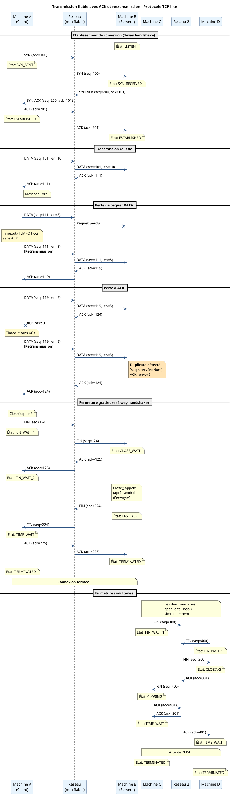
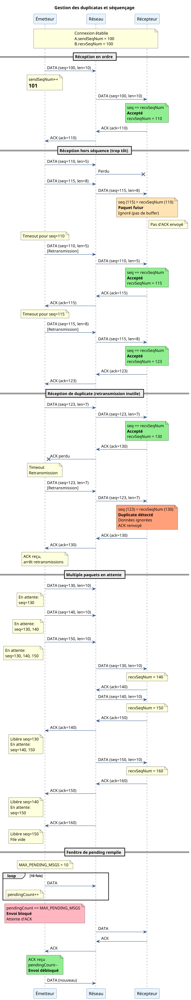
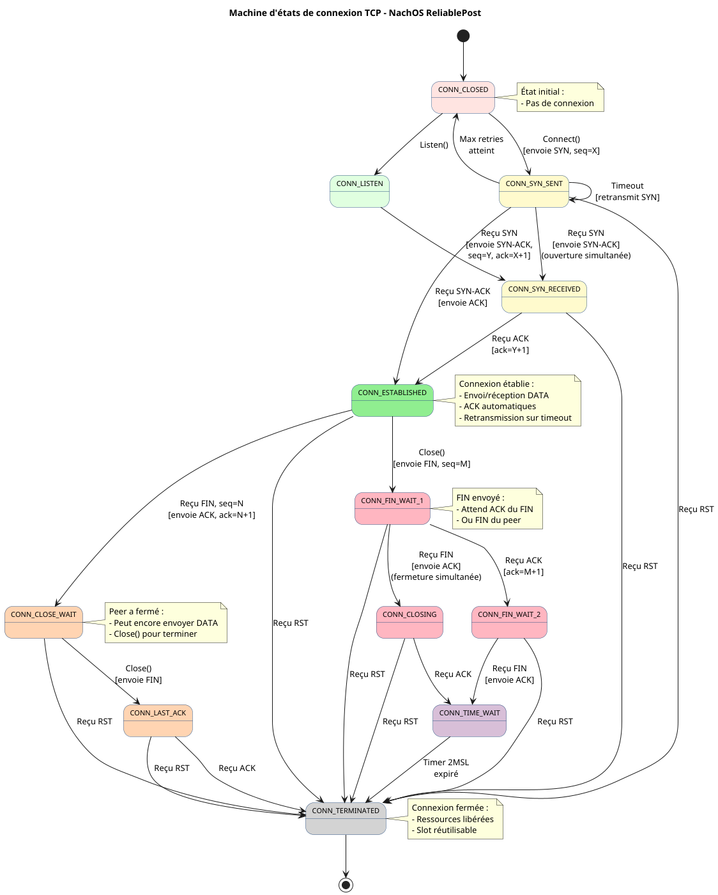

NachOS
Documentation du noyau et des bibliothèques utilisateur de NachOS Team-A.
Table des matières
- Vue d’ensemble
- System Control
- Console
- Threads
- Gestion mémoire
- Opérations temporelles
- Sémaphores
- Process
- Système de fchiers
- Network
Summary
Appels système
- Vue d’ensemble
- System Control
- Console
- Threads
- Gestion mémoire
- Opérations temporelles
- Sémaphores
- Process
- Système de fchiers
- Network
Network
Bibliothèques utilisateur
Constantes du projet
Description des principales constantes utilisées dans le projet Nachos.
Processus et Threads
MAX_THREAD
Valeur : 30
Description : Nombre maximum de threads par processus (actifs ou non)
Fichier : code/userprog/process.h
MAX_PROCESS
Valeur : 15
Description : Nombre maximum de processus dans la machine (actifs ou non)
Fichier : code/userprog/process.h
UserStackSize
Valeur : 16384
Description : Taille en octets de la pile pour les programmes utilisateur
Fichier : code/userprog/addrspace.h
Sémaphores
INITIAL_SEMAPHORE_TABLE_SIZE
Valeur : 16
Description : Taille initiale de la table de sémaphores par processus (peut s’étendre dynamiquement)
Fichier : code/userprog/addrspace.h
MAX_SEMAPHORES_PER_PROCESS
Valeur : 512
Description : Nombre maximum de sémaphores par processus
Fichier : code/userprog/addrspace.h
Mémoire
PageSize
Valeur : SectorSize = 128 octets
Description : Taille d’une page mémoire
Fichier : code/machine/machine.h
NumPhysPages
Valeur : 8192
Description : Nombre de pages physiques disponibles dans la machine
Fichier : code/machine/machine.h
MemorySize
Valeur : NumPhysPages * PageSize = 8192 * 128 = 1 048 576 octets
Description : Taille totale de la mémoire physique
Fichier : code/machine/machine.h
TLBSize
Valeur : 4
Fichier : code/machine/machine.h
Console I/O
MAX_STRING_SIZE
Valeur : 256
Description : Taille maximale d’une chaîne de caractères pour GetString (buffer interne)
Fichier : code/threads/system.h
MAX_PUT_STRING
Valeur : 8192
Description : Nombre maximum d’octets pouvant être écrits en une seule fois avec PutString
Fichier : code/userprog/exception.h
MAX_PATH_SIZE
Valeur : 1024
Description : Longueur maximale d’un chemin de fichier
Fichier : code/threads/system.h
Auteurs
Tommy, 05 Jan 2026
Antoine, 07 Jan 2026
Dernière révision
07 Jan 2026
Vue d’ensemble des appels système
Cette page fournit une vue d’ensemble complète de tous les appels système disponibles dans NachOS.
Introduction
NachOS implémente un ensemble simplifié d’appels système inspiré de UNIX/POSIX. Ces appels permettent aux programmes utilisateur d’interagir avec le noyau pour :
- I/O Console : Lire et écrire sur la console
- Gestion de processus : Créer et gérer des processus
- Gestion de threads : Créer et synchroniser des threads utilisateur
- Système de fichiers : Manipuler des fichiers (partiellement implémenté)
Organisation des appels système
Par numéro (SC_*)
Les appels système sont identifiés par des numéros définis dans syscall.h :
#define SC_Halt 0
#define SC_PutChar 1
#define SC_PutString 2
#define SC_GetChar 3
#define SC_GetString 4
#define SC_PutInt 5
#define SC_GetInt 6
#define SC_Sleep 7
#define SC_SleepUntil 8
#define SC_GetCurrentTick 9
#define SC_time 44
#define SC_SemInit 10
#define SC_SemWait 11
#define SC_SemPost 12
#define SC_SemDestroy 13
#define SC_SetMaxSemForProcess 14
#define SC_futex_wait 15
#define SC_futex_wake 16
#define SC_atomic_cmpxchg 17
#define SC_atomic_store 18
#define SC_atomic_load 19
#define SC_Sbrk 20
#define SC_mmap 21
#define SC_munmap 22
#define SC_thread_create 23
#define SC_thread_exit 24
#define SC_thread_self 25
#define SC_thread_yield 26
#define SC_ForkExec 27
#define SC_ForkJoin 28
#define SC_ForkSelf 29
#define SC_Exit 30
#define SC_connect 31
#define SC_listen 32
#define SC_accept 33
#define SC_sendto 34
#define SC_recvfrom 35
#define SC_close 36
#define SC_Create 37
#define SC_Open 38
#define SC_Read 39
#define SC_Write 40
#define SC_Close 41
#define SC_FileLen 42
#define SC_Seek 43
Limitations connues
Thread-safety partielle
⚠️ Console I/O : Thread-safe au niveau caractère mais pas au niveau message complet.
Exemple de problème :
// Thread 1
PutString("AAAA", 4);
// Thread 2 (simultané)
PutString("BBBB", 4);
// Résultat possible: "AABBAABB" au lieu de "AAAABBBB"
Solution : Protéger les séquences d’I/O avec des sémaphores si nécessaire.
Architecture d’un appel système
Flux d’exécution
Le flux d’un appel système est complexe, et demande un changement de contexte du processeur. A ce titre, il est fortement conseillé de limiter le nombre d’appels système dans le code utilisateur pour minimiser la surcharge associée.
Programme utilisateur
↓
Stub (start.S)
↓ syscall
Exception
↓
ExceptionHandler (exception.cc)
↓
handler_SC_XXX()
↓
Implémentation (synchconsole.cc, userthread.cc, etc.)
↓
Retour
↓
UpdatePC()
↓
Programme utilisateur
Exemple détaillé : PutChar
- Programme :
PutChar('A') - Stub : Charge SC_PutChar (11) dans $2, ‘A’ dans $4
- syscall : Déclenche exception
- ExceptionHandler : Détecte SC_PutChar
- handler_SC_putChar : Lit $4, appelle SynchPutChar
- SynchConsole : Acquiert lock, écrit caractère
- UpdatePC : Incrémente PC
- Retour : Programme continue
Voir aussi
- Console I/O Overview - Détails des appels console
- Gestion des erreurs - Mécanisme errno
- Liste des codes errno - Tous les codes d’erreur
Auteurs
Antoine, 21 Jan 2026 Tommy, 08 Jan 2026
Dernière révision
21 Jan 2026
System Control
Appels système de contrôle
Appels Système de Contrôle
Cette section documente les appels système de contrôle du système Nachos, qui permettent de gérer le cycle de vie du système et des processus.
Vue d’ensemble
Les appels système de contrôle permettent de :
- Arrêter complètement le système Nachos
- Terminer proprement un processus utilisateur
- Retourner des codes de statut
Liste des appels système
Halt
Arrête immédiatement tout le système Nachos et affiche les statistiques de performance.
Utilisation :
void Halt(void);
Cas d’usage :
- Terminaison globale du système
- Fin de programmes de test
- Affichage des statistiques système
Exit
Termine proprement le processus courant en attendant la fin de tous ses threads.
Utilisation :
void Exit(int status);
Cas d’usage :
- Terminaison normale d’un processus
- Gestion d’erreurs avec codes de retour
- Synchronisation avec processus parent
Différences principales
| Caractéristique | Halt | Exit |
|---|---|---|
| Portée | Système entier | Processus courant |
| Autres processus | Terminés | Non affectés |
| Threads du processus | Terminés immédiatement | Attendus avant terminaison |
| Code de retour | Aucun | Retourné au parent |
| Statistiques | Affichées | Non affichées |
| Nettoyage | Minimal | Complet |
Conventions de codes de retour
Les codes de retour suivent généralement ces conventions :
- 0 : Succès, exécution normale
- 1-255 : Erreurs diverses (définies par l’application)
Exemples courants :
#define EXIT_SUCCESS 0
#define EXIT_FAILURE 1
#define EXIT_INVALID_ARG 2
#define EXIT_IO_ERROR 3
Hiérarchie de terminaison
Nachos offre plusieurs niveaux de terminaison :
- Thread :
PthreadExit(retval)- Termine le thread courant - Processus :
Exit(status)- Termine le processus et tous ses threads - Système :
Halt()- Termine tous les processus et le système
Exemples
Terminaison conditionnelle
#include "syscall.h"
int main() {
int value;
int result = GetInt(&value);
if (result != 0) {
PutString("Input error!\n", 13);
Exit(1); // Terminaison avec erreur
}
if (value < 0) {
PutString("Negative value not allowed\n", 27);
Exit(2); // Code d'erreur spécifique
}
PutString("Processing value: ", 18);
PutInt(value);
PutChar('\n');
Exit(0); // Succès
}
Dernier processus déclenche Halt
#include "syscall.h"
int main() {
PutString("This is the only process.\n", 26);
PutString("Exit will trigger Halt!\n", 24);
Exit(0); // Si dernier processus, appelle Halt()
// Équivalent à Halt() dans ce cas
}
Gestion d’erreur
Les appels système de contrôle ne peuvent pas échouer :
- Ils ne retournent jamais au code appelant
- Aucun code d’erreur n’est généré
errnon’est pas modifié
Thread-safety
Les deux appels système sont thread-safe :
- N’importe quel thread peut appeler
HaltouExit - Les appels concurrents sont gérés correctement
- Le premier appel déclenche la terminaison
Voir aussi
- PthreadExit - Terminer un thread
- Join - Récupérer le code de retour d’un processus
- ForkExec - Créer un processus enfant
Notes d’implémentation
Architecture
Les appels système de contrôle sont implémentés dans :
code/userprog/exception.cc- Handlers des syscallscode/threads/interrupt.cc- Logique d’arrêt systèmecode/userprog/process.cc- Gestion des processus
Convention d’appel
Registres utilisés :
- $2 : Numéro de syscall, puis valeur de retour
- $4 : Premier argument (status pour Exit)
- PC : Incrémenté après syscall (sauf Halt/Exit qui ne retournent pas)
Différences POSIX
Nachos simplifie le modèle POSIX :
- Pas de signaux (SIGTERM, SIGKILL, etc.)
- Pas de handlers atexit()
- Pas de groupes de processus
- Code de retour limité à un entier
Auteurs
Alioune Badara DIENE, 8 Jan 2026
Dernière révision
8 Jan 2026
Halt
Halt - Arrête le système Nachos et affiche les statistiques de performance
Synopsis
#include "syscall.h"
void Halt() __attribute__((noreturn));
Description
Halt arrête complètement le système Nachos.Cette fonction affiche les statistiques de performance du système avant de quitter, puis termine immédiatement l’exécution de tous les processus et threads.
Numéro d’appel système : SC_Halt (0)
Comportement nominal
- Appel de
interrupt->Halt()qui affiche les statistiques de performance (cycles CPU, interruptions, etc.) puis déclenche l’arrêt du système - Terminaison complète du système Nachos
- Cette fonction ne retourne jamais
Halt termine le système sans nettoyer les ressources ni attendre
la fin des autres threads ou processus. Utilisez Exit pour une
terminaison propre d'un processus.
Paramètres
Cette fonction ne prend aucun paramètre.
Valeur de retour
Type : void
Cette fonction ne retourne jamais. Elle termine l’exécution du système Nachos.
Codes d’erreur
Aucun. Cette fonction ne peut pas échouer.
Implémentation
Localisation du code
- Stub utilisateur :
code/test/start.S:91 - Handler noyau :
code/userprog/exception.cc:handle_SC_Halt() - Implémentation :
code/threads/interrupt.cc:Interrupt::Halt()
Flux d’exécution
Halt()
│
▼
start.S: Halt
│ charge $2 = SC_Halt (0)
▼
syscall SC_Halt
│
▼
handle_SC_Halt()
│ affiche "Shutdown, initiated by user program."
▼
interrupt->Halt()
│ ├─ affiche les statistiques
│ ├─ cleanup()
│ └─ exit(0)
▼
[Fin du système Nachos]
Exemples
Exemple 1 : Arrêt simple
#include "syscall.h"
int main() {
PutString("System is shutting down...\n", 27);
Halt();
// Cette ligne ne sera jamais exécutée
PutString("This will never print\n", 22);
return 0;
}
Exemple 2 : Arrêt après traitement
#include "syscall.h"
int main() {
int i;
PutString("Processing data...\n", 19);
for (i = 0; i < 10; i++) {
PutInt(i);
PutChar(' ');
}
PutChar('\n');
PutString("Done! Halting system.\n", 22);
Halt();
return 0; // Jamais atteint
}
Exemple 3 : Halt vs Exit
#include "syscall.h"
void *thread_func(void *arg) {
int id = (int)(long)arg;
PutString("Thread ", 7);
PutInt(id);
PutString(" running\n", 9);
if (id == 0) {
PutString("Thread 0 calling Halt()!\n", 25);
Halt(); // Arrête TOUT le système
}
PutString("Thread ", 7);
PutInt(id);
PutString(" finished\n", 10);
return 0;
}
int main() {
posix_thread_t tid0, tid1;
PthreadCreate(&tid0, 0, thread_func, (void *)0);
PthreadCreate(&tid1, 0, thread_func, (void *)1);
PthreadJoin(tid0, 0);
PthreadJoin(tid1, 0); // Jamais atteint si thread 0 appelle Halt
PutString("Main exiting\n", 13); // Jamais atteint
return 0;
}
Sortie attendue :
Thread 0 running
Thread 1 running
Thread 0 calling Halt()!
Machine halting!
[Statistiques de performance affichées]
Cas d’usage
Arrêt de test
Halt est principalement utilisé pour :
- Terminer proprement les programmes de test
- Arrêter le système après une suite de tests
- Simuler un arrêt système complet
Différence avec Exit
| Aspect | Halt | Exit |
|---|---|---|
| Portée | Arrête tout le système | Termine le processus appelant |
| Threads | Tous terminés immédiatement | Attend la fin des threads du processus |
| Autres processus | Terminés | Continuent leur exécution |
| Nettoyage | Minimal | Complet pour le processus |
| Statistiques | Affichées | Non affichées |
Thread-safety
Non applicable. Halt arrête immédiatement le système, quel que soit le thread appelant.
Halt simultanément,
le premier appel arrêtera le système. Les autres threads seront terminés
avant d'atteindre leur appel à Halt.
Statistiques affichées
Lors de l’arrêt, Nachos affiche typiquement :
Ticks: total X, idle Y, system Z, user W
Disk I/O: reads R, writes W
Console I/O: reads R, writes W
Paging: faults F
Network I/O: packets received R, sent S
Ces statistiques permettent d’évaluer les performances du système et des programmes utilisateur.
Voir aussi
- Exit - Terminer un processus proprement
- PthreadExit - Terminer un thread
Auteurs
Alioune Badara DIENE, 8 Jan 2026
Dernière révision
8 Jan 2026
Exit
Exit - Termine proprement le processus courant
Synopsis
#include "syscall.h"
void Exit(int status) __attribute__((noreturn));
Description
Exit termine proprement le processus courant. Cette fonction attend la terminaison de tous les threads du processus, puis libère toutes les ressources associées. Si c’est le dernier processus actif du système, Exit arrête complètement Nachos.
Numéro d’appel système : SC_Exit (1)
Comportement nominal
- Lecture du code de retour
statusdepuis le registre$4 - Écriture du code de retour dans le registre
$2 - Attente de la terminaison de tous les threads du processus via
WaitForAllThreadsTerminate() - Si c’est le dernier processus actif :
- Suppression du processus
- Arrêt du système avec
interrupt->Halt()
- Sinon :
- Marquage du processus pour destruction différée
- Terminaison du thread courant via
currentThread->Finish()
Halt, Exit garantit une terminaison propre
du processus en attendant tous ses threads et en libérant ses ressources.
Paramètres
status
Code de retour du processus, conventionnellement 0 pour succès, non-zéro pour erreur.
Type : int
Direction : IN
Registre : $4
Convention :
0= terminaison normalenon-zéro= erreur ou terminaison anormale
Valeur de retour
Type : void
Cette fonction ne retourne jamais au code utilisateur. Le code de retour status est écrit dans le registre $2 avant la terminaison et peut être récupéré par un processus parent via Join().
Codes d’erreur
Aucun. Cette fonction ne peut pas échouer et ne retourne jamais.
Implémentation
Localisation du code
- Stub utilisateur :
code/test/start.S:99 - Handler noyau :
code/userprog/exception.cc:handle_SC_Exit()
Flux d’exécution
Exit(status)
│
▼
start.S: Exit
│ charge $4 = status
│ charge $2 = SC_Exit (1)
▼
syscall SC_Exit
│
▼
handle_SC_Exit()
│ ├─ lit status depuis $4
│ ├─ écrit status dans $2
│ └─ récupère process
▼
process->WaitForAllThreadsTerminate()
│ attend que tous les threads se terminent
▼
Si dernier processus actif:
│ ├─ delete process
│ └─ interrupt->Halt()
Sinon:
│ ├─ processToBeDestroyed = process
│ └─ currentThread->Finish()
▼
[Processus terminé]
Exemples
Exemple 1 : Terminaison normale
#include "syscall.h"
int main() {
PutString("Hello, Nachos!\n", 15);
PutString("Program completed successfully.\n", 32);
Exit(0); // Code de retour 0 = succès
}
Exemple 2 : Terminaison avec erreur
#include "syscall.h"
int main() {
int result;
result = GetInt(&result);
if (result != 0) {
PutString("Error reading integer!\n", 23);
Exit(1); // Code d'erreur 1
}
PutString("Value read: ", 12);
PutInt(result);
PutChar('\n');
Exit(0); // Succès
}
Exemple 3 : Attente des threads
#include "syscall.h"
void *worker(void *arg) {
int id = (int)(long)arg;
int i;
for (i = 0; i < 5; i++) {
PutString("Thread ", 7);
PutInt(id);
PutString(" iteration ", 11);
PutInt(i);
PutChar('\n');
}
return 0;
}
int main() {
posix_thread_t tid1, tid2;
PutString("Starting threads...\n", 20);
PthreadCreate(&tid1, 0, worker, (void *)1);
PthreadCreate(&tid2, 0, worker, (void *)2);
PutString("Main thread calling Exit()\n", 27);
Exit(0); // Attend automatiquement tid1 et tid2
// Jamais atteint
}
Comportement : Exit attend que les threads 1 et 2 se terminent avant de détruire le processus.
Exemple 4 : Exit vs return
#include "syscall.h"
int main() {
int choice = 1;
if (choice == 0) {
PutString("Using return\n", 13);
return 0; // Équivalent à Exit(0)
} else {
PutString("Using Exit\n", 11);
Exit(0); // Explicite
}
}
return status; est typiquement converti
en Exit(status); par le runtime C. Les deux formes sont équivalentes.
Exemple 5 : Codes de retour conventionnels
#include "syscall.h"
#define SUCCESS 0
#define ERROR_INVALID_INPUT 1
#define ERROR_OVERFLOW 2
#define ERROR_IO 3
int divide(int a, int b, int *result) {
if (b == 0) return ERROR_INVALID_INPUT;
*result = a / b;
return SUCCESS;
}
int main() {
int a = 10, b = 2, result;
int status;
status = divide(a, b, &result);
if (status != SUCCESS) {
PutString("Error: ", 7);
PutInt(status);
PutChar('\n');
Exit(status);
}
PutString("Result: ", 8);
PutInt(result);
PutChar('\n');
Exit(SUCCESS);
}
Cas d’usage
Terminaison normale
Exit est utilisé pour :
- Terminer proprement un programme après son exécution
- Retourner un code de statut au système ou au processus parent
- Garantir la libération de toutes les ressources du processus
Gestion d’erreur
Les codes de retour permettent de signaler différents types d’erreurs :
0: succès1-255: codes d’erreur spécifiques à l’application
Thread-safety
Exit est thread-safe. N’importe quel thread d’un processus peut appeler Exit, et le système garantit que tous les autres threads du processus seront terminés proprement.
Exit simultanément, le premier appel
déclenchera la terminaison du processus. Les autres threads seront terminés
avant d'atteindre leur appel à Exit.
Différences avec POSIX
| Aspect | POSIX exit() | Nachos Exit() |
|---|---|---|
| Prototype | void exit(int status) | void Exit(int status) |
| Casse | Minuscule | Majuscule |
| Threads | Termine tout le processus | Attend les threads du processus |
| atexit() | Appelle les handlers | Non supporté |
| Buffers stdio | Vidés | Non applicable |
| Processus parent | Notifié via SIGCHLD | Peut utiliser Join() |
Relation avec Join()
Le code de retour passé à Exit peut être récupéré par un processus parent utilisant Join() :
// Processus enfant
int main() {
// ... traitement ...
Exit(42);
}
// Processus parent
int main() {
SpaceId child = Exec("child_program");
int status = Join(child); // Récupère 42
PutInt(status);
Exit(0);
}
Voir aussi
- Halt - Arrêter tout le système
- PthreadExit - Terminer un thread
- Join - Attendre un processus enfant
- ForkExec - Créer un processus
Auteurs
Alioune Badara DIENE, 8 Jan 2026
Dernière révision
8 Jan 2026
Console
Appels système de console
Vue d’ensemble - Console I/O
Les appels système de console permettent l’interaction entre les programmes utilisateur et le terminal. NachOS fournit deux catégories d’opérations :
Opérations de base
Sortie
- PutChar : Affiche un caractère unique
- PutString : Affiche une chaîne de caractères
- PutInt : Affiche un entier signé
Entrée
Architecture
Tous les appels système de console utilisent la classe SynchConsole qui fournit :
- Synchronisation : Accès thread-safe via sémaphores
- Blocking I/O : Les appels bloquent jusqu’à complétion
- Pas de buffering : Communication directe avec le hardware
Gestion des erreurs
| Appel | Gestion errno | Valeur de retour |
|---|---|---|
| PutChar | Non | void |
| GetChar | Non | char |
| PutString | Oui | int (bytes écrits ou -1) |
| GetString | Oui | int (bytes lus ou -1) |
| PutInt | Oui | int (0 ou -1) |
| GetInt | Oui | int (0 ou -1) |
Synchronisation
Le sémaphore IO_Lock garantit qu’un seul thread accède à la console à la fois, évitant l’entrelacement des caractères.
Voir aussi
PutChar
PutChar - Écrit un caractère dans la console de sortie standard
SYNOPSIS
#include "syscall.h"
void PutChar(char c);
DESCRIPTION
PutChar écrit le caractère spécifié c dans la console de sortie standard. Cette opération est bloquante et attend que le caractère soit effectivement affiché avant de retourner le contrôle au programme appelant.
Comportement nominal
- Le caractère
cest immédiatement envoyé au périphérique de sortie. - L’appel bloque jusqu’à ce que le périphérique confirme l’écriture.
- Aucun retour de valeur n’est fourni.
- Aucun buffer n’est utilisé, l’écriture est directe.
- L’appel est thread-safe, plusieurs threads peuvent appeler
PutCharsimultanément sans corruption de données. - Aucun effet de bord n’est attendu autre que l’affichage du caractère.
- Les caractères spéciaux (comme
\n,\t) sont traités comme des caractères ordinaires, et leur affichage dépend du comportement du terminal.
Cas particuliers
- Caractères NULL (
\0) : N’est pas visuellement représenté mais peut être envoyé. - Caractères de contrôle : Leur affichage dépend du terminal (ex.
\nprovoque un saut de ligne dans la plupart des terminaux). - Caractères non ASCII : Dépend du support du terminal.
PARAMÈTRES
c
Le caractère à écrire dans la console.
Type : char
Direction : IN
Registre lu : $4
Contraintes :
- Doit être sur 8 bits signé
VALEUR DE RETOUR
Auncune valeur de retour (void). Cet appel ne produit pas de code d’erreur.
CODES D’ERREUR
Aucun code d’erreur n’est défini pour cet appel système. En cas de problème matériel, le comportement est indéfini.
IMPLÉMENTATION
Thread-safety
L’implémentation utilise des sémaphores pour garantir que les appels concurrents à PutChar ne produisent pas d’erreurs, et que chaque caractère demandé soit affiché.
DÉCISIONS DE CONCEPTION
TODO : A compléter (Pourquoi bloquant synchrone, pourquoi pas d’erreur)
EXEMPLES
Exemple 1 : Utilisation basique
#include "syscall.h"
int main() {
PutChar('H');
PutChar('i');
PutChar('\n');
return 0;
}
Sortie attendue :
Hi
Exemple 2 : Affichage d’une chaîne manuellement
#include "syscall.h"
int main() {
const char *msg = "Hello World\n";
int i = 0;
while (msg[i] != '\0') {
PutChar(msg[i]);
i++;
}
return 0;
}
Sortie attendue :
Hello World
COMPORTEMENT DÉTAILLÉ
États de la machine
Avant l’appel :
$4: Contient le caractère à afficherIO_Lock: Peut être libre ou occupé
Pendant l’appel :
- Thread bloqué sur
writeDonesiIO_Lockétait libre - Thread bloqué sur
IO_Locksi un autre thread utilise la console
Après l’appel :
- Caractère affiché sur console
IO_Locklibéré- Registres préservés
PERFORMANCES
Complexité
- Temporelle : O(1) - temps constant + latence hardware
- Spatiale : O(1) - pas d’allocation mémoire
Cas limites
- Pire cas : Contention élevée avec beaucoup de threads écrivant simultanément
- Meilleur cas : Aucune contention,
IO_Lockimmédiatement disponible
NOTES
- Pas de buffering : Chaque appel à
PutChargénère une interaction hardware. - Performance : Pour afficher des chaînes, préférez
PutStringpour réduire le nombre d’appels système. - Thread-safety : L’appel est conçu pour être sûr en environnement multi-thread.
- Atomicité : Chaque appel est atomique vis-à-vis des autres appels à
PutChar.
FAILLES ET VULNÉRABILITÉS
Aucune faille de sécurité connue à ce jour.
BUGS CONNUS
Aucun bug connu à ce jour.
Historique des versions
- v1.0 : Implémentation initiale sans synchronisation
- v1.1 : Ajout de
IO_Lockpour thread-safety
VOIR AUSSI
- PutString - Écrit une chaîne de caractères
- PutInt - Écrit un entier
- GetChar - Lecture d’un caractère
Auteurs
Antoine
Dernière révision
18 Jan 2026
GetChar
GetChar - Lit un caractère depuis la console d’entrée standard
SYNOPSIS
#include "syscall.h"
char GetChar(void);
DESCRIPTION
GetChar lit et retourne un seul caractère depuis la console d’entrée standard (clavier). L’appel bloque jusqu’à ce qu’un caractère soit disponible.
Comportement nominal
- L’appel bloque jusqu’à ce qu’un caractère soit tapé par l’utilisateur
- Le caractère est lu depuis le buffer interne de la console
- Les caractères de contrôle (Ctrl+C, etc.) sont passés tels quels
- L’appel est thread-safe
Cas particuliers
- EOF : Retourné si le flux d’entrée est fermé (ex: redirection fichier terminée)
- Interruption clavier : Les interruptions ne sont pas gérées au niveau syscall
- Buffer vide : Thread bloqué sur sémaphore
readAvailjusqu’à input
PARAMÈTRES
Aucun paramètre.
VALEUR DE RETOUR
Type : char (registre $2)
Valeurs possibles :
- Caractère lu (0x00 à 0x7F, signé)
EOF(-1) si fin de flux
CODES D’ERREUR
Aucun code d’erreur. La variable errno n’est jamais modifiée.
Thread-safety
L’implementation utilise des sémaphores pour garantir un accès exclusif au buffer de la console, évitant les conditions de course lors de lectures concurrentes.
DÉCISIONS DE CONCEPTION
TODO : A compléter (Pourquoi bloquant synchrone, pourquoi pas d’erreur)
EXEMPLES
Exemple 1 : Lecture simple
#include "syscall.h"
int main() {
char c;
PutString("Press any key: ", 15);
c = GetChar();
PutString("\nYou pressed: ", 14);
PutChar(c);
PutChar('\n');
return 0;
}
Interaction :
Press any key: A
You pressed: A
Exemple 2 : Lecture jusqu’à newline
#include "syscall.h"
int main() {
char c;
int count = 0;
PutString("Type and press Enter:\n", 22);
do {
c = GetChar();
PutChar(c);
count++;
} while (c != '\n');
PutString("Characters typed: ", 18);
PutInt(count - 1); // -1 pour exclure '\n'
PutChar('\n');
return 0;
}
Exemple 3 : Gestion EOF
#include "syscall.h"
int main() {
char c;
while ((c = GetChar()) != EOF) {
PutChar(c);
}
PutString("\nEOF reached\n", 13);
return 0;
}
COMPORTEMENT DÉTAILLÉ
États de la machine
Avant l’appel :
- Thread peut être en READY ou RUNNING
readAvail: 0 ou plus (selon buffer)IO_Lock: libre ou occupé
Pendant l’appel :
- Thread en état BLOCKED sur
readAvail - Attend interruption clavier
- CPU libéré pour d’autres threads
Après l’appel :
$2: Contient le caractère lu- Autres registres préservés
- Thread retourne en RUNNING
IO_Locklibéré
PERFORMANCES
Complexité
- Temporelle : O(1) + temps d’attente utilisateur
- Spatiale : O(1)
NOTES
- Pas de buffering : Chaque caractère nécessite un appel système
- Efficacité : Pour lire des chaînes, utilisez
GetString - Thread-safety : Sûr mais non recommendé, car il n’y a pas de garantie d’ordre entre threads
- Atomicité : Chaque appel est atomique vis-à-vis des autres appels à
GetChar
FAILLES ET VULNÉRABILITÉS
Pas de timeout
Description : GetChar peut bloquer indéfiniment.
Impact : Programmes ne peuvent pas implémenter de timeout sur la lecture
BUGS CONNUS
Aucun bug connu à ce jour.
Historique des versions
- v1.0 : Implémentation initiale sans synchronisation
- v1.1 : Ajout de
IO_Lockpour thread-safety
VOIR AUSSI
Auteurs
Antoine
Dernière révision
18 Jan 2026
PutString
PutString - Écrit une chaîne de caractères dans la console de sortie standard
SYNOPSIS
#include "syscall.h"
int PutString(char *s, int n);
DESCRIPTION
PutString écrit jusqu’à n octets de la chaîne pointée par s vers la console de sortie standard. L’écriture s’arrête au premier caractère null (\0) rencontré ou après n octets, selon ce qui arrive en premier.
Comportement nominal
- Écrit jusqu’à
noctets depuiss - S’arrête au premier
\0(non compté dans le retour) - Retourne le nombre d’octets effectivement écrits
- Bloque jusqu’à ce que tous les caractères soient affichés
- Thread-safe via
IO_Lock - Limite maximale :
MAX_PUT_STRING(8192 octets)
Cas particuliers
- n = 0 : Retourne immédiatement 0
- n < 0 : Retourne -1,
errno = E_INVAL - n > MAX_PUT_STRING : Tronqué à
MAX_PUT_STRING - Pointeur NULL : Comportement indéfini
- Overflow arithmétique : Retourne -1,
errno = E_OVERFLOW
PARAMÈTRES
s
Pointeur vers la chaîne de caractères à écrire.
Type : char *
Direction : IN
Registre : $4 (adresse virtuelle)
Contraintes :
- Doit pointer vers mémoire accessible en lecture
- NON VÉRIFIÉ : Peut être dans l’espace noyau
- NON VÉRIFIÉ : Peut être NULL
n
Nombre maximum d’octets à écrire (\0 est exclu).
Type : int
Direction : IN
Registre : $5
Contraintes :
- Doit être ≥ 0
- Si >
MAX_PUT_STRING, tronqué automatiquement - Ne compte pas le
\0terminal
VALEUR DE RETOUR
Type : int (registre $2)
En cas de succès : Nombre d’octets écrits (0 à n), hors \0
En cas d’erreur : -1 et errno est défini
CODES D’ERREUR
| errno | Constante | Condition |
|---|---|---|
| 1 | E_INVAL | n < 0 |
| 2 | E_FAULT | addr < 0 |
| 3 | E_OVERFLOW | n > INT32_MAX - addr |
IMPLÉMENTATION
Synchronisation
Sémaphore IO_Lock
- Acquis par chaque appel à
SynchPutChardansSynchPutString - Libéré après chaque caractère affiché
- Pas de garantie d’atomicité pour la chaîne complète
Thread-safety
Garanti au niveau caractère : Pas d’entrelacement de caractères individuels
NON garanti au niveau chaîne : Deux threads peuvent entrelacer leurs chaînes :
Thread 1: PutString("AAAA", 4)
Thread 2: PutString("BBBB", 4)
Résultat possible: "AABBAABB"
DÉCISIONS DE CONCEPTION
TODO : A compléter (MAX_PUT_STRING, Taille de buffer intermédiaire, Arrêt au \0)
EXEMPLES
Exemple 1 : Utilisation basique
#include "syscall.h"
int main() {
int n = PutString("Hello, World!\n", 14);
// n = 14 (tous les caractères écrits)
return 0;
}
Exemple 2 : Arrêt au \0
#include "syscall.h"
int main() {
char msg[] = "Hello\0 World";
int n = PutString(msg, 100);
// n = 5 (s'arrête au \0)
// Affiche: "Hello"
return 0;
}
Exemple 3 : Gestion d’erreur
#include "syscall.h"
#include "my_stdlib.h"
int main() {
char msg[] = "Test";
int n = PutString(msg, -10); // Taille négative
// n = -1
if (n == -1) {
// errno contient E_INVAL
}
return 0;
}
Exemple 4 : Chaîne longue
#include "syscall.h"
int main() {
char long_msg[10000];
// Remplir long_msg...
// Sera tronqué à MAX_PUT_STRING (8192)
int n = PutString(long_msg, 10000);
// n = 8192
return 0;
}
COMPORTEMENT DÉTAILLÉ
États de la machine
Avant l’appel :
$4: Adresse de la chaîne en mémoire utilisateur$5: Nombre d’octets maximum- Mémoire utilisateur : Contient la chaîne
Pendant l’appel :
- Buffer noyau alloué sur stack (256 octets)
- Boucle de copie + affichage
- Thread peut être bloqué sur
IO_Lock
Après l’appel :
$v0: Nombre d’octets écrits ou -1errno: Code d’erreur ou 0
PERFORMANCES
Complexité
- Temporelle : O(n) où n = min(longueur_chaîne, n_param, MAX_PUT_STRING)
- Spatiale : O(1) - buffer fixe de 256 octets
NOTES
- Buffer par blocs : Réduit les appels à
copyStringFromMachine - Limite de 8KB : Applications doivent gérer les chaînes plus longues
- Thread-safety partielle : Caractères atomiques mais pas les chaînes complètes
FAILLES ET VULNÉRABILITÉS
Description : Un programme peut monopoliser la console indéfiniment.
Impact : DoS par spam de PutString en boucle
Exploitation :
while (1) {
PutString("SPAM", 4);
}
BUGS CONNUS
Aucun bug connu à ce jour.
Historique des versions
- v1.0 : Implémentation initiale
- v2.0 : Ajout du paramètre
n, déplacement vers un handler dédié - v3.0 : Ajout de la valeur de retour
- v3.1 : Ajout de la gestion des quelques erreurs avec
errno - v3.2 : Correction du retour en cas d’erreur partielle (retourne le nombre d’octets écrits avant que l’erreur ne survienne)
VOIR AUSSI
Auteurs
Antoine
Dernière révision
18 Jan 2026
GetString
GetString - Lit une chaîne de caractères depuis la console d’entrée standard
SYNOPSIS
#include "syscall.h"
int GetString(char *s, int n);
DESCRIPTION
GetString lit jusqu’à n-1 caractères depuis la console d’entrée et les stocke dans le buffer pointé par s. La lecture s’arrête lorsqu’un caractère newline (\n) est rencontré ou après n-1 caractères. Un caractère null (\0) est toujours ajouté à la fin, ce qui justifie la lecture de n-1 caractères maximum.
Comportement nominal
- Lit jusqu’à
n-1caractères (réserve 1 octet pour\0) - S’arrête au premier
\n(inclus dans la chaîne) - Ajoute automatiquement
\0terminal - Retourne le nombre de caractères lus (hors
\0) - Bloque jusqu’à ce que
\nsoit tapé oun-1caractères lus - Thread-safe via
IO_Lock
Cas particuliers
- n = 0 : Retourne 0, aucune lecture effectuée
- n < 0 : Retourne -1,
errno = E_INVAL - n = 1 : Lit 0 caractère, écrit seulement
\0 - n > MAX_STRING_SIZE : Tronqué à
MAX_STRING_SIZE(256) - EOF : Retourne nombre de caractères lus jusqu’à EOF
- Pointeur NULL : Comportement indéfini (pas de vérification)
PARAMÈTRES
s
Pointeur vers le buffer où stocker la chaîne lue.
Type : char *
Direction : OUT
Registre : $4 (adresse virtuelle)
Contraintes :
- Doit pointer vers mémoire accessible en écriture
- Doit être alloué par l’appelant
- Doit avoir au moins
noctets d’espace - NON VÉRIFIÉ : Peut être dans l’espace noyau
- NON VÉRIFIÉ : Peut être NULL
Résponsabilité de l’appelant : S’assurer que s est valide et suffisamment grand, sinon, des données adjacentes peuvent être corrompues.
n
Taille du buffer (incluant l’espace pour \0).
Type : int
Direction : IN
Registre : $5
Contraintes :
- Doit être ≥ 0
- Si >
MAX_STRING_SIZE, tronqué automatiquement - Au plus n-1 caractères lus
VALEUR DE RETOUR
Type : int (registre $2)
En cas de succès : Nombre de caractères lus (hors \0), peut être 0
En cas d’erreur : -1 et errno est défini
CODES D’ERREUR
| errno | Constante | Condition |
|---|---|---|
| 1 | E_INVAL | n < 0 |
| 2 | E_FAULT | addr < 0 |
IMPLÉMENTATION
Synchronisation
Sémaphore IO_Lock
- Acquis par
SynchGetCharpour chaque caractère - Libéré après chaque lecture
- Garantit atomicité de la lecture de chaque caractère, mais pas de la chaîne complète
Sémaphore readAvail
- P() pour chaque caractère attendu
- V() lorsqu’un caractère est disponible
Thread-safety
Caractères : Pas de corruption de caractères individuels
Chaînes : Deux threads peuvent recevoir des caractères entrelacés :
User types: "ABCD\n"
Thread 1: GetString(buf1, 10)
Thread 2: GetString(buf2, 10)
Résultat possible:
buf1 = "AC\n"
buf2 = "BD\n"
DÉCISIONS DE CONCEPTION
TODO : A compléter (Inclure \n, taille max, arrêt au \n)
EXEMPLES
Exemple 1 : Utilisation basique
#include "syscall.h"
int main() {
char buffer[100];
PutString("Enter your name: ", 17);
int n = GetString(buffer, 100);
PutString("Hello, ", 7);
PutString(buffer, n);
return 0;
}
Interaction :
Enter your name: Bjarn Stroustrup
Hello, Bjarn Stroustrup
Exemple 2 : Buffer petit
#include "syscall.h"
int main() {
char buffer[5]; // Seulement 4 chars + \0
PutString("Type: ", 6);
int n = GetString(buffer, 5);
// Si l'utilisateur tape "Hello\n":
// buffer = "Hell" (tronqué, pas de \n)
// n = 4
PutString("Got: ", 5);
PutString(buffer, n);
return 0;
}
Exemple 3 : Gestion d’erreur
#include "syscall.h"
#include "my_stdlib.h"
int main() {
char buffer[64];
int n = GetString(buffer, -10); // Taille négative
// n = -1
if (n == -1) {
// errno contient E_INVAL
}
return 0;
}
Exemple 4 : Retirer le newline
#include "syscall.h"
int main() {
char buffer[100];
int n = GetString(buffer, 100);
// Retirer le \n si présent
if (n > 0 && buffer[n-1] == '\n') {
buffer[n-1] = '\0';
n--;
}
PutString("Without newline: ", 17);
PutString(buffer, n);
return 0;
}
COMPORTEMENT DÉTAILLÉ
États de la machine
Avant l’appel :
$4: Adresse buffer utilisateur$5: Taille du buffer- Buffer peut contenir n’importe quoi
Pendant l’appel :
- Buffer noyau alloué sur stack (max 256 octets)
- Boucle de lecture caractère par caractère
- Thread bloqué sur chaque
SynchGetChar
Après l’appel :
$2: Nombre de caractères lus (ou -1)- Buffer utilisateur : Contient la chaîne +
\0 errno: 0 ou code d’erreur
PERFORMANCES
Complexité
- Temporelle : O(n) où n = nombre de caractères lus
- Spatiale : O(min(n, MAX_STRING_SIZE)) - buffer sur stack
NOTES
- Buffer stack : Limité à 256 octets
- Newline inclus : L’appel retourne le
\ndans la chaîne mais le charactère n’est pas compté dans le retour - EOF : En fin de fichier, retourne caractères lus
FAILLES ET VULNÉRABILITÉS
Limitation MAX_STRING_SIZE
Description : Ajouter une constante MAX_GET_STRING sur le modèle de MAX_PUT_STRING, et remplir plusieurs fois le buffer si nécessaire.
Workaround :
char big_buffer[1000];
int offset = 0;
while (offset < 999) {
int n = GetString(big_buffer + offset, 256);
if (big_buffer[offset + n - 1] == '\n') break;
offset += n;
}
Pas de timeout
Description : Peut bloquer indéfiniment en attendant l’utilisateur.
Impact : Pas de mécanisme pour timeout programmatique
BUGS CONNUS
Aucun bug connu à ce jour.
Historique des versions
- v1.0 : Implémentation initiale
- v2.0 : Ajout de la valeur de retour
VOIR AUSSI
Auteurs
Antoine
Dernière révision
18 Jan 2026
PutInt
PutInt - Écrit un entier dans la console de sortie standard
SYNOPSIS
#include "syscall.h"
int PutInt(int n);
DESCRIPTION
PutInt convertit l’entier n en représentation décimale ASCII et l’affiche sur la console de sortie standard.
Comportement nominal
- Convertit l’entier en chaîne décimale
- Affiche le signe
-pour les nombres négatifs - Pas de formatage spécial (pas de padding, pas de séparateurs)
- Utilise
snprintfpuisSynchPutStringen interne - Thread-safe via
IO_Lock - Retourne 0 en cas de succès, -1 en cas d’erreur
Cas particuliers
- Nombres négatifs : Préfixés par
-
PARAMÈTRES
n
L’entier à afficher.
Type : int (32-bit signé)
Direction : IN
Registre : $4
Contraintes :
- Aucune contrainte sur la valeur
- Plage : -2147483648 à 2147483647
VALEUR DE RETOUR
Type : int (registre $2)
En cas de succès : 0
En cas d’erreur : -1 et errno est défini
CODES D’ERREUR
Auncun code d’erreur spécifique défini. Hérite des erreurs de SynchPutString qui est utilisé en interne.
IMPLÉMENTATION
Synchronisation
Hérite de la synchronisation de SynchPutString :
IO_Lockpour exclusivité- Bloquant jusqu’à affichage complet
Thread-safety
Garanti au niveau caractère via SynchPutString
Pas garanti au niveau nombre : Deux threads peuvent entrelacer leurs chiffres
DÉCISIONS DE CONCEPTION
Choix 1 : Buffer de 12 octets
Problème : Quelle taille de buffer pour la conversion ?
Solution retenue : 12 octets
Justification :
- INT_MIN = -2147483648 : 11 caractères +
\0= 12 octets - Suffisant pour tous les int 32-bit signés
- Stack allocation (pas de malloc)
EXEMPLES
Exemple 1 : Affichage de divers entiers
#include "syscall.h"
int main() {
PutInt(42);
PutChar('\n');
PutInt(-12345);
PutChar('\n');
PutInt(0);
PutChar('\n');
PutInt(2147483647); // INT_MAX
PutChar('\n');
return 0;
}
Sortie :
42
-12345
0
2147483647
Exemple 2 : Calcul et affichage
#include "syscall.h"
int main() {
int a = 10, b = 20;
int sum = a + b;
PutInt(a);
PutString(" + ", 3);
PutInt(b);
PutString(" = ", 3);
PutInt(sum);
PutChar('\n');
return 0;
}
Sortie :
10 + 20 = 30
États de la machine
Avant l’appel :
$4: Valeur de l’entier à afficher
Pendant l’appel :
- Stack : buffer de 12 octets alloué
- Conversion int → string
- Affichage via console
Après l’appel :
$2: 0 (si succès) ou -1 (si erreur)errno: défini si erreur (erreur de SynchPutString)
PERFORMANCES
Complexité
- Temporelle : O(log₁₀(n)) pour conversion + O(d) pour affichage (d = nombre de chiffres)
- Spatiale : O(1) - buffer fixe de 12 octets
NOTES
- Décimal uniquement : Pas de support hexa/octal
- Pas de padding : Pas d’espaces ou zéros de remplissage
- Thread-safe partiel : Caractères atomiques mais pas les nombres
- Dépend de snprintf : Assume que la libc est linkée au noyau
FAILLES ET VULNÉRABILITÉS
Dépendance à snprintf
Description : Utilise snprintf de la libc standard.
Impact :
- Fonctionne seulement si libc est linkée au noyau
- Comportement dépend de l’implémentation libc
Alternative : Implémenter une conversion manuelle int→string
BUGS CONNUS
Aucun bug connu.
Historique des versions
- v1.0 : Implémentation initiale
- v1.1 : Ajout du retour explicite manquant
VOIR AUSSI
Auteurs
Antoine
Dernière révision
18 Jan 2026
GetInt
GetInt - Lit un entier depuis la console d’entrée standard
SYNOPSIS
#include "syscall.h"
int GetInt(int *n);
DESCRIPTION
GetInt lit une ligne de texte depuis la console, la convertit en entier, et stocke le résultat à l’adresse pointée par n. La fonction attend que l’utilisateur tape Enter après avoir saisi un nombre.
Comportement nominal
- Lit jusqu’à 11 caractères (taille d’un int 32-bit)
- Utilise
SynchGetStringpuissscanfpour la conversion - Accepte les nombres négatifs (préfixe
-) - Retourne 0 en cas de succès, -1 en cas d’erreur
- Bloque jusqu’à ce que Enter soit pressé
Cas particuliers
- Entrée vide : Erreur, retourne -1
- Entrée non-numérique : Erreur (
errno = E_INVAL) - Overflow : Comportement dépend de
sscanf(typiquement INT_MAX/MIN) - Plusieurs nombres : Seul le premier est pris (
"42 56"→ 42)
PARAMÈTRES
n
Pointeur vers l’entier où stocker le résultat.
Type : int *
Direction : OUT
Registre : $4
Contraintes :
- Doit pointer vers mémoire accessible en écriture
- Doit être aloué par le programme utilisateur
- NON VÉRIFIÉ : Peut être NULL
- NON VÉRIFIÉ : Peut être dans l’espace noyau
VALEUR DE RETOUR
Type : int (registre $2)
En cas de succès : 0 et *n contient la valeur lue
En cas d’erreur : -1 et errno est défini
CODES D’ERREUR
| errno | Constante | Condition |
|---|---|---|
| 1 | E_INVAL | Format invalide (non numérique) |
| 2 | E_FAULT | addr < 0 |
IMPLÉMENTATION
Synchronisation
Hérite de SynchGetString :
IO_Lockpour exclusivitéreadAvailpour attendre input utilisateur- Bloquant jusqu’à newline
Thread-safety
Hérite de SynchGetString :
- Garanti au niveau caractère
- Pas garanti au niveau nombre : Entrées entrelacées possibles
DÉCISIONS DE CONCEPTION
Choix 1 : Buffer de 12 octets
Problème : Quelle taille pour lire la chaîne ?
Solution retenue : 12 octets
Justification :
- INT_MIN = -2147483648 : 11 caractères +
\0= 12 octets - Cohérent avec
PutInt
EXEMPLES
Exemple 1 : Utilisation basique
#include "syscall.h"
int main() {
int number;
PutString("Enter a number: ", 16);
GetInt(&number);
PutString("You entered: ", 13);
PutInt(number);
PutChar('\n');
return 0;
}
Interaction :
Enter a number: 42
You entered: 42
Exemple 2 : Gestion d’erreur
#include "syscall.h"
#include "my_stdlib.h"
int main() {
int number;
int result;
PutString("Enter a number: ", 16);
result = GetInt(&number);
if (result == -1) {
print_error("Invalid input");
// errno contient E_INVAL
} else {
PutString("Valid: ", 7);
PutInt(number);
PutChar('\n');
}
return 0;
}
Interaction :
Enter a number: abc
Invalid input
Exemple 3 : Boucle de validation
#include "syscall.h"
int main() {
int number;
int valid = 0;
while (!valid) {
PutString("Enter a positive number: ", 25);
if (GetInt(&number) == 0 && number > 0) {
valid = 1;
} else {
PutString("Invalid, try again.\n", 20);
}
}
PutString("Thank you! You entered: ", 24);
PutInt(number);
PutChar('\n');
return 0;
}
Exemple 4 : Calcul
#include "syscall.h"
int main() {
int a, b, sum;
PutString("Enter first number: ", 20);
GetInt(&a);
PutString("Enter second number: ", 21);
GetInt(&b);
sum = a + b;
PutInt(a);
PutString(" + ", 3);
PutInt(b);
PutString(" = ", 3);
PutInt(sum);
PutChar('\n');
return 0;
}
COMPORTEMENT DÉTAILLÉ
États de la machine
Avant l’appel :
$4: Adresse où écrire l’entier- Mémoire à
addr: Contenu indéfini
Pendant l’appel :
- Buffer de 12 octets alloué sur stack
- Lecture de la ligne (bloquant)
- Conversion string → int
Après l’appel :
$v0: 0 (succès) ou -1 (erreur)*n: Contient la valeur lue (si succès)errno: 0 ou code d’erreur
PERFORMANCES
Complexité
- Temporelle : O(k) où k = longueur de l’entrée utilisateur (max 12)
- Spatiale : O(1) - buffer fixe de 12 octets
NOTES
- Format décimal uniquement : Pas de support hexa/octal
- Overflow : Comportement de
sscanf(wraparound ou INT_MAX/MIN)
FAILLES ET VULNÉRABILITÉS
Pas de timeout
Description : Bloque indéfiniment en attendant l’utilisateur.
Impact : Pas de mécanisme de timeout programmatique
BUGS CONNUS
Aucun bug connu à ce jour.
Historique des versions
- v1.0 : Implémentation initiale
- v2.0 : Ajout de la valeur de retour et gestion d’erreurs basique
- v2.1 : Fix allocation inutile
VOIR AUSSI
Auteurs
Antoine
Dernière révision
18 Jan 2026
Threads
Appels système Threads
Primitives de synchronisation
Opérations atomiques
Threads - Appels système
Cette page documente les appels système pour la gestion des threads dans NachOS.
Vue d’ensemble
NachOS fournit un ensemble d’appels système permettant la création et la gestion de threads utilisateur. Ces syscalls constituent la couche basse sur laquelle des bibliothèques de plus haut niveau (comme pthread) peuvent être construites.
Modèle d’exécution
NachOS utilise un modèle 1:1 où chaque thread utilisateur correspond à un thread noyau :
┌────────────────────────────────────────┐
│ Espace utilisateur │
│ ┌─────────┐ ┌─────────┐ ┌─────────┐ │
│ │Thread 0 │ │Thread 1 │ │Thread 2 │ │
│ └────┬────┘ └────┬────┘ └────┬────┘ │
├───────┼───────────┼───────────┼────────┤
│ │ │ │ │
│ ┌────▼────┐ ┌────▼────┐ ┌────▼────┐ │
│ │KThread 0│ │KThread 1│ │KThread 2│ │
│ └─────────┘ └─────────┘ └─────────┘ │
│ Espace noyau │
└────────────────────────────────────────┘
API rapide
| Syscall | Description |
|---|---|
| thread_create | Créer un nouveau thread |
| thread_exit | Terminer le thread courant |
| thread_self | Obtenir le TID du thread courant |
| thread_yield | Céder le CPU volontairement |
Primitives de synchronisation
| Syscall | Description |
|---|---|
| futex_wait | Attendre sur un futex |
| futex_wake | Réveiller des threads en attente |
Opérations atomiques
| Syscall | Description |
|---|---|
| atomic_cmpxchg | Compare-and-swap atomique |
| atomic_store | Écriture atomique |
| atomic_load | Lecture atomique |
Architecture
Création de thread
Le syscall thread_create reçoit une structure user_thread_args contenant :
typedef struct {
ptr_32 entry; // Point d'entrée (fonction)
ptr_32 arg; // Argument à passer
ptr_32 user_sp; // Stack pointer (0 = allocation auto)
ptr_32 tls_base; // Base du TLS (0 = pas de TLS)
} user_thread_args;
Thread-Local Storage (TLS)
Chaque thread peut avoir une zone TLS pointée par le registre $gp. La structure TLS contient :
typedef struct _tls {
struct _tls* self; // Auto-référence
int errno_val; // errno thread-local
int pthread_ptr; // Pointeur lib pthread
void* tsd[TLS_MAX_KEYS]; // Données thread-specific
} tls_t;
Identifiants de thread (TID)
Chaque thread possède un TID unique au sein de son processus :
- TID 0 : Thread principal (créé automatiquement)
- TID 1..N : Threads créés via
thread_create
Les TID sont alloués via un bitmap et recyclés à la terminaison du thread.
Cycle de vie d’un thread
États possibles
| État | Description |
|---|---|
JUST_CREATED | Thread créé mais pas encore démarré |
READY | Prêt à s’exécuter, attend le scheduler |
RUNNING | En cours d’exécution |
BLOCKED | Bloqué (futex, sémaphore, SleepUntil) |
SLEEP | En sommeil (Sleep) |
TERMINATED | Terminé, en attente de nettoyage |
Layout mémoire
Espace d'adressage du processus
┌────────────────────────────┐ ← Haut de mémoire
│ Stack thread 0 │
├────────────────────────────┤
│ Stack thread 1 │
├────────────────────────────┤
│ Stack thread 2 │
├────────────────────────────┤
│ ... │
├────────────────────────────┤
│ Espace libre │
├────────────────────────────┤
│ Heap │
├────────────────────────────┤
│ .bss │
├────────────────────────────┤
│ .data │
├────────────────────────────┤
│ .code │
└────────────────────────────┘ ← 0
Exemple complet
#include "syscall.h"
#include "nos_errno.h"
// Structure pour passer les arguments au thread
typedef struct {
unsigned int entry;
unsigned int arg;
unsigned int user_sp;
unsigned int tls_base;
} thread_args;
void thread_func(int arg) {
PutString("Thread ", 7);
PutInt(thread_self());
PutString(" avec arg=", 10);
PutInt(arg);
PutChar('\n');
thread_exit();
}
int main() {
thread_args args;
args.entry = (unsigned int)thread_func;
args.arg = 42;
args.user_sp = 0; // Stack auto
args.tls_base = 0; // Pas de TLS custom
int tid = thread_create(&args);
if (tid == -1) {
PutString("Erreur creation thread\n", 23);
return 1;
}
PutString("Thread cree, TID=", 17);
PutInt(tid);
PutChar('\n');
// Attendre un peu
for (int i = 0; i < 100000; i++) {
// Simuler du travail
}
return 0;
}
Voir aussi
- thread_create - Créer un thread
- thread_exit - Terminer un thread
- errno - Gestion des erreurs
- Sémaphores - Synchronisation haut niveau
Auteurs
Antoine
Dernière révision
18 Jan 2026
thread_create
thread_create - Crée un nouveau thread dans le processus courant.
Synopsis
#include "syscall.h"
int thread_create(void* args);
Description
thread_create crée un nouveau thread utilisateur qui partage l’espace d’adressage du processus appelant.
Comportement
- Copie la structure
user_thread_argsdepuis l’espace utilisateur - Valide les paramètres (entry point, stack, TLS)
- Crée un nouveau thread noyau associé au processus
- Configure les registres utilisateur du nouveau thread
- Ajoute le thread à la file d’ordonnancement
- Retourne le TID du nouveau thread
Paramètres
args
Pointeur vers une structure user_thread_args :
typedef struct {
ptr_32 entry; // Adresse de la fonction à exécuter
ptr_32 arg; // Argument passé à la fonction
ptr_32 user_sp; // Stack pointer (0 = allocation auto)
ptr_32 tls_base; // Base du TLS (0 = pas de TLS)
} user_thread_args;
Type : void* (pointeur vers user_thread_args)
Direction : IN
Registre : $4
Champs de la structure
| Champ | Description | Contraintes |
|---|---|---|
entry | Point d’entrée du thread | Adresse valide, alignée sur 4 octets, dans le segment code |
arg | Argument passé à la fonction | Aucune (peut être 0) |
user_sp | Stack pointer initial | 0 ou adresse de stack valide |
tls_base | Base du Thread-Local Storage | 0 ou adresse TLS valide |
Valeur de retour
Type : int (registre $2)
| Valeur | Signification |
|---|---|
>= 0 | TID du thread créé |
-1 | Erreur (consulter errno) |
Exemples
Exemple 1 : Création simple
#include "syscall.h"
typedef struct {
unsigned int entry;
unsigned int arg;
unsigned int user_sp;
unsigned int tls_base;
} thread_args;
void worker(int value) {
PutString("Worker: ", 8);
PutInt(value);
PutChar('\n');
thread_exit();
}
int main() {
thread_args args = {
.entry = (unsigned int)worker,
.arg = 42,
.user_sp = 0,
.tls_base = 0
};
int tid = thread_create(&args);
if (tid >= 0) {
PutString("Thread cree: TID=", 17);
PutInt(tid);
PutChar('\n');
}
return 0;
}
Exemple 2 : Avec TLS personnalisé
#include "syscall.h"
#include "tls.h"
// Allouer une zone TLS
char tls_area[TLS_TOTAL_SIZE] __attribute__((aligned(4)));
void thread_with_tls(int arg) {
// Le TLS est accessible via $gp
tls_t* tls = __get_tls();
tls->errno_val = 0;
// ...
thread_exit();
}
int main() {
// Initialiser la structure TLS
tls_t* tls = (tls_t*)tls_area;
tls->self = tls;
tls->errno_val = 0;
thread_args args = {
.entry = (unsigned int)thread_with_tls,
.arg = 0,
.user_sp = 0,
.tls_base = (unsigned int)tls_area
};
thread_create(&args);
return 0;
}
Limitations
thread_create ne fournit pas de mécanisme pour attendre
la terminaison du thread. Utilisez les futex ou la bibliothèque pthread pour
synchroniser avec les threads créés.
user_sp est 0, la stack est allouée automatiquement par le noyau.
Si vous fournissez votre propre stack, assurez-vous qu'elle est correctement alignée
et de taille suffisante.
Thread-safety
L’appel thread_create est thread-safe. Plusieurs threads peuvent créer des threads simultanément.
Voir aussi
- thread_exit - Terminer un thread
- thread_self - Obtenir son TID
- Threads Overview - Vue d’ensemble
- errno - Gestion des erreurs
Auteurs
Antoine
Dernière révision
18 Jan 2026
thread_exit
thread_exit - Termine le thread courant.
Synopsis
#include "syscall.h"
void thread_exit();
Description
thread_exit termine immédiatement l’exécution du thread appelant. Les ressources du thread sont libérées et le thread est retiré de la liste des threads du processus.
Comportement
- Marque le thread comme
TERMINATED - Signale au processus que le thread a terminé
- Retire le thread de la liste des threads du processus
- Libère le CPU
thread_exit ne retourne jamais. Tout code placé après cet appel
ne sera jamais exécuté.
Paramètres
Aucun paramètre.
Valeur de retour
Cette fonction ne retourne pas.
Exemples
Exemple : Terminaison simple
#include "syscall.h"
void worker(int arg) {
PutString("Travail en cours...\n", 20);
// Travail terminé
thread_exit();
// Ce code n'est JAMAIS exécuté
PutString("Jamais affiche\n", 15);
}
thread_exit(), les autres threads
du processus continuent leur exécution. Le processus ne se termine que lorsque
tous ses threads ont terminé.
Comportement spécial
Dernier thread du processus
Quand le dernier thread d’un processus appelle thread_exit() :
- Le processus est marqué comme terminé
- Le code de sortie est défini (0 par défaut)
- Les ressources du processus sont nettoyées
Ressources libérées
À la terminaison d’un thread :
- Stack noyau : libérée
- Contexte CPU : abandonné
- TID : recyclé pour réutilisation
thread_exit.
Si vous avez alloué manuellement ces ressources, utilisez la bibliothèque pthread
qui gère le nettoyage, ou libérez-les avant d'appeler thread_exit.
Différence avec return
Dans une fonction thread, return et thread_exit() ont le même effet :
void worker(int arg) {
// Ces deux sont équivalents :
thread_exit();
// ou
return; // Appelle implicitement thread_exit()
}
Cependant, thread_exit() peut être appelé depuis n’importe où dans la pile d’appels, pas seulement depuis la fonction de niveau supérieur.
Thread-safety
L’appel est thread-safe et peut être utilisé simultanément par plusieurs threads sans risque de corruption de données.
Voir aussi
- thread_create - Créer un thread
- thread_self - Obtenir son TID
- Threads Overview - Vue d’ensemble
Auteurs
Antoine
Dernière révision
18 Jan 2026
thread_self
thread_self - Retourne l’identifiant du thread courant.
Synopsis
#include "syscall.h"
int thread_self();
Description
thread_self retourne le TID (Thread IDentifier) du thread appelant. Cet identifiant est unique au sein du processus.
Comportement
L’appel retourne immédiatement le TID stocké dans la structure du thread courant.
Paramètres
Aucun paramètre.
Valeur de retour
Type : int (registre $2)
| Valeur | Signification |
|---|---|
0 | Thread principal du processus |
1..N | Thread créé via thread_create |
thread_self réussit toujours. Il n'y a pas de cas d'erreur possible
car le thread courant existe nécessairement s'il peut exécuter cet appel.
Exemples
Exemple : Identification simple
#include "syscall.h"
void worker(int arg) {
int tid = thread_self();
PutString("Je suis le thread ", 18);
PutInt(tid);
PutChar('\n');
thread_exit();
}
int main() {
PutString("Thread principal: TID=", 22);
PutInt(thread_self()); // Affiche 0
PutChar('\n');
// Créer des threads...
return 0;
}
Propriétés du TID
Unicité
- Un TID est unique au sein d’un processus
- Deux processus différents peuvent avoir des threads avec le même TID
- Le TID 0 est toujours le thread principal
Recyclage
- Les TID sont recyclés après la terminaison d’un thread
- Un nouveau thread peut recevoir le TID d’un thread précédemment terminé
Thread-safety
L’appel est intrinsèquement thread-safe :
- Chaque thread lit son propre TID
- Aucune donnée partagée n’est modifiée
- Pas de race condition possible
Voir aussi
- thread_create - Créer un thread
- thread_exit - Terminer un thread
- Threads Overview - Vue d’ensemble
Auteurs
Antoine
Dernière révision
18 Jan 2026
thread_yield
thread_yield - Cède volontairement le CPU à un autre thread.
Synopsis
#include "syscall.h"
void thread_yield();
Description
thread_yield permet au thread appelant de céder volontairement son temps CPU. Le thread est replacé dans la file des threads prêts et le scheduler choisit le prochain thread à exécuter.
Comportement
- Le thread courant est déplacé de l’état
RUNNINGàREADY - Le thread est ajouté à la fin de la file des threads prêts
- Le scheduler sélectionne le prochain thread à exécuter
- Si aucun autre thread n’est prêt, le thread appelant reprend immédiatement
Paramètres
Aucun paramètre.
Valeur de retour
Aucune valeur de retour.
Exemples
Exemple : Yield simple
#include "syscall.h"
void worker(int id) {
for (int i = 0; i < 5; i++) {
PutString("Thread ", 7);
PutInt(id);
PutString(" iteration ", 11);
PutInt(i);
PutChar('\n');
thread_yield(); // Laisser les autres threads s'exécuter
}
thread_exit();
}
Sortie possible (entrelacement) :
Thread 1 iteration 0
Thread 2 iteration 0
Thread 1 iteration 1
Thread 2 iteration 1
...
Thread-safety
L’appel est thread-safe. Chaque thread ne peut que se céder lui-même.
Voir aussi
- thread_create - Créer un thread
- thread_exit - Terminer un thread
- Sleep - Attendre un délai
- futex_wait - Attente sur futex
- Threads Overview - Vue d’ensemble
Auteurs
Antoine
Dernière révision
18 Jan 2026
futex_wait
futex_wait - Attend sur un futex si sa valeur correspond à l’attendue.
Synopsis
#include "syscall.h"
int futex_wait(int* uaddr, int expected);
Description
futex_wait vérifie atomiquement que la valeur à l’adresse uaddr est égale à expected, et si c’est le cas, met le thread appelant en sommeil jusqu’à ce qu’un autre thread appelle futex_wake sur la même adresse.
Comportement
- Désactive les interruptions
- Lit la valeur à
uaddr - Si la valeur diffère de
expected: retourne immédiatement avecE_AGAIN - Sinon : ajoute le thread à la file d’attente du futex et l’endort
- Au réveil : retourne 0
Paramètres
uaddr
Adresse de l’entier à surveiller (le futex).
Type : int*
Direction : IN
Registre : $4
Contraintes : Doit être une adresse utilisateur valide, alignée sur 4 octets
expected
Valeur attendue à l’adresse uaddr.
Type : int
Direction : IN
Registre : $5
Valeur de retour
Type : int (registre $2)
| Valeur | Signification |
|---|---|
0 | Succès (thread a été réveillé) |
-1 | Erreur (consulter errno) |
Exemples
Exemple 1 : Attente simple
#include "syscall.h"
int flag = 0;
void waiter(int arg) {
PutString("Attente du signal...\n", 21);
// Attendre que flag devienne != 0
while (atomic_load(&flag) == 0) {
futex_wait(&flag, 0);
}
PutString("Signal recu!\n", 13);
thread_exit();
}
void signaler(int arg) {
// Simuler du travail
for (volatile int i = 0; i < 10000; i++);
// Signaler
atomic_store(&flag, 1);
futex_wake(&flag, 1);
thread_exit();
}
Exemple 2 : Gestion du spurious wakeup
#include "syscall.h"
int ready = 0;
void consumer(int arg) {
// Boucle pour gérer les réveils intempestifs
while (atomic_load(&ready) == 0) {
int ret = futex_wait(&ready, 0);
if (ret == -1 && errno == E_AGAIN) {
// La valeur a changé, re-vérifier
continue;
}
}
PutString("Donnee prete\n", 13);
thread_exit();
}
Thread-safety
L’appel est thread-safe. La vérification et la mise en sommeil sont atomiques grâce à la désactivation des interruptions.
Voir aussi
- futex_wake - Réveiller des threads
- atomic_cmpxchg - Compare-and-swap atomique
- atomic_load - Lecture atomique
- Threads Overview - Vue d’ensemble
Auteurs
Antoine
Dernière révision
18 Jan 2026
futex_wake
futex_wake - Réveille des threads en attente sur un futex.
Synopsis
#include "syscall.h"
int futex_wake(int* uaddr, int num_wake);
Description
futex_wake réveille jusqu’à num_wake threads qui attendent sur le futex à l’adresse uaddr.
Comportement
- Désactive les interruptions
- Recherche la file d’attente associée à
uaddr - Si aucun thread n’attend : retourne 0
- Réveille jusqu’à
num_wakethreads - Si la file devient vide : libère les ressources
- Retourne le nombre de threads effectivement réveillés
Paramètres
uaddr
Adresse du futex sur lequel réveiller les threads.
Type : int*
Direction : IN
Registre : $4
Contraintes : Doit être une adresse utilisateur valide
num_wake
Nombre maximum de threads à réveiller.
Type : int
Direction : IN
Registre : $5
Valeurs spéciales : INT_MAX pour réveiller tous les threads en attente
Valeur de retour
Type : int (registre $2)
| Valeur | Signification |
|---|---|
>= 0 | Nombre de threads réveillés |
-1 | Erreur (consulter errno) |
Exemples
Exemple 1 : Réveiller un seul thread
#include "syscall.h"
int signal = 0;
void signaler(int arg) {
// Préparer les données
// ...
// Signaler qu'un thread peut continuer
atomic_store(&signal, 1);
int woken = futex_wake(&signal, 1);
PutString("Threads reveilles: ", 19);
PutInt(woken);
PutChar('\n');
thread_exit();
}
Exemple 2 : Broadcast (réveiller tous)
#include "syscall.h"
#include "nos_stdlib.h" // INT_MAX
int barrier = 0;
void broadcast_signal() {
atomic_store(&barrier, 1);
// Réveiller TOUS les threads en attente
int woken = futex_wake(&barrier, INT_MAX);
PutString("Broadcast: ", 11);
PutInt(woken);
PutString(" threads reveilles\n", 19);
}
Thread-safety
L’appel est thread-safe. Les opérations sur la file d’attente sont protégées par la désactivation des interruptions.
Voir aussi
- futex_wait - Attendre sur un futex
- atomic_store - Écriture atomique
- Sémaphores - Alternative haut niveau
- Threads Overview - Vue d’ensemble
Auteurs
Antoine
Dernière révision
18 Jan 2026
atomic_cmpxchg
atomic_cmpxchg - Compare-and-swap atomique.
Synopsis
#include "syscall.h"
int atomic_cmpxchg(int* uaddr, int expected, int desired);
Description
atomic_cmpxchg effectue une opération atomique de type “compare-and-swap” (CAS). Elle compare la valeur à l’adresse uaddr avec expected, et si elles sont égales, remplace la valeur par desired. L’opération retourne toujours la valeur originale.
Comportement
L’opération est équivalente au pseudo-code suivant, mais exécutée de manière atomique :
int atomic_cmpxchg(int* uaddr, int expected, int desired) {
int original = *uaddr;
if (original == expected) {
*uaddr = desired;
}
return original;
}
Garanties d’atomicité
- La lecture, comparaison et écriture conditionnelle sont indivisibles
- Aucun autre thread ne peut observer un état intermédiaire
- L’opération est sérialisée par rapport aux autres opérations atomiques
Paramètres
uaddr
Adresse de l’entier sur lequel effectuer l’opération.
Type : int*
Direction : IN/OUT
Registre : $4
Contraintes : Adresse utilisateur valide, alignée sur 4 octets
expected
Valeur attendue pour que l’échange ait lieu.
Type : int
Direction : IN
Registre : $5
desired
Nouvelle valeur à écrire si la comparaison réussit.
Type : int
Direction : IN
Registre : $6
Valeur de retour
Type : int (registre $2)
| Valeur | Signification |
|---|---|
== expected | L’échange a eu lieu |
!= expected | L’échange n’a pas eu lieu (valeur actuelle retournée) |
-1 avec errno | Erreur |
ABA Problem
Le CAS peut souffrir du problème ABA : si la valeur passe de A à B puis revient à A, le CAS ne détecte pas le changement intermédiaire.
Thread-safety
L’opération est atomique et thread-safe par conception. C’est la primitive de base pour construire des structures de données thread-safe.
Voir aussi
- atomic_load - Lecture atomique
- atomic_store - Écriture atomique
- futex_wait - Attente sur futex
- futex_wake - Réveil de threads
- Threads Overview - Vue d’ensemble
Auteurs
Antoine
Dernière révision
18 Jan 2026
atomic_store
atomic_store - Écriture atomique d’une valeur en mémoire.
Synopsis
#include "syscall.h"
void atomic_store(int* uaddr, int value);
Description
atomic_store écrit de manière atomique la valeur value à l’adresse uaddr. L’écriture est garantie être indivisible : aucun autre thread ne peut observer un état partiel de l’écriture.
Comportement
L’opération est équivalente à :
*uaddr = value;
Mais avec la garantie que l’écriture est atomique et visible immédiatement par tous les threads.
Paramètres
uaddr
Adresse de l’entier où écrire.
Type : int*
Direction : OUT
Registre : $4
Contraintes : Adresse utilisateur valide, alignée sur 4 octets
value
Valeur à écrire.
Type : int
Direction : IN
Registre : $5
Valeur de retour
Aucune.
Thread-safety
L’opération est atomique et thread-safe. L’écriture est garantie être visible par tous les threads immédiatement après le retour de l’appel.
Voir aussi
- atomic_load - Lecture atomique
- atomic_cmpxchg - Compare-and-swap
- futex_wake - Réveiller des threads
- Threads Overview - Vue d’ensemble
Auteurs
Antoine
Dernière révision
18 Jan 2026
atomic_load
atomic_load - Lecture atomique d’une valeur en mémoire.
Synopsis
#include "syscall.h"
int atomic_load(int* uaddr);
Description
atomic_load lit de manière atomique la valeur à l’adresse uaddr. La lecture est garantie être indivisible : la valeur retournée est cohérente et ne peut pas être un mélange de deux écritures concurrentes.
Comportement
L’opération est équivalente à :
return *uaddr;
Mais avec la garantie que la lecture est atomique et reflète l’état le plus récent de la mémoire.
Paramètres
uaddr
Adresse de l’entier à lire.
Type : int*
Direction : IN
Registre : $4
Contraintes : Adresse utilisateur valide, alignée sur 4 octets
Valeur de retour
Type : int (registre $2)
| Valeur | Signification |
|---|---|
| Valeur lue | Succès |
-1 avec errno | Erreur |
Thread-safety
L’opération est atomique et thread-safe.
Voir aussi
- atomic_store - Écriture atomique
- atomic_cmpxchg - Compare-and-swap
- futex_wait - Attente sur futex
- Threads Overview - Vue d’ensemble
Auteurs
Antoine
Dernière révision
18 Jan 2026
Gestion mémoire
Appels système
Gestion mémoire - Appels système
Cette page documente les appels système pour la gestion de la mémoire dynamique dans NachOS.
Vue d’ensemble
NachOS fournit des appels système permettant la gestion de la mémoire dynamique au niveau utilisateur. Ces syscalls permettent d’étendre la heap et d’allouer des zones mémoire supplémentaires.
Organisation mémoire
Espace d'adressage du processus
┌────────────────────────────┐ ← Haut de mémoire (numPages * PageSize)
│ Stack thread N │
├────────────────────────────┤
│ Stack thread 1 │
├────────────────────────────┤
│ Stack thread 0 │
├────────────────────────────┤
│ Zones mmap (stacks) │
├────────────────────────────┤
│ Espace libre │
├────────────────────────────┤ ← stackLimit
│ Heap │ ← Grandit vers le haut (via sbrk)
│ (dynamique) │
├────────────────────────────┤ ← heapStart (brk initial)
│ .bss (non init) │
├────────────────────────────┤
│ .data (init) │
├────────────────────────────┤
│ .text (code) │
└────────────────────────────┘ ← 0
API rapide
| Syscall | Description |
|---|---|
| Sbrk | Étendre/interroger le heap |
| mmap | Allouer une zone mémoire |
| munmap | Libérer une zone mémoire allouée |
Concepts
L’organisation de la mémoire utilisateur dans NachOS est fortement inspirée de Linux.
Heap
La heap est la zone de mémoire dynamique utilisée pour les allocations (malloc). Elle débute juste après les segments statiques (.bss) et peut grandir vers le haut via Sbrk.
Caractéristiques :
- Adresse de départ :
heapStart(alignée sur une page) - Limite actuelle :
brk - Granularité : pages (128 octets dans NachOS)
- Direction de croissance : vers le haut (adresses croissantes)
- Limite maximale :
stackLimit(limite inférieure de la zone de stack)
Allocations mmap
Les allocations mmap permettent de réserver des zones mémoire en dehors du heap principal. Dans l’implémentation actuelle de NachOS, mmap alloue des zones dans la région des stacks.
Caractéristiques :
- Zone allouée : région de stack via
StackManager - Granularité : octets (arrondi a la page en interne)
- Utilisation principale : stacks de threads, zones temporaires
mmap et munmap dans NachOS ne sont pas conformes
aux véritables syscalls Linux. L'implémentation actuelle est simplifiée et alloue
uniquement dans la zone de stack. Une implémentation complète est prévue mais non réalisée.
Gestion de la mémoire
Extension du heap (Sbrk)
Avant Sbrk(2) :
┌──────────┐
│ .bss │
├──────────┤ ← heapStart = 0x1000
│ Heap │
│ (2 pages)│
├──────────┤ ← brk = 0x1100
│ │
│ Libre │
│ │
└──────────┘
Après Sbrk(2) :
┌──────────┐
│ .bss │
├──────────┤ ← heapStart = 0x1000
│ Heap │
│ (4 pages)│
│ │
├──────────┤ ← brk = 0x1200
│ │
│ Libre │
└──────────┘
Limites
Contraintes du heap :
- Maximum :
MAX_HEAP_PAGES(256 pages par défaut) - Ne peut pas dépasser
stackLimit - Nécessite des frames physiques disponibles
Contraintes mmap :
- Dépend de l’espace disponible dans la zone de stack
- Limité par le nombre de stacks allouables
Relation avec les threads
Les syscalls de gestion mémoire sont essentiels pour les threads :
- thread_create : utilise
mmappour allouer les stacks de threads - Bibliothèque pthread : utilise
Sbrkpour l’allocateur mémoire interne
Voir la documentation des threads pour plus de détails.
Thread-safety
Sbrk: Thread-safe. Protégé au niveau duAddrSpace.mmap/munmap: Thread-safe. Protégés par leStackManager.
Plusieurs threads peuvent allouer de la mémoire simultanément sans risque de corruption.
Voir aussi
- Sbrk - Étendre le heap
- mmap - Allouer une zone mémoire
- munmap - Libérer une zone mémoire
- Threads - Gestion des threads
- errno - Gestion des erreurs
Auteurs
Antoine
Dernière révision
21 Jan 2026
Sbrk
Synopsis
#include "syscall.h"
int Sbrk(int n);
Description
Sbrk étend ou interroge le heap du processus. Le heap est la zone de mémoire dynamique utilisée pour les allocations dynamiques (malloc, calloc, etc.).
Comportement
Interrogation (n = 0) :
- Retourne l’adresse actuelle du
brk(limite du heap) - Ne modifie pas le heap
- Permet de connaître la taille actuelle du heap
Extension (n > 0) :
- Alloue
npages supplémentaires au heap - Retourne l’adresse du début de la nouvelle zone allouée (ancien
brk) - Met à jour le
brkpour refléter la nouvelle taille - Initialise les nouvelles pages dans la table des pages
Réduction (n < 0) :
- Non supporté dans l’implémentation actuelle
- Retourne
-1avecerrno = E_INVAL
Granularité
L’allocation se fait par pages :
- Taille de page : 128 octets (constante
PageSize)
Paramètres
n
Nombre de pages à allouer.
Type : int (registre $4)
Direction : IN
Valeurs :
0: interroger lebrkactuel sans modifier le heap> 0: allouernpages supplémentaires< 0: non supporté (retourne erreur)
Valeur de retour
Type : int (registre $2)
| Valeur | Signification |
|---|---|
>= 0 | Adresse du début de la zone allouée (ou brk si n=0) |
-1 | Erreur (consulter errno) |
Erreurs
| errno | Condition |
|---|---|
E_INVAL | n est négatif (réduction non supportée) |
E_NOMEM | Pas assez de frames physiques disponibles |
E_NOMEM | Le heap dépasserait stackLimit (collision) |
Exemples
Exemple 1 : Interroger le brk
#include "syscall.h"
int main() {
int current_brk = Sbrk(0);
PutString("Adresse brk actuelle: 0x", 24);
PutInt(current_brk);
PutChar('\n');
return 0;
}
Exemple 2 : Allouer de la mémoire
#include "syscall.h"
int main() {
// Allouer 5 pages (640 octets)
void* new_mem = (void*)Sbrk(5);
if (new_mem == (void*)-1) {
PutString("Erreur: allocation echouee\n", 27);
return 1;
}
PutString("Memoire allouee a: 0x", 21);
PutInt((int)new_mem);
PutChar('\n');
// Utiliser la mémoire
int* array = (int*)new_mem;
for (int i = 0; i < 10; i++) {
array[i] = i * i;
}
return 0;
}
Détails d’implémentation
Processus d’allocation
- Validation : vérifier que
n >= 0 - Vérification de collision : s’assurer que
newBrk <= stackLimit - Vérification des frames : s’assurer qu’il y a assez de frames physiques
- Allocation des pages : pour chaque page de
brkàbrk + n*PageSize:- Obtenir un frame physique via
frameProvider->GetEmptyFrame() - Configurer l’entrée dans la table des pages
- Marquer la page comme valide
- Obtenir un frame physique via
- Mise à jour du brk :
brk += n * PageSize - Retour : retourner l’ancien
brk
Limites du système
#define INITIAL_HEAP_PAGES 2 // Pages allouées au démarrage
#define MAX_HEAP_PAGES 256 // Maximum de pages pour le heap
Le heap peut contenir au maximum 256 pages, soit 32 Ko (256 × 128 octets).
Limitations
Sbrk avec n < 0 n'est pas supporté. Le heap ne peut que
grandir, jamais rétrécir. Toute tentative de réduction retourne -1.
nos_stdlib.h pour une granularité plus fine.
Relation avec l’allocateur
La bibliothèque nos_mem utilise Sbrk en interne pour obtenir de la mémoire du système :
Cela permet d’avoir un allocateur de granularité fine (octets) au-dessus de Sbrk.
Thread-safety
Sbrk est thread-safe. L’accès au brk et à la table des pages est protégé au niveau de AddrSpace. Plusieurs threads peuvent appeler Sbrk simultanément sans risque de corruption.
Voir aussi
- Memory Overview - Vue d’ensemble de la gestion mémoire
- mmap - Allouer une zone mémoire
- Threads - Impact des threads sur l’espace mémoire
- errno - Gestion des erreurs
Auteurs
Antoine
Dernière révision
21 Jan 2026
mmap
Synopsis
#include "syscall.h"
int mmap(void* addr, int length);
Description
mmap alloue une zone de mémoire dans l’espace d’adressage du processus.
mmap est simplifiée
et non conforme au véritable syscall Linux. Elle n'est pas terminée
et ne gère que l'allocation basique dans la zone de stack via StackManager.
Limitations principales :
- Le paramètre
addrest ignoré (allocation automatique) - Pas de support des flags (PROT_*, MAP_*)
- Pas de mapping de fichiers
- Allocation uniquement dans la région de stack
Comportement actuel
Dans NachOS, mmap effectue les opérations suivantes :
- Ignore le paramètre
addr(allocation automatique) - Alloue une zone de
lengthoctets viaStackManager::AllocateStack() - Retourne l’adresse de base (limite inférieure) de la zone allouée
La zone allouée se trouve dans la région des stacks, entre stackLimit et le haut de la mémoire.
Utilisation principale
Dans l’implémentation actuelle, mmap est principalement utilisé par la bibliothèque pthread pour allouer les stacks des threads :
// Dans nos_pthread.c
t->stack_base = (void*)mmap(NULL, t->stack_size);
Paramètres
addr
Adresse souhaitée pour le mapping (actuellement ignoré).
Type : void* (registre $4)
Direction : IN
Valeur : Ignorée dans l’implémentation actuelle (passer NULL)
length
Taille de la zone à allouer en octets.
Type : int (registre $5)
Direction : IN
Contraintes :
- Doit être
> 0 - Arrondi a la page en interne (128 octets)
Valeur de retour
Type : int (registre $2)
| Valeur | Signification |
|---|---|
> 0 | Adresse de base (limite) de la zone allouée |
-1 | Erreur (consulter errno) |
Erreurs
| errno | Condition |
|---|---|
E_FAULT | Processus ou AddrSpace invalide |
E_NOMEM | Pas assez d’espace disponible dans la zone stack |
Implementation
Allocation dans StackManager
Le StackManager maintient une liste de zones allouées et trouve un emplacement libre dans la région [stackLimit, numPages * PageSize].
Limitations
- Pas de contrôle sur l'adresse : le paramètre
addrest ignoré - Pas de flags : pas de
PROT_READ,PROT_WRITE,MAP_PRIVATE, etc. - Pas de mapping de fichiers : uniquement de la mémoire anonyme
- Pas de MAP_SHARED : pas de partage entre processus
- Allocation dans la stack : limite l'espace disponible pour les vraies stacks
Thread-safety
mmap est thread-safe. Les allocations sont protégées par le StackManager qui gère les accès concurrents.
Relation avec munmap
Toute zone allouée par mmap doit être libérée avec munmap pour éviter les fuites mémoire :
void* zone = (void*)mmap(NULL, 1024);
// ... utiliser la zone ...
munmap(zone); // Libération obligatoire
Voir munmap pour plus de détails.
Voir aussi
- munmap - Libérer une zone mmap
- Memory Overview - Vue d’ensemble de la gestion mémoire
- Sbrk - Extension du heap
- Threads - Utilisation pour les stacks de threads
- errno - Gestion des erreurs
Auteurs
Antoine
Dernière révision
21 Jan 2026
munmap
Synopsis
#include "syscall.h"
int munmap(void* addr);
Description
munmap (memory unmap) libère une zone de mémoire précédemment allouée par mmap.
munmap est simplifiée
et non conforme au véritable syscall Linux. Elle fait partie de
l'implémentation partielle de mmap et ne gère que la libération de zones
allouées dans la région de stack via StackManager.
Limitations principales :
- Fonctionne uniquement pour les zones allouées par
mmap - Pas de support de libération partielle
- Pas de gestion de taille (déduite de l'adresse)
Comportement actuel
Dans NachOS, munmap effectue les opérations suivantes :
- Reçoit l’adresse de la zone à libérer (doit correspondre à une allocation
mmap) - Appelle
StackManager::FreeStack(addr)pour libérer la zone - Retourne 0 en cas de succès, -1 en cas d’erreur
Paramètres
addr
Adresse de début de la zone à libérer.
Type : void* (registre $4)
Direction : IN
Contraintes :
- Doit correspondre exactement à une adresse retournée par
mmap - Ne peut pas libérer une partie d’une zone allouée
Valeur de retour
Type : int (registre $2)
| Valeur | Signification |
|---|---|
0 | Succès, zone libérée |
-1 | Erreur (consulter errno) |
Erreurs
| errno | Condition |
|---|---|
E_FAULT | Processus ou AddrSpace invalide |
E_INVAL | L’adresse ne correspond pas à une allocation mmap |
E_INVAL | La zone a déjà été libérée (double free) |
Détails d’implémentation
Libération dans StackManager
Le StackManager :
- Recherche la zone correspondant à l’adresse fournie
- Vérifie que la zone existe et n’a pas déjà été libérée
- Libère les frames physiques associées
- Marque la zone comme libre dans sa liste interne
Limitations
- Pas de libération partielle : impossible de libérer une partie d'une zone
- Pas de paramètre de taille : la taille est déduite de l'allocation initiale
- Adresse exacte requise : doit correspondre exactement à l'adresse retournée par
mmap - Pas de vérification robuste : erreurs possibles si l'adresse est invalide
munmap deux fois sur la même adresse provoque une erreur.
Assurez-vous de ne libérer chaque zone qu'une seule fois.
Bonne pratique : définir le pointeur à NULL après libération :
munmap(zone);
zone = NULL; // Évite les double free accidentelsThread-safety
munmap est thread-safe. Les libérations sont protégées par le StackManager qui gère les accès concurrents.
Cependant, libérer une zone qu’un autre thread est en train d’utiliser provoque un comportement indéfini. C’est à l’utilisateur de synchroniser l’accès aux zones partagées.
Fuites mémoire
Oublier d’appeler munmap provoque des fuites mémoire :
void leak_example() {
void* zone = (void*)mmap(NULL, 1024);
// Utilisation...
// OUBLI de munmap(zone) !
} // La zone reste allouée et devient inaccessible
Après plusieurs appels, la mémoire disponible s’épuise et mmap échoue.
Voir aussi
- mmap - Allouer une zone mémoire
- Memory Overview - Vue d’ensemble de la gestion mémoire
- Sbrk - Extension du heap
- Threads - Libération des stacks de threads
- errno - Gestion des erreurs
Auteurs
Antoine
Dernière révision
21 Jan 2026
Opérations temporelles
Appels système temporels
Appels Système Temporels
Cette section documente les appels système liés à la gestion du temps dans Nachos, permettant aux threads de contrôler leur exécution temporelle.
Vue d’ensemble
Les appels système temporels permettent de :
- Suspendre l’exécution d’un thread pendant une durée déterminée
- Synchroniser des threads à des instants précis
- Obtenir l’instant courant du système
- Implémenter des timeouts et des tâches périodiques
Concepts fondamentaux
Ticks système
Nachos mesure le temps en ticks système, qui représentent les unités de temps atomiques. Un tick correspond généralement à une interruption d’horloge.
La variable globale stats->totalTicks contient le nombre total de ticks écoulés depuis le démarrage du système.
Temps absolu vs relatif
- Temps relatif : Durée à partir de maintenant (ex: “dans 100 ticks”)
- Temps absolu : Instant précis sur l’horloge système (ex: “au tick 1500”)
Liste des appels système
Sleep
Endort le thread courant pendant une durée spécifiée (temps relatif).
Utilisation :
int Sleep(int sleep_time);
Cas d’usage :
- Délais simples
- Pause entre opérations
- Ralentir l’exécution
Exemple :
Sleep(100); // Dort pendant 100 ticks
SleepUntil
Endort le thread courant jusqu’à un instant absolu spécifié.
Utilisation :
int SleepUntil(long long wake_time);
Cas d’usage :
- Tâches périodiques sans dérive
- Barrières temporelles
- Synchronisation précise
Exemple :
long long wake_time;
GetCurrentTick(&wake_time);
wake_time += 100;
SleepUntil(wake_time); // Dort jusqu'au tick (current + 100)
GetCurrentTick
Obtient le nombre de ticks système écoulés depuis le démarrage.
Utilisation :
int GetCurrentTick(long long *tick);
Cas d’usage :
- Mesurer des durées
- Calculer des instants futurs
- Horodatage d’événements
Exemple :
long long current_tick;
GetCurrentTick(¤t_tick);
Comparaison Sleep vs SleepUntil
| Aspect | Sleep | SleepUntil |
|---|---|---|
| Type de temps | Relatif (durée) | Absolu (instant) |
| Paramètre | int durée | long long instant |
| Dérive cumulative | Oui | Non |
| Simplicité | Plus simple | Nécessite calculs |
| Précision | Bonne | Excellente |
| Usage typique | Délais simples | Synchronisation précise |
Exemple de dérive avec Sleep
// Méthode 1 : Sleep répété (avec dérive)
for (i = 0; i < 10; i++) {
do_work();
Sleep(100); // Dérive = temps de do_work() * 10
}
// Méthode 2 : SleepUntil (sans dérive)
long long next_wake;
GetCurrentTick(&next_wake);
for (i = 0; i < 10; i++) {
do_work();
next_wake += 100;
SleepUntil(next_wake); // Pas de dérive
}
Patterns courants
Pattern 1 : Tâche périodique simple
void periodic_simple() {
while (1) {
do_task();
Sleep(PERIOD); // Acceptable si do_task() est rapide
}
}
Pattern 2 : Tâche périodique précise
void periodic_precise() {
long long next_wake;
GetCurrentTick(&next_wake);
while (1) {
do_task();
next_wake += PERIOD;
SleepUntil(next_wake); // Compense le temps de do_task()
}
}
Pattern 3 : Timeout
int wait_with_timeout(int condition, int timeout_ticks) {
long long deadline;
GetCurrentTick(&deadline);
deadline += timeout_ticks;
while (!condition) {
long long now;
GetCurrentTick(&now);
if (now >= deadline) {
return -1; // Timeout
}
Sleep(10); // Petite pause avant revérification
}
return 0; // Succès
}
Pattern 4 : Barrière temporelle
long long barrier_time;
void thread_with_barrier() {
// Phase 1 : travail
do_work();
// Phase 2 : attente à la barrière
SleepUntil(barrier_time);
// Phase 3 : tous les threads commencent ici ensemble
synchronized_work();
}
Pattern 5 : Mesure de performance
long long start_tick, end_tick;
GetCurrentTick(&start_tick);
expensive_operation();
GetCurrentTick(&end_tick);
long long elapsed = end_tick - start_tick;
PutString("Operation took ", 15);
PutInt((int)elapsed);
PutString(" ticks\n", 7);
Précision et garanties
Garanties
- Les threads sont réveillés dès que possible après l’expiration du délai
- L’ordre de réveil respecte l’ordre des
wake_timepour des threads endormis - Aucun thread n’est réveillé avant son instant de réveil
Limitations
- Granularité : Limitée par la fréquence d’interruption de l’horloge
- Latence : Délai possible entre le réveil et l’exécution effective si CPU occupé
- Précision : Plus ou moins quelques ticks selon la charge système
Thread-safety
Tous les appels système temporels sont thread-safe :
- Plusieurs threads peuvent dormir simultanément
- Les structures de données internes sont protégées
Performance
Coût des opérations
| Opération | Coût | Blocage |
|---|---|---|
Sleep / SleepUntil | Changement de contexte | Oui |
GetCurrentTick | Lecture mémoire | Non |
Optimisations
- La file d’attente des threads endormis est triée par
wake_time - Le réveil est géré par interruption d’horloge (pas de polling)
- Les threads endormis ne consomment pas de CPU
Différences avec POSIX
| Fonction Nachos | Équivalent POSIX | Différences principales |
|---|---|---|
Sleep(int) | sleep(unsigned) / usleep(useconds_t) | Unité : ticks vs secondes/µs |
SleepUntil(long long) | clock_nanosleep(..., TIMER_ABSTIME, ...) | Plus simple, une seule horloge |
GetCurrentTick(long long*) | clock_gettime(...) | Retourne directement les ticks |
Voir aussi
- Threads - Gestion des threads
- PthreadExit - Terminer un thread
Auteurs
Alioune Badara DIENE, 8 Jan 2026
Dernière révision
8 Jan 2026
Sleep
Sleep - Endort le thread courant pendant un nombre de ticks
Synopsis
#include "syscall.h"
int Sleep(int sleep_time);
Description
Sleep met en pause l’exécution du thread courant pendant un nombre spécifié de ticks système. Le thread est retiré de la file d’ordonnancement et sera réveillé automatiquement lorsque le nombre de ticks spécifié se sera écoulé.
Numéro d’appel système : SC_Sleep (26)
Comportement nominal
- Validation que
sleep_time >= 0 - Si
sleep_time == 0, retour immédiat (no-op) - Calcul du temps de réveil :
wakeTime = stats->totalTicks + sleep_time - Vérification de débordement arithmétique
- Appel de
currentThread->SleepUntil(wakeTime)pour endormir le thread - Le thread est réveillé automatiquement quand
stats->totalTicks >= wakeTime
Sleep utilise un temps relatif (durée), tandis que SleepUntil
utilise un temps absolu (instant précis). Utilisez Sleep pour des délais simples.
Paramètres
sleep_time
Nombre de ticks système pendant lesquels le thread doit dormir.
Type : int
Direction : IN
Registre : $4
Contraintes : Doit être >= 0
Valeur de retour
Type : int (registre $2)
| Valeur | Signification |
|---|---|
0 | Succès, le thread s’est réveillé normalement |
-1 | Erreur (consulter errno) |
Codes d’erreur
| errno | Constante | Condition |
|---|---|---|
| 1 | E_INVAL | sleep_time est négatif |
| 3 | E_OVERFLOW | Débordement arithmétique lors du calcul du temps de réveil |
currentTick + sleep_time dépasse la capacité d'un long long,
l'erreur E_OVERFLOW est retournée et le thread n'est pas endormi.
Implémentation
Localisation du code
- Stub utilisateur :
code/test/start.S:448 - Handler noyau :
code/userprog/userSleep.cc:handle_SC_Sleep() - Implémentation :
code/userprog/userSleep.cc:do_UserSleep() - Mécanisme de réveil :
code/threads/thread.cc:Thread::SleepUntil()
Flux d’exécution
Sleep(sleep_time)
│
▼
start.S: Sleep
│ charge $4 = sleep_time
│ charge $2 = SC_Sleep (26)
▼
syscall SC_Sleep
│
▼
handle_SC_Sleep()
│ lit sleep_time depuis $4
▼
do_UserSleep(sleep_time)
│ ├─ valide sleep_time >= 0
│ ├─ si sleep_time == 0, retourne 0
│ ├─ désactive les interruptions
│ ├─ calcule wakeTime = totalTicks + sleep_time
│ ├─ vérifie débordement
│ └─ appelle currentThread->SleepUntil(wakeTime)
▼
Thread::SleepUntil(wakeTime)
│ ├─ ajoute thread à la liste d'attente
│ ├─ ordonne par wakeTime croissant
│ └─ appelle Sleep() pour suspendre le thread
▼
[Thread suspendu jusqu'à wakeTime]
│
▼
[Interruption horloge : stats->totalTicks >= wakeTime]
│
▼
[Thread réveillé et replacé dans la file d'ordonnancement]
│
▼
[Retour à l'utilisateur avec succès]
Exemples
Exemple 1 : Délai simple
#include "syscall.h"
int main() {
PutString("Starting task...\n", 17);
Sleep(100); // Dort pendant 100 ticks
PutString("Task resumed after 100 ticks\n", 29);
return 0;
}
Exemple 2 : Boucle avec délai
#include "syscall.h"
int main() {
int i;
for (i = 0; i < 5; i++) {
PutString("Iteration ", 10);
PutInt(i);
PutChar('\n');
Sleep(50); // Pause entre les itérations
}
PutString("Done!\n", 6);
return 0;
}
Exemple 3 : Gestion d’erreur
#include "syscall.h"
int main() {
int sleep_time = -10;
if (Sleep(sleep_time) != 0) {
int err = GetLastError();
PutString("Sleep failed with errno=", 24);
PutInt(err); // Affichera 1 (E_INVAL)
PutChar('\n');
return 1;
}
PutString("Sleep succeeded\n", 16);
return 0;
}
Exemple 4 : Sleep(0) comme yield
#include "syscall.h"
void *worker(void *arg) {
int id = (int)(long)arg;
int i;
for (i = 0; i < 10; i++) {
PutString("Thread ", 7);
PutInt(id);
PutString(" working\n", 9);
Sleep(0); // Permet aux autres threads de s'exécuter
}
return 0;
}
int main() {
posix_thread_t tid1, tid2;
PthreadCreate(&tid1, 0, worker, (void *)1);
PthreadCreate(&tid2, 0, worker, (void *)2);
PthreadJoin(tid1, 0);
PthreadJoin(tid2, 0);
return 0;
}
Exemple 5 : Synchronisation temporelle
#include "syscall.h"
void *periodic_task(void *arg) {
int period = (int)(long)arg;
int i;
for (i = 0; i < 5; i++) {
PutString("Periodic task executing\n", 24);
Sleep(period);
}
return 0;
}
int main() {
posix_thread_t tid;
PutString("Starting periodic task (period=100 ticks)\n", 42);
PthreadCreate(&tid, 0, periodic_task, (void *)100);
PthreadJoin(tid, 0);
PutString("Periodic task completed\n", 24);
return 0;
}
Exemple 6 : Timeout avec vérification
#include "syscall.h"
int wait_with_timeout(int timeout_ticks) {
long long start_tick, end_tick;
if (GetCurrentTick(&start_tick) != 0) {
return -1;
}
Sleep(timeout_ticks);
if (GetCurrentTick(&end_tick) != 0) {
return -1;
}
// Vérifie que le délai s'est bien écoulé
long long elapsed = end_tick - start_tick;
PutString("Elapsed ticks: ", 15);
PutInt((int)elapsed);
PutChar('\n');
return 0;
}
int main() {
wait_with_timeout(200);
return 0;
}
Cas d’usage
Délais et temporisation
Sleep est utilisé pour :
- Créer des délais entre opérations
- Implémenter des timeouts
- Ralentir l’exécution pour des démonstrations
- Simuler des opérations longues
Ordonnancement coopératif
Sleep(0) peut être utilisé comme point de coopération pour permettre à d’autres threads de s’exécuter sans attente réelle.
Thread-safety
Sleep est thread-safe. Chaque thread peut appeler Sleep indépendamment, et le système gère correctement le réveil de plusieurs threads simultanément.
Sleep dépend de la fréquence des interruptions d'horloge.
Le thread sera réveillé dès que possible après l'expiration du délai, mais peut
y avoir un léger retard si d'autres threads sont en cours d'exécution.
Performance
- Coût : Très faible (changement de contexte)
- Blocage : Le thread est suspendu et ne consomme pas de CPU
- Ordonnancement : Les autres threads peuvent s’exécuter pendant le sommeil
Différences avec POSIX
| Aspect | POSIX sleep() / usleep() | Nachos Sleep() |
|---|---|---|
| Unité | Secondes / microsecondes | Ticks système |
| Type paramètre | unsigned int / useconds_t | int |
| Interruption | Peut être interrompu par signal | Non interruptible |
| Valeur de retour | Temps restant si interrompu | 0 ou -1 |
| Précision | Haute résolution | Dépend de l’horloge système |
Voir aussi
- SleepUntil - Dormir jusqu’à un instant précis
- GetCurrentTick - Obtenir le tick courant
Auteurs
Alioune Badara DIENE, 8 Jan 2026
Dernière révision
8 Jan 2026
SleepUntil
SleepUntil - Endort le thread courant jusqu’à un instant précis
Synopsis
#include "syscall.h"
int SleepUntil(long long wake_time);
Description
SleepUntil met en pause l’exécution du thread courant jusqu’à ce qu’un instant précis (exprimé en ticks système absolus) soit atteint. Le thread est retiré de la file d’ordonnancement et sera réveillé automatiquement lorsque stats->totalTicks >= wake_time.
Numéro d’appel système : SC_SleepUntil (27)
Comportement nominal
- Validation que
wake_time >= 0 - Si
wake_time <= stats->totalTicks(déjà passé), retour immédiat - Appel de
currentThread->SleepUntil(wake_time)pour endormir le thread - Le thread est réveillé automatiquement quand
stats->totalTicks >= wake_time
SleepUntil utilise un temps absolu (instant précis), tandis que Sleep
utilise un temps relatif (durée). Utilisez SleepUntil pour des synchronisations
temporelles précises sans dérive cumulative.
Paramètres
wake_time
Instant absolu (en ticks système) auquel le thread doit se réveiller.
Type : long long
Direction : IN
Registre : $4 (32 bits inférieurs seulement dans cette implémentation simplifiée)
Contraintes : Doit être >= 0
wake_time est dans le passé ou égal au tick courant,
SleepUntil retourne immédiatement sans endormir le thread.
Valeur de retour
Type : int (registre $2)
| Valeur | Signification |
|---|---|
0 | Succès, le thread s’est réveillé au bon moment |
-1 | Erreur (consulter errno) |
Codes d’erreur
| errno | Constante | Condition |
|---|---|---|
| 1 | E_INVAL | wake_time est négatif |
Implémentation
Localisation du code
- Stub utilisateur :
code/test/start.S:467 - Handler noyau :
code/userprog/userSleep.cc:handle_SC_SleepUntil() - Implémentation :
code/userprog/userSleep.cc:do_UserSleepUntil() - Mécanisme de réveil :
code/threads/thread.cc:Thread::SleepUntil()
Flux d’exécution
SleepUntil(wake_time)
│
▼
start.S: SleepUntil
│ charge $4 = wake_time
│ charge $2 = SC_SleepUntil (27)
▼
syscall SC_SleepUntil
│
▼
handle_SC_SleepUntil()
│ lit wake_time depuis $4
▼
do_UserSleepUntil(wake_time)
│ ├─ valide wake_time >= 0
│ ├─ désactive les interruptions
│ ├─ si wake_time <= totalTicks, retourne 0
│ └─ appelle currentThread->SleepUntil(wake_time)
▼
Thread::SleepUntil(wake_time)
│ ├─ ajoute thread à la liste d'attente
│ ├─ ordonne par wake_time croissant
│ └─ appelle Sleep() pour suspendre le thread
▼
[Thread suspendu jusqu'à wake_time]
│
▼
[Interruption horloge : stats->totalTicks >= wake_time]
│
▼
[Thread réveillé et replacé dans la file d'ordonnancement]
│
▼
[Retour à l'utilisateur avec succès]
Exemples
Exemple 1 : Réveil à un instant précis
#include "syscall.h"
int main() {
long long wake_time;
if (GetCurrentTick(&wake_time) != 0) {
PutString("Error getting current tick\n", 27);
return 1;
}
wake_time += 200; // Réveil dans 200 ticks
PutString("Sleeping until tick ", 20);
PutInt((int)wake_time);
PutChar('\n');
SleepUntil(wake_time);
PutString("Woke up!\n", 9);
return 0;
}
Exemple 2 : Synchronisation périodique sans dérive
#include "syscall.h"
void *periodic_task_precise(void *arg) {
long long next_wake;
int period = (int)(long)arg;
int i;
// Obtenir l'instant de départ
if (GetCurrentTick(&next_wake) != 0) {
return (void *)-1;
}
for (i = 0; i < 10; i++) {
PutString("Tick ", 5);
PutInt(i);
PutChar('\n');
// Calculer le prochain instant de réveil
next_wake += period;
// Dormir jusqu'à cet instant précis
SleepUntil(next_wake);
}
return 0;
}
int main() {
posix_thread_t tid;
PutString("Starting precise periodic task (period=100)\n", 44);
PthreadCreate(&tid, 0, periodic_task_precise, (void *)100);
PthreadJoin(tid, 0);
PutString("Task completed\n", 15);
return 0;
}
Avantage : Pas de dérive cumulative, contrairement à une boucle utilisant Sleep(period).
Exemple 3 : Gestion du cas où wake_time est dans le passé
#include "syscall.h"
int main() {
long long current_tick;
long long past_time;
GetCurrentTick(¤t_tick);
past_time = current_tick - 100; // 100 ticks dans le passé
PutString("Current tick: ", 14);
PutInt((int)current_tick);
PutChar('\n');
PutString("Trying to sleep until: ", 23);
PutInt((int)past_time);
PutChar('\n');
// Retourne immédiatement
if (SleepUntil(past_time) == 0) {
PutString("SleepUntil returned immediately (expected)\n", 43);
}
return 0;
}
Exemple 4 : Gestion d’erreur
#include "syscall.h"
int main() {
long long invalid_time = -100;
if (SleepUntil(invalid_time) != 0) {
int err = GetLastError();
PutString("SleepUntil failed with errno=", 29);
PutInt(err); // Affichera 1 (E_INVAL)
PutChar('\n');
return 1;
}
PutString("This should not print\n", 22);
return 0;
}
Exemple 5 : Barrière temporelle pour threads
#include "syscall.h"
long long barrier_time;
void *worker(void *arg) {
int id = (int)(long)arg;
PutString("Thread ", 7);
PutInt(id);
PutString(" working...\n", 12);
// Simule un travail variable
Sleep(id * 50);
PutString("Thread ", 7);
PutInt(id);
PutString(" waiting at barrier\n", 20);
// Tous les threads se réveillent au même instant
SleepUntil(barrier_time);
PutString("Thread ", 7);
PutInt(id);
PutString(" passed barrier!\n", 17);
return 0;
}
int main() {
posix_thread_t tid1, tid2, tid3;
long long current;
GetCurrentTick(¤t);
barrier_time = current + 500; // Barrière dans 500 ticks
PutString("Barrier time set to tick ", 25);
PutInt((int)barrier_time);
PutChar('\n');
PthreadCreate(&tid1, 0, worker, (void *)1);
PthreadCreate(&tid2, 0, worker, (void *)2);
PthreadCreate(&tid3, 0, worker, (void *)3);
PthreadJoin(tid1, 0);
PthreadJoin(tid2, 0);
PthreadJoin(tid3, 0);
PutString("All threads completed\n", 22);
return 0;
}
Exemple 6 : Comparaison Sleep vs SleepUntil
#include "syscall.h"
int main() {
long long start, end, target;
int i;
// Méthode 1 : Sleep répété (avec dérive)
GetCurrentTick(&start);
for (i = 0; i < 5; i++) {
Sleep(100);
}
GetCurrentTick(&end);
PutString("Sleep x5: elapsed = ", 20);
PutInt((int)(end - start));
PutChar('\n');
// Méthode 2 : SleepUntil (sans dérive)
GetCurrentTick(&start);
target = start;
for (i = 0; i < 5; i++) {
target += 100;
SleepUntil(target);
}
GetCurrentTick(&end);
PutString("SleepUntil x5: elapsed = ", 25);
PutInt((int)(end - start));
PutChar('\n');
return 0;
}
Résultat attendu : SleepUntil est plus précis car il compense automatiquement les délais d’ordonnancement.
Cas d’usage
Synchronisation temporelle précise
SleepUntil est idéal pour :
- Tâches périodiques sans dérive cumulative
- Synchronisation de threads à un instant précis
- Barrières temporelles
- Ordonnancement temps réel
Avantages par rapport à Sleep
| Aspect | Sleep | SleepUntil |
|---|---|---|
| Dérive | Cumulative sur plusieurs itérations | Aucune |
| Utilisation | Délais simples | Synchronisation précise |
| Complexité | Plus simple | Nécessite gestion des ticks absolus |
Thread-safety
SleepUntil est thread-safe. Plusieurs threads peuvent dormir jusqu’à des instants différents ou identiques sans conflit.
Performance
- Coût : Très faible (changement de contexte)
- Blocage : Le thread est suspendu et ne consomme pas de CPU
- Ordonnancement : File d’attente ordonnée par
wake_timepour un réveil efficace
Différences avec POSIX
| Aspect | POSIX clock_nanosleep() | Nachos SleepUntil() |
|---|---|---|
| Temps absolu | Supporte TIMER_ABSTIME | Par défaut |
| Unité | Nanosecondes | Ticks système |
| Horloges | Multiple (CLOCK_REALTIME, etc.) | Une seule horloge |
| Interruption | Peut être interrompu | Non interruptible |
Voir aussi
- Sleep - Dormir pendant une durée relative
- GetCurrentTick - Obtenir le tick courant
Auteurs
Alioune Badara DIENE, 8 Jan 2026
Dernière révision
8 Jan 2026
GetCurrentTick
GetCurrentTick - Obtient le nombre de ticks système écoulés depuis le démarrage
Synopsis
#include "syscall.h"
int GetCurrentTick(long long *tick);
Description
GetCurrentTick récupère le nombre total de ticks système écoulés depuis le démarrage de Nachos. Cette valeur est stockée dans stats->totalTicks et s’incrémente à chaque interruption d’horloge.
Numéro d’appel système : SC_GetCurrentTick (28)
Comportement nominal
- Validation de l’adresse
tick(doit être >= 0) - Lecture de
stats->totalTicks(64 bits) - Décomposition en deux mots de 32 bits (low et high)
- Écriture des 32 bits inférieurs à l’adresse
tick - Écriture des 32 bits supérieurs à l’adresse
tick + 4
Paramètres
tick
Pointeur vers une variable long long où sera stocké le nombre de ticks courant.
Type : long long *
Direction : OUT
Registre : $4
Contraintes : Doit être une adresse valide en espace utilisateur avec au moins 8 octets disponibles
Valeur de retour
Type : int (registre $2)
| Valeur | Signification |
|---|---|
0 | Succès, la valeur a été écrite à l’adresse tick |
-1 | Erreur (consulter errno) |
Codes d’erreur
| errno | Constante | Condition |
|---|---|---|
| 2 | E_FAULT | Adresse invalide ou écriture mémoire échouée |
Implémentation
Localisation du code
- Stub utilisateur :
code/test/start.S:482 - Handler noyau :
code/userprog/userSleep.cc:handle_SC_GetCurrentTick()
Flux d’exécution
GetCurrentTick(&tick)
│
▼
start.S: GetCurrentTick
│ charge $4 = adresse de tick
│ charge $2 = SC_GetCurrentTick (28)
▼
syscall SC_GetCurrentTick
│
▼
handle_SC_GetCurrentTick()
│ ├─ lit adresse depuis $4
│ ├─ valide adresse >= 0
│ ├─ lit stats->totalTicks (64 bits)
│ ├─ décompose en high (bits 32-63) et low (bits 0-31)
│ ├─ écrit low à l'adresse
│ └─ écrit high à l'adresse + 4
▼
[Variable utilisateur contient le tick courant]
Exemples
Exemple 1 : Obtenir le tick courant
#include "syscall.h"
int main() {
long long current_tick;
if (GetCurrentTick(¤t_tick) != 0) {
PutString("Error getting current tick\n", 27);
return 1;
}
PutString("Current tick: ", 14);
PutInt((int)current_tick);
PutChar('\n');
return 0;
}
Exemple 2 : Mesurer une durée
#include "syscall.h"
int main() {
long long start_tick, end_tick, elapsed;
int i, sum = 0;
GetCurrentTick(&start_tick);
// Opération à mesurer
for (i = 0; i < 1000; i++) {
sum += i;
}
GetCurrentTick(&end_tick);
elapsed = end_tick - start_tick;
PutString("Operation took ", 15);
PutInt((int)elapsed);
PutString(" ticks\n", 7);
PutString("Result: ", 8);
PutInt(sum);
PutChar('\n');
return 0;
}
Exemple 3 : Calculer un instant futur
#include "syscall.h"
int main() {
long long current_tick, future_tick;
GetCurrentTick(¤t_tick);
future_tick = current_tick + 500;
PutString("Current: ", 9);
PutInt((int)current_tick);
PutChar('\n');
PutString("Sleeping until: ", 16);
PutInt((int)future_tick);
PutChar('\n');
SleepUntil(future_tick);
PutString("Woke up!\n", 9);
return 0;
}
Exemple 4 : Horodatage d’événements
#include "syscall.h"
void log_event(char *message, int len) {
long long timestamp;
GetCurrentTick(×tamp);
PutChar('[');
PutInt((int)timestamp);
PutString("] ", 2);
PutString(message, len);
}
int main() {
log_event("Program started\n", 16);
Sleep(100);
log_event("After first sleep\n", 18);
Sleep(200);
log_event("After second sleep\n", 19);
log_event("Program ending\n", 15);
return 0;
}
Sortie attendue :
[0] Program started
[100] After first sleep
[300] After second sleep
[300] Program ending
Exemple 5 : Gestion d’erreur
#include "syscall.h"
int main() {
long long tick;
long long *invalid_ptr = (long long *)-1;
// Tentative avec adresse invalide
if (GetCurrentTick(invalid_ptr) != 0) {
int err = GetLastError();
PutString("GetCurrentTick failed with errno=", 33);
PutInt(err); // Affichera 2 (E_FAULT)
PutChar('\n');
}
// Tentative avec adresse valide
if (GetCurrentTick(&tick) == 0) {
PutString("Success! Tick = ", 16);
PutInt((int)tick);
PutChar('\n');
}
return 0;
}
Exemple 6 : Tâche périodique sans dérive
#include "syscall.h"
#define PERIOD 100
#define ITERATIONS 10
int main() {
long long next_wake, start, end;
int i;
GetCurrentTick(&start);
next_wake = start;
for (i = 0; i < ITERATIONS; i++) {
PutString("Iteration ", 10);
PutInt(i);
PutChar('\n');
next_wake += PERIOD;
SleepUntil(next_wake);
}
GetCurrentTick(&end);
PutString("Total elapsed: ", 15);
PutInt((int)(end - start));
PutString(" ticks\n", 7);
PutString("Expected: ", 10);
PutInt(PERIOD * ITERATIONS);
PutString(" ticks\n", 7);
return 0;
}
Résultat : Le temps total est très proche de l’attendu (PERIOD × ITERATIONS), sans dérive.
Exemple 7 : Comparaison de performances
#include "syscall.h"
void benchmark(char *name, int name_len, void (*func)(void)) {
long long start, end;
GetCurrentTick(&start);
func();
GetCurrentTick(&end);
PutString(name, name_len);
PutString(": ", 2);
PutInt((int)(end - start));
PutString(" ticks\n", 7);
}
void fast_operation(void) {
int i, sum = 0;
for (i = 0; i < 100; i++) sum += i;
}
void slow_operation(void) {
int i, j, sum = 0;
for (i = 0; i < 100; i++)
for (j = 0; j < 100; j++)
sum += i * j;
}
int main() {
benchmark("Fast operation", 14, fast_operation);
benchmark("Slow operation", 14, slow_operation);
return 0;
}
Cas d’usage
Horodatage
GetCurrentTick est idéal pour :
- Enregistrer l’instant d’un événement
- Logger avec timestamp
- Créer des traces d’exécution
Mesure de performance
- Mesurer la durée d’opérations
- Comparer différentes implémentations
- Profiler du code
Calculs temporels
- Déterminer des instants futurs pour
SleepUntil - Implémenter des timeouts
- Planifier des tâches périodiques
Thread-safety
GetCurrentTick est thread-safe. Plusieurs threads peuvent lire simultanément stats->totalTicks sans conflit, car il s’agit d’une opération en lecture seule.
Performance
- Coût : Très faible (lecture mémoire + deux écritures)
- Blocage : Non-bloquant
- Atomicité : La lecture de
totalTicksest atomique
Précision
La valeur retournée a la même précision que les interruptions d’horloge système. Entre deux interruptions, totalTicks ne change pas.
Différences avec POSIX
| Aspect | POSIX clock_gettime() | Nachos GetCurrentTick() |
|---|---|---|
| Horloges | Multiples (REALTIME, MONOTONIC, etc.) | Une seule |
| Unité | Secondes + nanosecondes | Ticks système |
| Structure | struct timespec | long long |
| Précision | Nanoseconde (théorique) | Tick système |
| Retour | 0 ou -1 + errno global | 0 ou -1 + errno via registre |
Voir aussi
- Sleep - Dormir pendant une durée
- SleepUntil - Dormir jusqu’à un instant précis
Auteurs
Alioune Badara DIENE, 8 Jan 2026
Dernière révision
8 Jan 2026
time
time - Obtient le temps calendaire actuel (wall clock)
Synopsis
#include "syscall.h"
int time(time_t *loc);
Description
time retourne le temps calendaire actuel (wall clock time) en secondes depuis l’époque Unix (1er janvier 1970, 00:00:00 UTC). Contrairement à GetCurrentTick qui retourne des ticks système internes, time fournit le temps réel du monde extérieur.
Numéro d’appel système : SC_time (42)
Comportement nominal
- Validation de l’adresse
loc - Appel de la fonction système
time(NULL)côté noyau - Écriture de la valeur 64 bits dans la mémoire utilisateur
- Retour de 0 en cas de succès
time retourne le temps réel en secondes, tandis que GetCurrentTick
retourne des ticks système internes. Utilisez time pour mesurer des durées
en secondes/minutes/heures réelles.
Paramètres
loc
Pointeur vers une variable où stocker le temps actuel.
Type : time_t * (équivalent à long long *)
Direction : OUT
Registre : $4
Contraintes : Doit pointer vers une zone mémoire valide de 8 octets minimum
Valeur de retour
Type : int (registre $2)
| Valeur | Signification |
|---|---|
0 | Succès, le temps a été écrit dans loc |
-1 | Erreur (consulter errno) |
Codes d’erreur
| errno | Constante | Condition |
|---|---|---|
| 14 | E_FAULT | loc pointe vers une adresse invalide |
Implémentation
Localisation du code
- Stub utilisateur :
code/test/start.S - Handler noyau :
code/userprog/userIO.cc:handle_SC_time()
Flux d’exécution
time(loc)
│
▼
start.S: time
│ charge $4 = loc
│ charge $2 = SC_time (42)
▼
syscall SC_time
│
▼
handle_SC_time()
│ ├─ lit adresse depuis $4
│ ├─ valide l'adresse utilisateur
│ ├─ appelle time(NULL) côté noyau
│ ├─ écrit les 32 bits bas à loc
│ └─ écrit les 32 bits hauts à loc+4
▼
[retourne 0 dans $2]
Détails techniques
La valeur time_t est stockée sur 64 bits en mémoire utilisateur :
- Les 32 bits de poids faible sont écrits à l’adresse
loc - Les 32 bits de poids fort sont écrits à l’adresse
loc + 4
Cela permet de supporter des timestamps au-delà de l’année 2038 (qui sait…).
Exemples
Exemple 1 : Afficher le temps actuel
#include "syscall.h"
int main() {
time_t now;
if (time(&now) == 0) {
PutString("Temps actuel (secondes depuis epoch): ", 38);
PutInt((int)now);
PutChar('\n');
} else {
PutString("Erreur lors de la lecture du temps\n", 35);
}
return 0;
}
Exemple 2 : Mesurer le temps d’exécution
#include "syscall.h"
int main() {
time_t start, end;
int elapsed;
time(&start);
// Opération à mesurer
int i;
for (i = 0; i < 1000; i++) {
PutChar('.');
}
PutChar('\n');
time(&end);
elapsed = (int)(end - start);
PutString("Temps ecoule: ", 14);
PutInt(elapsed);
PutString(" secondes\n", 10);
return 0;
}
Exemple 3 : Afficher le temps en format lisible
#include "syscall.h"
int main() {
time_t now;
int seconds, minutes, hours;
time(&now);
// Calcul des heures/minutes/secondes du jour (UTC)
seconds = (int)(now % 60);
minutes = (int)((now / 60) % 60);
hours = (int)((now / 3600) % 24);
PutString("Heure UTC: ", 11);
PutInt(hours);
PutChar(':');
PutInt(minutes);
PutChar(':');
PutInt(seconds);
PutChar('\n');
return 0;
}
Cas d’usage
Mesure de performances
time est utilisé pour :
- Mesurer le temps d’exécution de transferts de fichiers
- Calculer le débit (throughput) en octets/seconde
- Comparer les performances de différentes implémentations
Horodatage
time permet de :
- Horodater des événements dans les logs
- Enregistrer des timestamps dans des fichiers
- Calculer des délais d’expiration
Thread-safety
time est thread-safe. Chaque thread peut appeler time indépendamment.
Différences avec POSIX
| Aspect | POSIX time() | Nachos time() |
|---|---|---|
| Signature | time_t time(time_t *tloc) | int time(time_t *loc) |
| Retour sur succès | Retourne aussi le temps | Retourne 0 |
| Retour sur erreur | (time_t)-1 | -1 (int) |
| Paramètre NULL | Accepté | Non supporté |
Voir aussi
-
GetCurrentTick - Obtenir le tick système courant
-
Sleep - Dormir pendant un nombre de ticks
-
SleepUntil - Dormir jusqu’à un instant précis
Auteurs
Alioune Badara DIENE, 21 Jan 2026
Dernière révision
21 Jan 2026
Sémaphores
Appels système sur les Sémaphores
Vue d’ensemble - Synchronisation par sémaphores
Les appels système de sémaphores permettent la synchronisation entre threads utilisateur au sein d’un même processus. NachOS fournit une implémentation sécurisée basée sur des descripteurs.
Opérations disponibles
- SemInit : Crée et initialise un nouveau sémaphore
- SemWait : Opération Wait (P/acquire) sur un sémaphore
- SemPost : Opération Post (V/signal/release) sur un sémaphore
- SemDestroy : Détruit un sémaphore
- SetMaxSemForProcess : Redimensionne la table de sémaphores
Architecture
Modèle de sécurité
Les sémaphores utilisent une table de descripteurs au niveau de chaque processus (AddrSpace). L’utilisateur manipule des descripteurs (entiers), jamais des pointeurs directs vers les structures kernel.
Avantages :
- Isolation complète : impossible d’accéder aux structures kernel
- Validation stricte : chaque descripteur est vérifié avant utilisation
- Nettoyage automatique : libération à la terminaison du processus
Limites et dimensionnement
| Paramètre | Valeur | Configurable |
|---|---|---|
| Taille initiale table | 16 | Non (compile-time) |
| Taille maximale table | 512 | Non (compile-time) |
| Auto-expansion | Oui (×2) | - |
| Partage inter-threads | Oui | - |
| Partage inter-processus | Non | - |
Gestion dynamique de la table
La table de sémaphores s’adapte automatiquement aux besoins :
- Taille initiale : 16 slots (défini par
INITIAL_SEMAPHORE_TABLE_SIZE) - Auto-expansion : Si
SemInit()est appelé et la table est pleine, elle double automatiquement - Taille maximale : 512 slots (défini par
MAX_SEMAPHORES_PER_PROCESS) - Pré-allocation :
SetMaxSemForProcess()permet de dimensionner manuellement
Note : Le facteur d’expansion (×2) est susceptible d’évoluer dans les versions futures.
Cycle de vie d’un sémaphore
┌─────────────┐
│ SemInit() │ Retourne handle (0 à maxSemaphores-1)
└──────┬──────┘
│
▼
┌─────────────────┐
│ Sémaphore actif │ ◄──┐
│ (utilisable) │ │
└────┬────────┬───┘ │
│ │ │
│ │ │
SemWait() SemPost() │ Utilisation répétée
│ │ │
│ │ │
└────────┘────────┘
│
▼
┌──────────────────┐
│ SemDestroy() │ Libère le handle
└──────────────────┘
Gestion des erreurs
Tous les appels système de sémaphores retournent un code d’erreur et définissent errno en cas d’échec.
| Appel | Succès | Échec | Codes errno possibles |
|---|---|---|---|
SemInit(value) | handle (≥0) | -1 | E_INVAL, E_FTABLE |
SemWait(sem_id) | 0 | -1 | E_NOENT |
SemPost(sem_id) | 0 | -1 | E_NOENT |
SemDestroy(sem_id) | 0 | -1 | E_NOENT |
SetMaxSemForProcess(max) | 0 | -1 | E_INVAL |
Thread-safety
Garanti :
- Les opérations Wait() et Post() sont atomiques et thread-safe
- Plusieurs threads peuvent utiliser le même sémaphore simultanément
- La table de descripteurs est protégée par un verrou interne
Comportement :
SemWait()bloque le thread appelant si le compteur est à 0SemPost()réveille un thread bloqué en attente (aucune garentie sur le thread reveillé)
Exemple complet
#include "syscall.h"
// Variables partagées
int counter = 0;
int mutex_id;
void increment_thread(void *arg) {
for (int i = 0; i < 1000; i++) {
SemWait(mutex_id); // Entrer en section critique
counter++;
SemPost(mutex_id); // Sortir de section critique
}
ExitThread();
}
int main() {
// Créer un mutex (sémaphore binaire)
mutex_id = SemInit(1);
if (mutex_id < 0) {
PutString("Erreur création mutex\n", 23);
Exit(-1);
}
// Créer 2 threads
int tid1 = CreateThread(increment_thread, 0);
int tid2 = CreateThread(increment_thread, 0);
// Attendre les threads
JoinThread(tid1);
JoinThread(tid2);
// Vérifier résultat
PutString("Counter final: ", 15);
PutInt(counter); // Devrait être 2000
PutChar('\n');
// Nettoyer
SemDestroy(mutex_id);
return 0;
}
Limitations connues
Performances
| Opération | Complexité temporelle | Notes |
|---|---|---|
SemInit (liste non pleine) | O(1) | Allocation O(1) |
SemInit (liste pleine) | O(n) | Réallocation O(n) |
SemWait | O(1) | Bloquant si compteur = 0 |
SemPost | O(1) | Réveil thread O(1) |
SemDestroy | O(1) | Libération bitmap |
Voir aussi
- Gestion des erreurs - Codes d’erreur système
- Threads - Création et gestion de threads
- Initialisation des sémaphores - Créer un sémaphore
- Opération Wait - Attendre un sémaphore
- Opération Post - Signaler un sémaphore
- Destruction des sémaphores - Libérer un sémaphore
- Redimensionnement de la table - Ajuster la taille maximale
Auteurs
Antoine, 07 Jan 2026
Dernière révision
07 Jan 2026
SemInit
SemInit - Crée et initialise un nouveau sémaphore
SYNOPSIS
#include "syscall.h"
int SemInit(int value);
DESCRIPTION
SemInit crée un nouveau sémaphore avec une valeur initiale spécifiée et retourne un descripteur permettant de l’identifier. Le sémaphore peut ensuite être utilisé pour la synchronisation entre threads du même processus.
Numéro d’appel système : 29
Comportement nominal
- Alloue un nouveau descripteur dans la table de sémaphores du processus
- Initialise le compteur interne du sémaphore à
value - Retourne un handle unique (entier entre 0 et
maxSemaphores - 1) - Le sémaphore est partagé entre tous les threads du processus
- Le sémaphore persiste jusqu’à destruction explicite ou terminaison du processus
Auto-expansion de la table
Si la table de sémaphores est pleine lors d’un appel à SemInit(), le système tente automatiquement de l’agrandir (doublement de la taille). Cette expansion est transparente pour l’utilisateur.
L’expansion échoue uniquement si la nouvelle taille dépasserait MAX_SEMAPHORES_PER_PROCESS (512).
Cas particuliers
- value < 0 : Retourne -1,
errno = E_INVAL - Table pleine et expansion impossible : Retourne -1,
errno = E_FTABLE(maximum 512 sémaphores atteint)
PARAMÈTRES
value
Valeur initiale du compteur du sémaphore.
Type : int
Direction : IN
Registre : $4
Contraintes :
- Doit être ≥ 0
- Représente le nombre de threads pouvant exécuter
SemWait()simultanément sans bloquer
VALEUR DE RETOUR
Type : int (registre $2)
En cas de succès : Handle du sémaphore (0 à maxSemaphores - 1)
En cas d’erreur : -1 et errno est défini
CODES D’ERREUR
| errno | Constante | Condition |
|---|---|---|
| 1 | E_INVAL | value < 0 |
| 10 | E_FTABLE | Table pleine (512 sémaphores) et expansion impossible |
IMPLÉMENTATION
Localisation du code
- Stub utilisateur :
code/test/start.S - Handler noyau :
code/userprog/userSem.cc:handle_SC_SemInit() - Implémentation :
code/userprog/addrspace.cc:AddrSpace::SemaphoreCreate()
Architecture interne
Table de descripteurs :
- Taille initiale : 16 entrées (
INITIAL_SEMAPHORE_TABLE_SIZE) - Taille maximale : 512 entrées (
MAX_SEMAPHORES_PER_PROCESS) - Auto-expansion : doublement automatique si table pleine
- BitMap pour tracking des slots utilisés/libres
- Chaque descripteur contient :
Semaphore* semaphore: pointeur vers objet kernelbool valid: flag de validité
Allocation :
- Vérification de
value ≥ 0 - Recherche d’un slot libre via
BitMap::Find()→ O(1) - Si aucun slot libre : tentative d’expansion (×2)
- Création de
Semaphore("UserSemaphore", value) - Enregistrement dans la table
- Marquage du slot comme utilisé
Thread-safety
Garanties :
- Plusieurs threads peuvent appeler
SemInitsimultanément - Les descripteurs sont alloués de manière atomique
- Pas de race condition sur le BitMap
DÉCISIONS DE CONCEPTION
Pourquoi des descripteurs plutôt que des pointeurs ?
Sécurité : Empêche l’utilisateur de manipuler directement la mémoire kernel. Sans descripteurs, un utilisateur malveillant pourrait :
- Forger un pointeur vers n’importe quelle structure kernel
- Provoquer des crashs ou corruption mémoire
- Contourner les mécanismes de protection
Pourquoi l’auto-expansion ?
TODO
EXEMPLES
Exemple 1 : Créer un mutex
#include "syscall.h"
int main() {
// Créer un sémaphore binaire (mutex)
int mutex = SemInit(1);
if (mutex < 0) {
PutString("Erreur création mutex\n", 23);
Exit(-1);
}
PutString("Mutex créé avec handle: ", 25);
PutInt(mutex);
PutChar('\n');
// Utiliser le mutex...
SemDestroy(mutex);
return 0;
}
Sortie attendue :
Mutex créé avec handle: 0
Exemple 2 : Sémaphore pour rendez-vous
#include "syscall.h"
int rdv;
void worker_thread(void *arg) {
PutString("Thread: travail en cours...\n", 29);
Sleep(100); // Simuler du travail
PutString("Thread: travail terminé\n", 25);
SemPost(rdv); // Signaler terminaison
ExitThread();
}
int main() {
// Sémaphore initialement bloqué
rdv = SemInit(0);
if (rdv < 0) {
PutString("Erreur création sémaphore\n", 27);
Exit(-1);
}
int tid = CreateThread(worker_thread, 0);
PutString("Main: attente du worker...\n", 28);
SemWait(rdv); // Bloquer jusqu'au signal
PutString("Main: worker terminé!\n", 23);
JoinThread(tid);
SemDestroy(rdv);
return 0;
}
Exemple 3 : Auto-expansion de la table
#include "syscall.h"
int main() {
int sems[100];
int count = 0;
// Créer 100 sémaphores (dépasse la taille initiale de 16)
for (int i = 0; i < 100; i++) {
sems[i] = SemInit(0);
if (sems[i] < 0) {
PutString("Échec après ", 13);
PutInt(count);
PutString(" sémaphores\n", 13);
break;
}
count++;
}
PutString("Créé ", 6);
PutInt(count);
PutString(" sémaphores avec succès\n", 25);
// Nettoyer
for (int i = 0; i < count; i++) {
SemDestroy(sems[i]);
}
return 0;
}
Sortie attendue :
Créé 100 sémaphores avec succès
Exemple 4 : Limite maximale atteinte
#include "syscall.h"
int main() {
int sems[600];
int count = 0;
// Tenter de créer 600 sémaphores (> MAX_SEMAPHORES_PER_PROCESS)
for (int i = 0; i < 600; i++) {
sems[i] = SemInit(0);
if (sems[i] < 0) {
PutString("Limite atteinte après ", 23);
PutInt(count);
PutString(" sémaphores\n", 13);
break;
}
count++;
}
// Nettoyer
for (int i = 0; i < count; i++) {
SemDestroy(sems[i]);
}
return 0;
}
Sortie attendue :
Limite atteinte après 512 sémaphores
COMPORTEMENT DÉTAILLÉ
États de la machine
Avant l’appel :
$4: Valeur initiale du sémaphore- Table de sémaphores : peut contenir 0 à
maxSemaphoresdescripteurs actifs - BitMap : indique slots libres/occupés
Pendant l’appel :
- Recherche de slot libre :
BitMapThreadSafe::Find() - Si aucun slot : tentative d’expansion via
AllocateSemaphoreTable(maxSemaphores * 2) - Allocation objet
Semaphoresur le heap kernel - Enregistrement dans
semaphoreTable[handle] - BitMap mis à jour
Après l’appel :
$2: Handle du sémaphore (0 à maxSemaphores-1) ou -1errno: 0 ou code d’erreur- Table : nouveau descripteur valide enregistré (potentiellement agrandie)
NOTES
- Handles réutilisables : Après
SemDestroy(X), le handle X peut être réalloué - Pas de limite globale : Chaque processus a sa propre table (max 512 sémaphores)
- Nettoyage automatique : Les sémaphores non détruits sont libérés à la terminaison du processus
- Ordre d’allocation : Dépend de
BitMap::Find(), généralement ordre croissant puis réutilisation - Pré-allocation : Utiliser
SetMaxSemForProcess()pour éviter les réallocations si le nombre est connu
FAILLES ET VULNÉRABILITÉS
Aucune faille de sécurité connue.
BUGS CONNUS
Aucun bug connu à ce jour.
HISTORIQUE DES VERSIONS
- v1.0 : Implémentation initiale avec adresses
- v2.0 : Modification avec table de descripteurs (taille fixe 16)
- v2.1 : Auto-expansion de la table (taille initiale 16, max 512)
VOIR AUSSI
- SemWait - Opération P (wait) sur un sémaphore
- SemPost - Opération V (signal) sur un sémaphore
- SemDestroy - Destruction d’un sémaphore
- SetMaxSemForProcess - Redimensionnement manuel de la table
- Vue d’ensemble - Guide complet des sémaphores
AUTEURS
Antoine, 25 Dec 2025 Tommy, 5 Jan 2026
DERNIÈRE RÉVISION
5 Jan 2026
SemWait
SemWait - Opération Wait (P/acquire) sur un sémaphore
SYNOPSIS
#include "syscall.h"
int SemWait(int sem_id);
DESCRIPTION
SemWait effectue l’opération Wait (Proberen) sur le sémaphore identifié par sem_id. Cette opération décrémente le compteur du sémaphore et bloque le thread appelant si le compteur devient négatif.
Numéro d’appel système : 30
Comportement nominal
- Vérifie la validité du descripteur
sem_id - Si compteur > 0 : décrémente et retourne immédiatement
- Si compteur = 0 : bloque le thread en attente d’un
SemPost() - L’opération est atomique et thread-safe
Cas particuliers
- Handle invalide : Retourne -1
- Sémaphore détruit : Retourne -1
- Blocage indéfini : Si aucun
SemPost()n’est appelé, le thread reste bloqué (pas de timeout) - Interruptions : Le blocage n’est pas interruptible
PARAMÈTRES
sem_id
Descripteur du sémaphore sur lequel effectuer l’opération P.
Type : int
Direction : IN
Registre : $4
Contraintes :
- Doit être un descripteur valide retourné par
SemInit() - Doit être dans l’intervalle [0, maxSemaphores-1] (max 511)
- Le sémaphore ne doit pas avoir été détruit
VALEUR DE RETOUR
Type : int (registre $2)
En cas de succès : 0
En cas d’erreur : -1 et errno est défini
CODES D’ERREUR
| errno | Constante | Condition |
|---|---|---|
| 10 | E_NOENT | Handle invalide ou sémaphore détruit |
IMPLÉMENTATION
Localisation du code
- Stub utilisateur :
code/test/start.S - Handler noyau :
code/userprog/userSem.cc:handle_SC_SemWait() - Implémentation :
code/userprog/addrspace.cc:AddrSpace::SemaphoreWait()code/threads/synch.cc:Semaphore::P()
Thread-safety
Sémaphore interne : Semaphore::P() utilise son propre lock interne :
- Lock sémaphore acquis
- Si
value > 0: décrémente et retourne - Sinon : thread ajouté à la queue, mis en sommeil
- Lock sémaphore libéré
DÉCISIONS DE CONCEPTION
TODO
EXEMPLES
Exemple 1 : Mutex basique
#include "syscall.h"
int mutex;
int shared_counter = 0;
void increment_thread(void *arg) {
for (int i = 0; i < 1000; i++) {
// Entrer en section critique
if (SemWait(mutex) < 0) {
PutString("Erreur SemWait\n", 13);
ExitThread();
}
shared_counter++;
// Sortir de section critique
SemPost(mutex);
}
ExitThread();
}
int main() {
mutex = SemInit(1);
int tid1 = CreateThread(increment_thread, 0);
int tid2 = CreateThread(increment_thread, 0);
JoinThread(tid1);
JoinThread(tid2);
PutString("Counter: ", 9);
PutInt(shared_counter); // Devrait être 2000
PutChar('\n');
SemDestroy(mutex);
return 0;
}
Exemple 2 : Rendez-vous entre threads
#include "syscall.h"
int rdv1, rdv2;
void thread_A(void *arg) {
PutString("A: Phase 1\n", 12);
Sleep(50);
SemPost(rdv1); // Signaler à B
SemWait(rdv2); // Attendre B
PutString("A: Phase 2\n", 12);
ExitThread();
}
void thread_B(void *arg) {
PutString("B: Phase 1\n", 12);
Sleep(100);
SemPost(rdv2); // Signaler à A
SemWait(rdv1); // Attendre A
PutString("B: Phase 2\n", 12);
ExitThread();
}
int main() {
rdv1 = SemInit(0);
rdv2 = SemInit(0);
int ta = CreateThread(thread_A, 0);
int tb = CreateThread(thread_B, 0);
JoinThread(ta);
JoinThread(tb);
SemDestroy(rdv1);
SemDestroy(rdv2);
return 0;
}
Sortie :
A: Phase 1
B: Phase 1
A: Phase 2 (ou B: Phase 2)
B: Phase 2 (ou A: Phase 2)
Exemple 3 : Gestion d’erreur
#include "syscall.h"
int main() {
int sem = SemInit(1);
// Utilisation normale
if (SemWait(sem) == 0) {
PutString("Wait réussi\n", 10);
SemPost(sem);
}
// Détruire le sémaphore
SemDestroy(sem);
// Tenter d'utiliser un handle détruit
if (SemWait(sem) < 0) {
PutString("Erreur: sémaphore détruit\n", 27);
}
// Tenter d'utiliser un handle invalide
if (SemWait(999) < 0) {
PutString("Erreur: handle invalide\n", 25);
}
return 0;
}
Sortie attendue :
Wait réussi
Erreur: sémaphore détruit
Erreur: handle invalide
COMPORTEMENT DÉTAILLÉ
États de la machine
Avant l’appel :
$4: Handle du sémaphore- Thread : état RUNNING
- Compteur sémaphore : valeur quelconque ≥ 0
Pendant l’appel (cas non-bloquant) :
- Validation du descripteur
- Lock sémaphore acquis
- Compteur décrémenté
- Lock sémaphore libéré
Pendant l’appel (cas bloquant) :
- Validation du descripteur
- Lock sémaphore acquis
- Thread ajouté à la queue d’attente
- Thread mis en état BLOCKED
- Lock sémaphore libéré
- Thread reste bloqué jusqu’à
SemPost()
Après l’appel :
$2: 0 (succès) ou -1 (erreur)errno: 0 ou E_NOENT
NOTES
- Atomicité : P() est atomique, pas de race condition possible
FAILLES ET VULNÉRABILITÉS
Aucune vulnérabilité connue à ce jour.
BUGS CONNUS
Aucun bug connu à ce jour.
HISTORIQUE DES VERSIONS
- v1.0 : Implémentation initiale avec adresses
- v2.0 : Modification avec table de descripteurs
VOIR AUSSI
- SemInit - Création d’un sémaphore
- SemPost - Opération V (signal) sur un sémaphore
- SemDestroy - Destruction d’un sémaphore
- SetMaxSemForProcess - Redimensionnement de la table
- Vue d’ensemble - Guide complet des sémaphores
AUTEURS
Antoine, 07 Jan 2026 Tommy, 05 Jan 2026
DERNIÈRE RÉVISION
07 Jan 2026
SemPost
SemPost - Opération Post (V/signal/release) sur un sémaphore
SYNOPSIS
#include "syscall.h"
int SemPost(int sem_id);
DESCRIPTION
SemPost effectue l’opération Post (Verhogen) sur le sémaphore identifié par sem_id. Cette opération incrémente le compteur du sémaphore et réveille un thread bloqué en attente sur SemWait() si la queue n’est pas vide.
Numéro d’appel système : 31
Comportement nominal
- Vérifie la validité du handle
sem_id - Incrémente le compteur du sémaphore de manière atomique
- Si des threads sont bloqués en
SemWait(): en réveille un - Retourne immédiatement (opération non-bloquante)
- L’opération est atomique et thread-safe
Cas particuliers
- Handle invalide : Retourne -1
- Sémaphore détruit : Retourne -1
- Queue vide : Compteur simplement incrémenté, pas de réveil
- Overflow : Compteur peut croître indéfiniment (pas de limite supérieure)
PARAMÈTRES
sem_id
Descripteur du sémaphore sur lequel effectuer l’opération Post.
Type : int
Direction : IN
Registre : $4
Contraintes :
- Doit être un descripteur valide retourné par
SemInit() - Doit être dans l’intervalle [0, maxSemaphores-1] (max 511)
- Le sémaphore ne doit pas avoir été détruit
VALEUR DE RETOUR
Type : int (registre $2)
En cas de succès : 0
En cas d’erreur : -1 et errno est défini
CODES D’ERREUR
| errno | Constante | Condition |
|---|---|---|
| 10 | E_NOENT | Handle invalide ou sémaphore détruit |
IMPLÉMENTATION
Localisation du code
- Stub utilisateur :
code/test/start.S - Handler noyau :
code/userprog/userSem.cc:handle_SC_SemPost() - Implémentation :
code/userprog/addrspace.cc:AddrSpace::SemaphorePost()code/threads/synch.cc:Semaphore::V()
Thread-safety
- L’opération
SemPost()est thread-safe
DÉCISIONS DE CONCEPTION
TODO
EXEMPLES
Exemple 1 : Libération de mutex
#include "syscall.h"
int mutex;
void critical_section() {
SemWait(mutex);
PutString("Dans section critique\n", 23);
SemPost(mutex); // Libérer le mutex
}
int main() {
mutex = SemInit(1);
critical_section();
critical_section();
SemDestroy(mutex);
return 0;
}
Exemple 2 : Signaler terminaison
#include "syscall.h"
int done;
void worker_thread(void *arg) {
PutString("Worker: calcul en cours...\n", 28);
// Simuler travail intensif
for (int i = 0; i < 1000000; i++) {
// computation
}
PutString("Worker: terminé\n", 17);
SemPost(done); // Signaler terminaison
ExitThread();
}
int main() {
done = SemInit(0);
int tid = CreateThread(worker_thread, 0);
PutString("Main: attente worker...\n", 25);
SemWait(done); // Bloque jusqu'au signal
PutString("Main: worker terminé!\n", 23);
JoinThread(tid);
SemDestroy(done);
return 0;
}
Exemple 3 : Barrière de synchronisation
#include "syscall.h"
#define NUM_THREADS 5
int barrier;
int count = 0;
int mutex;
void barrier_thread(void *arg) {
int id = (int)arg;
PutString("Thread ", 7);
PutInt(id);
PutString(": phase 1\n", 11);
// Arriver à la barrière
SemWait(mutex);
count++;
if (count == NUM_THREADS) {
// Dernier thread : réveiller tous les autres
for (int i = 0; i < NUM_THREADS - 1; i++) {
SemPost(barrier);
}
}
SemPost(mutex);
if (count < NUM_THREADS) {
SemWait(barrier); // Attendre les autres
}
PutString("Thread ", 7);
PutInt(id);
PutString(": phase 2\n", 11);
ExitThread();
}
int main() {
barrier = SemInit(0);
mutex = SemInit(1);
for (int i = 0; i < NUM_THREADS; i++) {
CreateThread(barrier_thread, (void*)i);
}
Sleep(500);
SemDestroy(barrier);
SemDestroy(mutex);
return 0;
}
Sortie (l’ordre des threads peut varier) :
Thread 0: phase 1
Thread 1: phase 1
Thread 2: phase 1
Thread 3: phase 1
Thread 4: phase 1
Thread 0: phase 2
Thread 1: phase 2
Thread 2: phase 2
Thread 3: phase 2
Thread 4: phase 2
Exemple 4 : Gestion d’erreur
#include "syscall.h"
int main() {
int sem = SemInit(0);
// V() sur sémaphore valide
if (SemPost(sem) == 0) {
PutString("Post réussi\n", 10);
}
// Détruire le sémaphore
SemDestroy(sem);
// Tenter V() sur sémaphore détruit
if (SemPost(sem) < 0) {
PutString("Erreur: sémaphore détruit\n", 27);
}
// Tenter V() sur handle invalide
if (SemPost(999) < 0) {
PutString("Erreur: handle invalide\n", 25);
}
return 0;
}
Sortie attendue :
Post réussi
Erreur: sémaphore détruit
Erreur: handle invalide
COMPORTEMENT DÉTAILLÉ
États de la machine
Avant l’appel :
$4: Descripteur du sémaphore- Compteur sémaphore : valeur ≥ 0
- Queue d’attente : 0+ threads bloqués
Pendant l’appel (queue vide) :
- Validation du handle
- Interruptions désactivées
- Compteur incrémenté
- Interruptions réactivées
Pendant l’appel (queue non-vide) :
- Validation du handle
- Interruptions désactivées
- Thread retiré de la queue
- Thread mis en état READY
- Compteur incrémenté
- Interruptions réactivées
Après l’appel :
$2: 0 (succès) ou -1 (erreur)- Thread appelant continue son exécution
- Thread réveillé (si applicable) : en état READY, sera schedulé plus tard
NOTES
- Retourne immédiatement :
SemPost()ne bloque jamais - Pas de limite supérieure : Compteur peut croître indéfiniment
- Sémaphore détruit avec threads en attente : Undefined behavior
FAILLES ET VULNÉRABILITÉS
Aucune vulnérabilité connue à ce jour.
BUGS CONNUS
Aucun bug connu à ce jour.
HISTORIQUE DES VERSIONS
- v1.0 : Implémentation initiale avec adresses
- v2.0 : Modification avec table de descripteurs
VOIR AUSSI
- SemInit - Création d’un sémaphore
- SemWait - Opération P (wait) sur un sémaphore
- SemDestroy - Destruction d’un sémaphore
- SetMaxSemForProcess - Redimensionnement de la table
- Vue d’ensemble - Guide complet des sémaphores
AUTEURS
Antoine, 07 Jan 2026 Tommy, 05 Jan 2026
DERNIÈRE RÉVISION
07 Jan 2026
SemDestroy
SemDestroy - Détruit un sémaphore et libère ses ressources
SYNOPSIS
#include "syscall.h"
int SemDestroy(int sem_id);
DESCRIPTION
SemDestroy détruit le sémaphore identifié par sem_id, libère ses ressources kernel et invalide le descripteur.
Numéro d’appel système : 32
Comportement nominal
- Vérifie la validité du handle
sem_id - Marque le descripteur comme invalide
- Libère l’objet
Semaphorekernel (destructeur appelé) - Libère le slot dans la table de descripteurs (BitMap)
- Le handle peut être réutilisé par un futur
SemInit()
Cas particuliers
- Descripteur invalide : Retourne -1
- Double-free : Retourne -1
- Threads bloqués : UNDEFINED BEHAVIOR - Ne pas détruire un sémaphore avec threads en attente
- Nettoyage automatique : Si non détruit explicitement, libération automatique à la terminaison du processus
PARAMÈTRES
sem_id
Descripteur du sémaphore à détruire.
Type : int
Direction : IN
Registre : $4
Contraintes :
- Doit être un handle valide retourné par
SemInit() - Doit être dans l’intervalle [0, maxSemaphores-1] (max 511)
- Le sémaphore ne doit pas déjà être détruit
- IMPORTANT : Aucun thread ne doit être bloqué sur ce sémaphore
VALEUR DE RETOUR
Type : int (registre $2)
En cas de succès : 0
En cas d’erreur : -1 et errno est défini
IMPLÉMENTATION
Localisation du code
- Stub utilisateur :
code/test/start.S - Handler noyau :
code/userprog/userSem.cc:handle_SC_SemDestroy() - Implémentation :
code/userprog/addrspace.cc:AddrSpace::SemaphoreDestroy()
Thread-safety
Destruction atomique : pas de race condition entre threads
DÉCISIONS DE CONCEPTION
EXEMPLES
Exemple 1 : Utilisation normale
#include "syscall.h"
int main() {
int sem = SemInit(1);
if (sem < 0) {
Exit(-1);
}
// Utiliser le sémaphore
SemWait(sem);
PutString("Section critique\n", 18);
SemPost(sem);
// Nettoyer
if (SemDestroy(sem) == 0) {
PutString("Sémaphore détruit\n", 19);
}
return 0;
}
Exemple 2 : Détection de double-free
#include "syscall.h"
int main() {
int sem = SemInit(0);
// Première destruction : OK
if (SemDestroy(sem) == 0) {
PutString("Première destruction OK\n", 25);
}
// Deuxième destruction : ERREUR
if (SemDestroy(sem) < 0) {
PutString("Erreur: déjà détruit\n", 22);
}
return 0;
}
Sortie attendue :
Première destruction OK
Erreur: déjà détruit
Exemple 3 : INCORRECT - Destruction avec threads bloqués
#include "syscall.h"
int sem;
void blocked_thread(void *arg) {
PutString("Thread: attente sémaphore...\n", 30);
SemWait(sem); // Bloque ici indéfiniment
PutString("Thread: réveillé\n", 18); // Jamais atteint
ExitThread();
}
int main() {
sem = SemInit(0);
int tid = CreateThread(blocked_thread, 0);
Sleep(50); // Laisser le thread bloquer
// ⚠️ DANGER : Détruire le sémaphore avec thread bloqué
SemDestroy(sem);
// Comportement indéfini : le thread bloqué peut crasher
JoinThread(tid); // Peut ne jamais retourner
return 0;
}
Comportement : UNDEFINED - Le thread bloqué peut :
- Crasher (segfault en accédant au sémaphore libéré)
- Rester bloqué indéfiniment
- Corrompre la mémoire
Solution : Toujours signaler les threads bloqués avant destruction :
SemPost(sem); // Réveiller le thread
JoinThread(tid); // Attendre terminaison
SemDestroy(sem); // Maintenant sûr
COMPORTEMENT DÉTAILLÉ
États de la machine
Avant l’appel :
$4: Handle du sémaphoresemaphoreTable[handle].valid: truesemaphoreBitmap->Test(handle): true- Objet
Semaphoreexiste en mémoire kernel
Pendant l’appel :
- Validations effectuées
validflag mis à false- Destructeur
~Semaphore()appelé - BitMap mis à jour : slot marqué libre
Après l’appel :
$2: 0 (succès) ou -1 (erreur)semaphoreTable[handle].valid: falsesemaphoreTable[handle].semaphore: nullptrsemaphoreBitmap->Test(handle): false- Handle réutilisable par
SemInit()
NOTES
- Ordre de destruction : Pas d’ordre imposé
- Nettoyage automatique : Même si non détruit, pas de fuite à la terminaison du processus
- Handle réutilisable : Après destruction, le handle peut être réalloué immédiatement
- Pas de vérification threads bloqués : Responsabilité de l’appelant
FAILLES ET VULNÉRABILITÉS
Aucune vulnérabilité connue à ce jour.
BUGS CONNUS
Aucun bug connu à ce jour.
HISTORIQUE DES VERSIONS
- v1.0 : Implémentation initiale avec adresses
- v2.0 : Modification avec table de descripteurs
VOIR AUSSI
- SemInit - Création d’un sémaphore
- SemWait - Opération P (wait) sur un sémaphore
- SemPost - Opération V (signal) sur un sémaphore
- SetMaxSemForProcess - Redimensionnement de la table
- Vue d’ensemble - Guide complet des sémaphores
AUTEURS
Antoine, 07 Jan 2026 Tommy, 05 Jan 2026
DERNIÈRE RÉVISION
07 Jan 2026
SetMaxSemForProcess
SetMaxSemForProcess - Définit la taille maximale de la table de sémaphores du processus
SYNOPSIS
#include "syscall.h"
int SetMaxSemForProcess(unsigned int maxSemaphores);
DESCRIPTION
SetMaxSemForProcess permet de redimensionner explicitement la table de sémaphores du processus courant. Cette fonction est utile pour pré-allouer une table de grande taille si le nombre de sémaphores nécessaires est connu à l’avance, évitant ainsi les réallocations dynamiques.
Numéro d’appel système : 33
Comportement nominal
- Réalloue la table de sémaphores à la taille spécifiée
- Préserve les sémaphores existants en cas d’agrandissement (aucune garantie en cas de réduction)
- Initialise les nouveaux slots comme invalides
- Met à jour le BitMap de tracking
Cas particuliers
- maxSemaphores ≤ 0 : Retourne -1,
errno = E_INVAL - maxSemaphores > MAX_SEMAPHORES_PER_PROCESS (512) : Retourne -1,
errno = E_INVAL - Réduction de taille : Les sémaphores au-delà de la nouvelle limite sont perdus (non recommandé)
PARAMÈTRES
maxSemaphores
Nouvelle taille de la table de sémaphores.
Type : unsigned int
Direction : IN
Registre : $4
Contraintes :
- Doit être > 0
- Doit être ≤ 512 (
MAX_SEMAPHORES_PER_PROCESS)
VALEUR DE RETOUR
Type : int (registre $2)
En cas de succès : 0
En cas d’erreur : -1 et errno est défini
IMPLÉMENTATION
Localisation du code
- Stub utilisateur :
code/test/start.S - Handler noyau :
code/userprog/userSem.cc:handle_SC_SetMaxSemForProcess() - Implémentation :
code/userprog/addrspace.cc:AddrSpace::AllocateSemaphoreTable()
Thread-safety
TODO
DÉCISIONS DE CONCEPTION
Pourquoi permettre le redimensionnement manuel ?
Optimisation : Évite les réallocations multiples si le nombre de sémaphores est connu à l’avance.
Contrôle mémoire : Permet de limiter l’utilisation mémoire en spécifiant une taille exacte.
EXEMPLES
Exemple 1 : Pré-allocation pour application intensive
#include "syscall.h"
int main() {
// Pré-allouer 100 sémaphores pour éviter les réallocations
if (SetMaxSemForProcess(100) < 0) {
PutString("Erreur: impossible de redimensionner la table\n", 47);
Exit(-1);
}
PutString("Table redimensionnée à 100 slots\n", 34);
// Créer les sémaphores nécessaires...
int sems[50];
for (int i = 0; i < 50; i++) {
sems[i] = SemInit(1);
}
// Utilisation...
// Nettoyage
for (int i = 0; i < 50; i++) {
SemDestroy(sems[i]);
}
return 0;
}
Exemple 2 : Gestion d’erreur
#include "syscall.h"
int main() {
// Tenter une taille invalide (0)
if (SetMaxSemForProcess(0) < 0) {
PutString("Erreur attendue: taille 0 invalide\n", 36);
}
// Tenter une taille trop grande
if (SetMaxSemForProcess(1000) < 0) {
PutString("Erreur attendue: taille > 512\n", 31);
}
// Taille valide
if (SetMaxSemForProcess(256) == 0) {
PutString("Redimensionnement à 256 réussi\n", 32);
}
return 0;
}
Sortie attendue :
Erreur attendue: taille 0 invalide
Erreur attendue: taille > 512
Redimensionnement à 256 réussi
Exemple 3 : DÉCONSEILLÉ - Réduction de la table
#include "syscall.h"
int main() {
// Créer des sémaphores
int sem1 = SemInit(1); // handle 0
int sem2 = SemInit(1); // handle 1
PutString("Créé sémaphores 0 et 1\n", 24);
// ⚠️ DANGER : Réduire la table à 1 slot
SetMaxSemForProcess(1);
// sem1 (handle 0) est toujours valide
if (SemWait(sem1) == 0) {
PutString("sem1 OK\n", 9);
SemPost(sem1);
}
// sem2 (handle 1) est PERDU
if (SemWait(sem2) < 0) {
PutString("sem2 perdu!\n", 13);
}
return 0;
}
COMPORTEMENT DÉTAILLÉ
États de la machine
Avant l’appel :
$4: Nouvelle taille souhaitéemaxSemaphores: Taille actuelle de la table- Table : peut contenir 0-N sémaphores actifs
Pendant l’appel :
- Allocation nouvelle table
- Copie des entrées (min(ancienne_taille, nouvelle_taille))
- Mise à jour du BitMap
- Libération ancienne table
Après l’appel :
$2: 0 (succès) ou -1 (erreur)maxSemaphores: Nouvelle taille- Table : redimensionnée, sémaphores existants préservés (si agrandissement)
NOTES
- Taille initiale : 16 sémaphores par défaut (défini par
INITIAL_SEMAPHORE_TABLE_SIZE) - Taille maximale : 512 sémaphores (défini par
MAX_SEMAPHORES_PER_PROCESS) - Auto-expansion :
SemInit()agrandit automatiquement la table si nécessaire (doublement) - Cas d’usage principal : Pré-allocation pour éviter les réallocations dynamiques
FAILLES ET VULNÉRABILITÉS
Aucune vulnérabilité connue à ce jour.
BUGS CONNUS
Aucun bug connu à ce jour.
HISTORIQUE DES VERSIONS
- v1.0 : Implémentation initiale
VOIR AUSSI
- SemInit - Création d’un sémaphore (déclenche auto-expansion si nécessaire)
- SemDestroy - Destruction d’un sémaphore
- Vue d’ensemble - Guide complet des sémaphores
AUTEURS
Antoine, 07 Jan 2026 Tommy, 05 Jan 2026
DERNIÈRE RÉVISION
07 Jan 2026
Process Management
Appels système sur les processus
Appels Système de Gestion des Processus
Cette section documente les appels système liés à la gestion des processus dans Nachos, permettant de créer et synchroniser des processus utilisateur.
Vue d’ensemble
Les appels système de gestion des processus permettent de :
- Créer de nouveaux processus avec leurs propres espaces d’adressage
- Attendre la terminaison de processus enfants
- Gérer la hiérarchie parent-enfant entre processus
- Coordonner l’exécution de programmes multiples
Concepts fondamentaux
Processus vs Threads
Dans Nachos, il existe une distinction claire entre processus et threads :
| Aspect | Processus | Thread |
|---|---|---|
| Espace d’adressage | Propre espace mémoire isolé | Partagé avec autres threads du processus |
| Communication | Difficile (espaces séparés) | Facile (mémoire partagée) |
| Création | ForkExec() | PthreadCreate() |
| Terminaison | Exit() | PthreadExit() |
| Synchronisation | Join() ou ForkJoin() | PthreadJoin() |
| Identifiant | PID (Process ID) | TID (Thread ID) |
| Isolation | Forte | Aucune |
| Overhead | Élevé | Faible |
PID (Process ID)
Chaque processus possède un identifiant unique (PID) attribué lors de sa création :
- Le premier processus a généralement le PID 0
- Les PIDs sont alloués via un bitmap
process_bitmap - Limite :
MAX_PROCESSprocessus simultanés
Hiérarchie parent-enfant
Nachos maintient une hiérarchie entre processus :
- Un processus qui crée un autre processus devient son parent
- Le processus créé devient un enfant du créateur
- Un parent peut attendre la terminaison de ses enfants avec
Join()ouForkJoin() - Un enfant ne peut pas attendre son parent (erreur
E_INVAL)
Espace d’adressage (AddrSpace)
Chaque processus possède :
- Son propre espace d’adressage virtuel
- Ses propres pages mémoire
- Son propre code, données et pile
- Isolation complète des autres processus
Thread principal
Chaque processus contient au minimum :
- Un thread principal qui exécute la fonction
main() - Possibilité de créer des threads additionnels avec
PthreadCreate() - Tous les threads d’un processus partagent le même
AddrSpace
Liste des appels système
ForkExec
Crée un nouveau processus qui exécute un fichier exécutable.
Utilisation :
int ForkExec(char *file_name);
Caractéristiques :
- Retourne immédiatement (exécution asynchrone)
- Crée un nouvel espace d’adressage
- Le nouveau processus devient un enfant du processus appelant
- Retourne le PID du processus créé
Exemple :
int child_pid = ForkExec("./program");
if (child_pid < 0) {
PutString("Failed to create process\n", 26);
}
Join / ForkJoin
Attend la terminaison d’un processus enfant.
Utilisation :
int Join(int pid); // Ancienne version
int ForkJoin(int pid); // Nouvelle version
Caractéristiques :
- Bloque jusqu’à la terminaison de l’enfant
- Ne peut attendre que ses propres enfants
- Récupère le code de retour du processus enfant
- Nettoie les ressources du processus terminé
Exemple :
int child_pid = ForkExec("./program");
ForkJoin(child_pid); // Attend la fin
PutString("Child finished\n", 16);
Exit
Termine le processus courant proprement.
Utilisation :
void Exit(int status);
Comportement :
- Attend la terminaison de tous les threads du processus
- Libère toutes les ressources (mémoire, fichiers, sémaphores)
- Notifie le processus parent
- Si dernier processus actif, arrête le système
Cycle de vie d’un processus
┌─────────────────────────────────────────────────────────┐
│ CRÉATION │
│ ForkExec("program") depuis processus parent │
│ ├─ Alloue PID via process_bitmap │
│ ├─ Crée objet Process │
│ ├─ Crée AddrSpace et charge l'exécutable │
│ ├─ Crée thread principal │
│ └─ Ajoute à la hiérarchie parent-enfant │
└────────────────────────┬────────────────────────────────┘
│
▼
┌─────────────────────────────────────────────────────────┐
│ EXÉCUTION │
│ Le processus s'exécute de manière indépendante │
│ ├─ Peut créer des threads (PthreadCreate) │
│ ├─ Peut créer des processus enfants (ForkExec) │
│ ├─ Peut allouer des ressources (sémaphores, etc.) │
│ └─ S'exécute jusqu'à Exit() ou return depuis main() │
└────────────────────────┬────────────────────────────────┘
│
▼
┌─────────────────────────────────────────────────────────┐
│ TERMINAISON │
│ Exit(status) appelé explicitement ou implicitement │
│ ├─ Attend terminaison de tous les threads │
│ ├─ Marque processus comme TERMINATED │
│ ├─ Libère ressources (AddrSpace, sémaphores, etc.) │
│ ├─ Réveille le parent si en attente (Join/ForkJoin) │
│ └─ Processus marqué pour destruction │
└────────────────────────┬────────────────────────────────┘
│
▼
┌─────────────────────────────────────────────────────────┐
│ DESTRUCTION │
│ Après Join/ForkJoin du parent ou si orphelin │
│ ├─ Libère PID dans process_bitmap │
│ ├─ Détruit objet Process │
│ └─ Nettoie toutes les structures de données │
└─────────────────────────────────────────────────────────┘
Patterns courants
Pattern 1 : Création et attente simple
int main() {
int child_pid = ForkExec("./worker");
if (child_pid < 0) {
PutString("Error creating process\n", 23);
return 1;
}
PutString("Parent waiting for child...\n", 28);
ForkJoin(child_pid);
PutString("Child terminated\n", 17);
return 0;
}
Pattern 2 : Création de plusieurs processus
int main() {
int pids[5];
int i;
// Créer 5 processus
for (i = 0; i < 5; i++) {
pids[i] = ForkExec("./worker");
if (pids[i] < 0) {
PutString("Error at iteration ", 19);
PutInt(i);
PutChar('\n');
break;
}
}
// Attendre tous les processus
for (i = 0; i < 5; i++) {
if (pids[i] >= 0) {
ForkJoin(pids[i]);
}
}
PutString("All children finished\n", 22);
return 0;
}
Pattern 3 : Pipeline de processus
int main() {
int stage1_pid, stage2_pid;
// Premier étage
stage1_pid = ForkExec("./stage1");
ForkJoin(stage1_pid);
PutString("Stage 1 complete\n", 17);
// Deuxième étage (attend que stage1 soit terminé)
stage2_pid = ForkExec("./stage2");
ForkJoin(stage2_pid);
PutString("Stage 2 complete\n", 17);
PutString("Pipeline finished\n", 18);
return 0;
}
Pattern 4 : Processus avec code de retour
// Processus enfant (child.c)
int main() {
int result = compute_something();
if (result < 0) {
Exit(1); // Échec
}
Exit(0); // Succès
}
// Processus parent (parent.c)
int main() {
int child_pid = ForkExec("./child");
int status = ForkJoin(child_pid);
if (status == 0) {
PutString("Child succeeded\n", 16);
} else {
PutString("Child failed with status ", 25);
PutInt(status);
PutChar('\n');
}
return 0;
}
Pattern 5 : Processus maître-esclaves
#define NUM_WORKERS 4
int main() {
int worker_pids[NUM_WORKERS];
int i;
PutString("Master: Starting workers\n", 25);
// Lancer les workers
for (i = 0; i < NUM_WORKERS; i++) {
worker_pids[i] = ForkExec("./worker");
PutString("Master: Started worker ", 23);
PutInt(worker_pids[i]);
PutChar('\n');
}
PutString("Master: All workers started\n", 28);
// Attendre tous les workers
for (i = 0; i < NUM_WORKERS; i++) {
ForkJoin(worker_pids[i]);
PutString("Master: Worker ", 15);
PutInt(worker_pids[i]);
PutString(" finished\n", 10);
}
PutString("Master: All work complete\n", 26);
return 0;
}
Synchronisation et coordination
Attente de terminaison
Join / ForkJoin permet au parent de :
- Bloquer jusqu’à la terminaison d’un enfant spécifique
- Récupérer le code de retour de l’enfant
- Garantir que les ressources sont nettoyées
Ordre d’exécution
Sans synchronisation explicite :
- Les processus s’exécutent de manière concurrente
- L’ordre d’exécution est non-déterministe
- Le scheduler décide quand chaque processus s’exécute
Avec ForkJoin :
- Le parent peut forcer un ordre séquentiel
- Permet de créer des pipelines de traitement
Limitations et contraintes
Limite de processus
MAX_PROCESS. Au-delà, ForkExec échoue avec E_NOMEM.
Hiérarchie stricte
- Un processus ne peut attendre que ses propres enfants
- Impossible d’attendre un processus arbitraire
- Pas de notion de “groupe de processus” comme dans POSIX
Pas de communication inter-processus (IPC)
Nachos ne fournit pas nativement :
- Pipes
- Mémoire partagée
- Files de messages
- Sockets
Les processus doivent utiliser :
- Fichiers pour échanger des données
- Codes de retour pour signaler des statuts
- Ordre d’exécution via
ForkJoin
Codes d’erreur courants
| errno | Constante | Signification | Contexte |
|---|---|---|---|
| 1 | E_INVAL | PID invalide ou tentative d’attendre soi-même | Join/ForkJoin |
| 7 | E_NOMEM | Plus de PID disponibles | ForkExec |
| 9 | E_NOSPC | Processus introuvable | Join/ForkJoin |
| 11 | E_NOENT | Fichier exécutable introuvable | ForkExec |
| 12 | E_NOCPC | Le processus n’est pas un enfant | Join/ForkJoin |
Thread-safety
Les appels système de processus sont thread-safe :
- Plusieurs threads d’un même processus peuvent appeler
ForkExec - La structure parent-enfant est protégée par des verrous
- Les PIDs sont alloués atomiquement via
process_bitmap
Performance
Coût de création
| Opération | Coût |
|---|---|
| Allocation PID | O(log(n)) |
| Création AddrSpace | Elevé |
| Création thread principal | Moyen |
| Total ForkExec | Elevé |
Comparaison thread vs processus
Pour exécuter du code concurrent :
- Threads : Préférer si partage de données nécessaire (léger, rapide)
- Processus : Préférer si isolation nécessaire (lourd, sûr)
Différences avec POSIX
| Aspect | POSIX (fork + exec) | Nachos (ForkExec) |
|---|---|---|
| Appel | fork() puis exec() | ForkExec() combiné |
| Copie mémoire | fork copie l’espace parent | Charge nouvel exécutable |
| Héritage | Hérite état parent | Nouvel état propre |
| PID du parent | getppid() | Non accessible |
| Attente | wait() / waitpid() | Join() / ForkJoin() |
| Signaux | SIGCHLD au parent | Réveil direct |
| Groupes | Groupes de processus | Non supporté |
| Sessions | Sessions et contrôle terminal | Non supporté |
Voir aussi
- ForkExec - Créer un processus
- ForkJoin - Attendre un processus
- Exit - Terminer un processus
- PthreadCreate - Créer un thread
- Threads Overview - Gestion des threads
Auteurs
Tommy PRATS, 8 Jan 2026 Alioune Badara DIENE, 8 Jan 2026
Dernière révision
8 Jan 2026
ForkExec
ForkExec - Crée un nouveau process utilisateur
Synopsis
#include "syscall.h"
int ForkExec(char* file_name);
Description
ForkExec crée un nouveau process qui va éxècuter l’éxècutable dont le nom est donné en paramètre
Numéro d’appel système : SC_ForkExec (34)
Comportement nominal
- Allocation d’un PID unique via
processs_bitmap - Création d’un objet
Processnoyau - Création de son
AddrSpace - Création du thread principal du
Processavec l’éxècutable donné comme paramétre - Retour immédiat (le nouveau process s’exécute de manière asynchrone)
Paramètres
file_name
Argument passé à start_routine.
Type : char *
Direction : IN
Registre : $4
Contraintes : Le fichier doit exister et être éxècutable.
Valeur de retour
Type : int (registre $2)
| Valeur | Signification |
|---|---|
0 | Succès |
-1 | Erreur (consulter errno) |
Codes d’erreur
| errno | Constante | Condition |
|---|---|---|
| 1 | E_NOENT | file_name invalide ou Fichier pas trouvé |
| 7 | E_NOMEM | Plus de PID disponibles (limite atteinte) |
Implémentation
Localisation du code
- Stub utilisateur :
code/test/start.S - Handler noyau :
code/userprog/userprocess.cc:handle_SC_ForkExec() - Implémentation :
code/userprog/userprocess.cc:handle_SC_ForkExec() - Démarrage process :
code/userprog/userprocess.cc:StartProcess()
Flux d’exécution
ForkExec(&tid, attr, func, arg)
│
▼
start.S: ForkExec
│ charge $8 = PprocessExit_wrapper
▼
syscall SC_ForkExec
│
▼
handle_SC_ForkExec()
│ lit $4, $5, $6, $7, $8
▼
do_ForkExec()
│ ├─ valide le fichier (éxècutable)
│ ├─ crée Process via Process::createProcess(éxècutable)
│ ├─ lit/initialise contexte d'éxècution
│ └─ mainThread->Fork(StartProcess, newProcess)
▼
[scheduler active le nouveau process]
│
▼
StartProcess(param)
│ ├─ initialilse registres et adresses virtuelles
│ └─ machine->Run()
▼
[exécution de main()]
Exemples
Exemple 1 : Création simple de deux processus
#include "syscall.h"
int main(){
ForkExec("./userpages0");
ForkExec("./userpages1");
PutString("All processes launched.\n", 26);
return 0;
}
Limitations
MAX_PROCESS processs en même temps vivant sur la machine. Au-delà, E_NOMEM est retourné.
Auteurs
Tommy, 7 Jan 2026
Dernière révision
8 Jan 2026
ForkJoin
ForkJoin - Attend la fin d’un autre process
Synopsis
#include "syscall.h"
int ForkJoin(int PID, int *exitcode);
Description
ForkJoin Fait attendre au thread du process appelant la terminaison d’un process qu’il a crée.
Numéro d’appel système : SC_ForkJoin (35)
Comportement nominal
- Vérification du PID donné
- Attente de la fin du processus
- Retourne la valeur de l’exitcode du processus
Paramètres
PID
The process id for the process we want to wait
Type : posix_process_t
Direction : IN
Registre : $4
Contraintes : Le process doit exister et être un enfant du process appelant
exitcode
An adress to put the exitcode of the process
Type : int *
Direction : OUT
Registre : $5
Contraintes : L’adresse doit être valide et initialisée
Valeur de retour
Type : int (registre $2)
| Valeur | Signification |
|---|---|
0 | Succès et le retour est dans l’exitcode |
-1 | Erreur (consulter errno) |
Codes d’erreur
| errno | Constante | Condition |
|---|---|---|
| 1 | E_INVAL | PID invalid. Process try to wait himself. Or adress for exitcode is wrong |
| 9 | E_NOSPC | PID process is not found |
| 12 | E_NOCPC | PID is not a child of the current process |
Implémentation
Localisation du code
- Stub utilisateur :
code/test/start.S - Handler noyau :
code/userprog/userprocess.cc:handle_SC_ForkJoin() - Implémentation :
code/userprog/userprocess.cc:handle_SC_ForkJoin() - Attente :
code/userprog/process.cc:WaitForChild(Process* child)
Flux d’exécution
ForkJoin(PID)
│
▼
start.S: ForkJoin
│ charge $4 = PID
│ charge $5 = addr_result
▼
syscall SC_ForkJoin
│
▼
handle_SC_ForkJoin()
│ ├─ lit $4
│ ├─ lit $5
│ ├─ valide le PID
│ └─ currentThread->getProcess()->WaitForChild(child)
▼
WaitForChild(child, addr_result)
│ ├─ valide le PID
│ ├─ Attend le process
│ ├─ Met l'exitcode dans la mémoire
│ └─ Détruit le process finit
▼
Exemples
Exemple 1 : Création simple de deux processus
#include "syscall.h"
int main(){
int result = -1;
ForkJoin(ForkExec("./userpages0"), &result);
PutString("All processes are finished.\n", 27);
return 0;
}
Auteurs
Tommy, 8 Jan 2026
Dernière révision
8 Jan 2026
ForkSelf
ForkSelf - Obtient le PID du processus courant
Synopsis
#include "syscall.h"
int ForkSelf(void);
Description
ForkSelf retourne l’identifiant unique (PID) du processus appelant.
Numéro d’appel système : SC_ForkSelf (29)
Comportement nominal
- Récupère le processus courant via
currentThread->getProcess() - Retourne le PID du processus
Paramètres
Aucun paramètre.
Valeur de retour
Type : int (registre $2)
| Valeur | Signification |
|---|---|
>= 0 | PID du processus courant |
Implémentation
Localisation du code
- Stub utilisateur :
code/test/start.S - Handler noyau :
code/userprog/userprocess.cc:handle_SC_ForkSelf()
Flux d’exécution
ForkSelf()
│
▼
start.S: ForkSelf
│
▼
syscall SC_ForkSelf
│
▼
handle_SC_ForkSelf()
│ └─ currentThread->getProcess()->getPId()
▼
[retourne PID dans $2]
Exemples
Exemple 1 : Afficher son propre PID
#include "syscall.h"
int main() {
int myPid = ForkSelf();
PutString("Mon PID est: ", 13);
PutInt(myPid);
PutChar('\n');
return 0;
}
Exemple 2 : Distinguer parent et enfant
#include "syscall.h"
int main() {
int parentPid = ForkSelf();
int childPid = ForkExec("./child_program");
PutString("Je suis le processus ", 22);
PutInt(parentPid);
PutString(", j'ai lance le processus ", 28);
PutInt(childPid);
PutChar('\n');
return 0;
}
Auteurs
Alioune Badara DIENE, 21 Jan 2026
Dernière révision
21 Jan 2026
Système de fichiers
Appels système fichiers
Create
Create - Crée un nouveau fichier
Synopsis
#include "syscall.h"
int Create(char *name, int size);
Description
Create crée un nouveau fichier vide avec le nom spécifié dans le système de fichiers NachOS.
Numéro d’appel système : SC_Create (37)
Comportement nominal
- Validation de l’adresse et de la taille du nom
- Copie du nom depuis l’espace utilisateur
- Création du fichier via
fileSystem->Create() - Retour de 0 en cas de succès
Paramètres
name
Chemin du fichier à créer.
Type : char *
Direction : IN
Registre : $4
Contraintes : Doit pointer vers une chaîne valide, taille max MAX_PATH_SIZE
size
Taille de la chaîne name.
Type : int
Direction : IN
Registre : $5
Valeur de retour
Type : int (registre $2)
| Valeur | Signification |
|---|---|
0 | Succès |
-1 | Erreur (consulter errno) |
Codes d’erreur
| errno | Constante | Condition |
|---|---|---|
| 14 | E_FAULT | Adresse name invalide |
| 28 | E_FULL_DISK | Disque plein ou création impossible |
Implémentation
Localisation du code
- Stub utilisateur :
code/test/start.S - Handler noyau :
code/userprog/userFile.cc:handle_SC_Create()
Flux d’exécution
Create(name, size)
│
▼
handle_SC_Create()
│ ├─ valide l'adresse
│ ├─ copie le nom depuis user space
│ └─ fileSystem->Create(name, 0)
▼
[retourne 0 ou -1]
Exemple
#include "syscall.h"
int main() {
char *filename = "myfile.txt";
if (Create(filename, 11) == 0) {
PutString("Fichier cree\n", 13);
} else {
PutString("Erreur creation\n", 16);
}
return 0;
}
Voir aussi
Auteurs
Alioune Badara DIENE, 21 Jan 2026
Dernière révision
21 Jan 2026
Open
Open - Ouvre un fichier existant
Synopsis
#include "syscall.h"
OpenFileId Open(char *name, int size);
Description
Open ouvre un fichier existant et retourne un descripteur de fichier.
Numéro d’appel système : SC_Open (38)
Comportement nominal
- Validation de l’adresse et copie du nom
- Vérification que la table des fichiers n’est pas pleine
- Ouverture du fichier via
fileSystem->Open() - Ajout à la table des fichiers ouverts du thread
- Retour du descripteur de fichier
Paramètres
name
Chemin du fichier à ouvrir.
Type : char *
Direction : IN
Registre : $4
size
Taille de la chaîne name.
Type : int
Direction : IN
Registre : $5
Valeur de retour
Type : OpenFileId (registre $2)
| Valeur | Signification |
|---|---|
>= 0 | Descripteur de fichier valide |
< 0 | Erreur (consulter errno) |
Codes d’erreur
| errno | Constante | Condition |
|---|---|---|
| 14 | E_FAULT | Adresse invalide |
| 2 | E_NOENT | Fichier non trouvé |
| 24 | E_FTABLE | Table des fichiers pleine |
Exemple
#include "syscall.h"
int main() {
OpenFileId fd = Open("myfile.txt", 11);
if (fd >= 0) {
// Utiliser le fichier...
Close(fd);
}
return 0;
}
Voir aussi
Auteurs
Alioune Badara DIENE, 21 Jan 2026
Dernière révision
21 Jan 2026
Close
Close - Ferme un fichier ouvert
Synopsis
#include "syscall.h"
int Close(int fd);
Description
Close ferme un descripteur de fichier ouvert et libère les ressources associées.
Numéro d’appel système : SC_Close (41)
Comportement nominal
- Vérification que le descripteur est valide
- Fermeture du fichier via
fileSystem->Close() - Suppression de la table des fichiers ouverts
Paramètres
fd
Descripteur de fichier à fermer.
Type : int
Direction : IN
Registre : $4
Valeur de retour
Type : int (registre $2)
| Valeur | Signification |
|---|---|
0 | Succès |
< 0 | Erreur |
Codes d’erreur
| errno | Constante | Condition |
|---|---|---|
| 9 | E_BADF | Descripteur invalide |
| 14 | E_FAULT | Erreur lors de la fermeture |
Exemple
#include "syscall.h"
int main() {
OpenFileId fd = Open("data.txt", 8);
if (fd >= 0) {
// Operations sur le fichier...
Close(fd);
}
return 0;
}
Voir aussi
- Open - Ouvrir un fichier
Auteurs
Alioune Badara DIENE, 21 Jan 2026
Dernière révision
21 Jan 2026
Read
Read - Lit des données depuis un fichier
Synopsis
#include "syscall.h"
int Read(char *buffer, int size, OpenFileId id);
Description
Read lit jusqu’à size octets depuis le fichier ouvert dans le buffer.
Numéro d’appel système : SC_Read (39)
Comportement nominal
- Validation du descripteur et du buffer
- Lecture depuis la position courante (seek)
- Mise à jour de la position de lecture
- Retour du nombre d’octets lus
Paramètres
buffer
Buffer pour stocker les données lues.
Type : char *
Direction : OUT
Registre : $4
size
Nombre maximum d’octets à lire.
Type : int
Direction : IN
Registre : $5
id
Descripteur de fichier.
Type : OpenFileId
Direction : IN
Registre : $6
Valeur de retour
Type : int (registre $2)
| Valeur | Signification |
|---|---|
> 0 | Nombre d’octets lus |
0 | Fin de fichier (EOF) |
< 0 | Erreur |
Codes d’erreur
| errno | Constante | Condition |
|---|---|---|
| 9 | E_BADF | Descripteur invalide |
| 14 | E_FAULT | Buffer invalide |
| 1 | E_INVAL | Taille négative |
| 3 | E_OVERFLOW | Débordement d’adresse |
Exemple
#include "syscall.h"
int main() {
char buffer[100];
OpenFileId fd = Open("data.txt", 8);
int n = Read(buffer, 100, fd);
if (n > 0) {
PutString("Lu: ", 4);
PutInt(n);
PutString(" octets\n", 8);
}
Close(fd);
return 0;
}
Voir aussi
Auteurs
Alioune Badara DIENE, 21 Jan 2026
Dernière révision
21 Jan 2026
Write
Write - Écrit des données dans un fichier
Synopsis
#include "syscall.h"
int Write(char *buffer, int size, OpenFileId id);
Description
Write écrit size octets depuis le buffer dans le fichier ouvert.
Numéro d’appel système : SC_Write (40)
Comportement nominal
- Validation du descripteur et du buffer
- Écriture depuis la position courante (seek)
- Mise à jour de la position d’écriture
- Retour du nombre d’octets écrits
Paramètres
buffer
Buffer contenant les données à écrire.
Type : char *
Direction : IN
Registre : $4
size
Nombre d’octets à écrire.
Type : int
Direction : IN
Registre : $5
id
Descripteur de fichier.
Type : OpenFileId
Direction : IN
Registre : $6
Valeur de retour
Type : int (registre $2)
| Valeur | Signification |
|---|---|
> 0 | Nombre d’octets écrits |
< 0 | Erreur |
Codes d’erreur
| errno | Constante | Condition |
|---|---|---|
| 9 | E_BADF | Descripteur invalide |
| 14 | E_FAULT | Buffer invalide |
| 1 | E_INVAL | Taille négative |
| 3 | E_OVERFLOW | Débordement d’adresse |
Exemple
#include "syscall.h"
int main() {
char *data = "Hello, NachOS!";
OpenFileId fd = Open("output.txt", 10);
int n = Write(data, 14, fd);
PutString("Ecrit: ", 7);
PutInt(n);
PutString(" octets\n", 8);
Close(fd);
return 0;
}
Voir aussi
Auteurs
Alioune Badara DIENE, 21 Jan 2026
Dernière révision
21 Jan 2026
Seek
Seek - Change la position de lecture/écriture
Synopsis
#include "syscall.h"
int Seek(int fd, int new_seek);
Description
Seek déplace la position de lecture/écriture dans un fichier ouvert.
Numéro d’appel système : SC_Seek (44)
Comportement nominal
- Validation du descripteur
- Appel de
fileSystem->Seek() - Mise à jour de la position dans la table des fichiers
Paramètres
fd
Descripteur de fichier.
Type : int
Direction : IN
Registre : $4
new_seek
Nouvelle position en octets depuis le début du fichier.
Type : int
Direction : IN
Registre : $5
Valeur de retour
Type : int (registre $2)
| Valeur | Signification |
|---|---|
>= 0 | Nouvelle position |
< 0 | Erreur |
Codes d’erreur
| errno | Constante | Condition |
|---|---|---|
| 9 | E_BADF | Descripteur invalide |
Exemple
#include "syscall.h"
int main() {
char buffer[10];
OpenFileId fd = Open("data.txt", 8);
// Lire les 10 premiers octets
Read(buffer, 10, fd);
// Revenir au debut
Seek(fd, 0);
// Relire
Read(buffer, 10, fd);
Close(fd);
return 0;
}
Voir aussi
Auteurs
Alioune Badara DIENE, 21 Jan 2026
Dernière révision
21 Jan 2026
FileLen
Network Management
Appels système sur les processus
Appels système pour le réseau
Cette section documente les appels système liés au réseau dans NachOS, permettant d’établir une connexion, inspirée du protocole TCP/IP.
Vue d’ensemble
Les appels système pour le réseau permettent de :
- Etablir une connexion
- Définir un port d’écoute
- Accepter une connexion sur un port d’écoute
- Envoyer et/ou recevoir des données
- Terminer une connexion
Concepts fondamentaux
Transmission fiable
Dans NachOS, les transmissions de messages suivent un certain protocole afin d’éviter le plus possible la perte de messages : un timeout est défini à 10000 dans RELIABLE_TIMEOUT (cf. netprotocol.h). Chaque message doit recevoir un ACK afin d’assurer qu’il a bien été reçu par l’autre machine.
Si un message n’est pas reçu (autrement dit que l’émetteur du message n’a pas reçu de ACK confirmant le succès de l’envoi du message) après que le timeout soit écoulé, alors le message est réémis. Un nombre de tentatives de réémission est défini à 10 dans la macro MAX_RETRANSMISSIONS (cf. netprotocol.h).
Au-delà de ce nombre de tentatives, l’envoi échouera. Cependant, le timeout et le nombre de tentatives baissent drastiquement la probabilité de perte d’un message.
Transmission de messages de longueur variable
Afin de ne pas avoir de limite pour la taille d’un message, nous définissons un principe de découpage de messages : si un message est trop long, alors on l’envoie en plusieurs paquets. Tous les messages qui doivent être envoyés sont ajoutés à une file. Un thread kernel s’exécute périodiquement (comme un démon linux) pour envoyer les messages de la file, et vérifier les ACK. Quand un ACK est reçu, le message correspondant est supprimé de la file. Si le ACK n’est pas reçu au bout d’un certain temps, le démon se charge de retransmettre le paquet. Le nombre de retransmissions est limité pour ne pas saturer le réseau.
Une fois les différents paquets du message reçus, le message complet est reconstitué en un seul message avant d’être transmis au noyau.
A la réception des données, elles sont insérés dans une file et un ACK est envoyé. Si les messages ont été découpés en amont, ils sont reconstitués avant d’être transmis au noyau, dans une limite (cf. MAX_PUT_STRING). Si le message initial est supérieur à cette valeur, le message est reconstitué par l’appel système dans le buffer transmis par l’utilisateur.
Liste des appels système
connect
Etablit une connexion à un serveur distant
Utilisation :
int connect(int remoteAddr, int remotePort, int localPort);
listen
Définit le port donné en argument comme port d’écoute
Utilisation :
int listen(int port);
accept
Accepte une connexion sur un port d’écoute
Utilisation :
int accept(int listenerId, int timeoutMs);
sendto
Envoie des données à une machine connectée à la nôtre.
Utilisation :
int sendto(int connId, char* data, int size);
recvfrom
Reçoit les données envoyées par une machine connectée à la nôtre.
Utilisation :
int recvfrom(int connId, char* buffer, int size);
close
Termine une connexion ou stoppe un listener.
Utilisation :
int close(int id);
Limitations et contraintes
Codes d’erreur courants
| errno | Constante | Condition |
|---|---|---|
| 105 | E_TIMEOUT | Temps écoulé |
| 100 | E_REFUSED | Connexion refusée |
| 1 | E_INVAL | Paramètre invalide |
| 107 | E_NOPORT | Port non défini |
| 101 | E_NOTCONN | Echec de connexion |
| 102 | E_ADDRINUSE | Port déjà utilisé |
Voir aussi
- connect - Etablit une connexion
- listen - Définit un port d’écoute
- accept - Accepte une connexion
- sendto - Envoyer des données
- recvfrom - Recevoir des données
- close - Termine une connexion
Auteurs
Victor, 22 Jan 2026
Dernière révision
22 Jan 2026
Listen
Listen - Définit un port d’écoute
Synopsis
#include "syscall.h"
int listen(int port);
Description
Listen permet de définir le port donné en argument comme port d’écoute
Comportement nominal
- vérifie que le port soit valide
- trouve la connection par le port local
- alloue le listener
Cas particuliers
- port <= 0 || port > 65535 : Retourne -1,
errno = E_INVAL
Paramètres
port
Numéro de port à écouter
Type : uint16_t
Direction : IN
Registre : $4
Contraintes : Le port doit exister et être accessible.
Valeur de retour
Type : int (registre $2)
| Valeur | Signification |
|---|---|
AllocateListener(port) | Identifiant de connexion |
-1 | Erreur (consulter errno) |
Codes d’erreur
| errno | Constante | Condition |
|---|---|---|
| 1 | E_INVAL | Paramètre invalide |
| 102 | E_ADDRINUSE | Port déjà utilisé |
Localisation du code
- Stub utilisateur :
code/test/start.S - Handler noyau :
code/userprog/usernetwork.cc:handle_SC_listen() - Implémentation :
code/network/connectionmanager.cc:Listen(...)
Flux d’exécution
listen(remoteAddr, remotePort, localPort)
│
▼
start.S: listen
│ charge $4 = remoteAddr
│ charge $5 = remotePort
│ charge $6 = localPort
▼
syscall SC_listen
│
▼
handle_SC_listen()
│ ├─ lit $4
│ └─ GetConnectionManager()
▼
Listen(port)
│ ├─ FindConnectionByLocalPort(port)
│ └─ AllocateListener(port)
▼
FAILLES ET VULNÉRABILITÉS
Aucune faille de sécurité connue.
BUGS CONNUS
Aucun bug connu à ce jour.
VOIR AUSSI
- Accept - Accepter une connexion
- Close - Fermer une connexion
- Connect - Connexion à une autre machine
- sendto - Envoyer des données
- recvfrom - Recevoir des données
Limitations
Auteurs
Victor, 21 Jan 2026
Dernière révision
21 Jan 2026
accept
accept - Accepte une connexion
Synopsis
#include "syscall.h"
int accept(int listenerId, int timeoutMs);
Description
accept permet d’accepter une connexion sur un port d’écoute
Comportement nominal
- récupère le listener
- vérifie que le timeout n’est pas dépassé
- vérifie que la connexion est acceptée
Cas particuliers
- listenerId < 0 : Retourne -1,
errno = E_INVAL - mgrr == nullptr : Retourne -1,
errno = E_NOSYS
Paramètres
listenerId
Identifiant renvoyé par listen
Type : int
Direction : IN
Registre : $4
Contraintes : Le port doit exister et être accessible.
timeoutMS
Timeout en millisecondes
Type : int
Direction : IN
Registre : $5
Contraintes : -1 = infini, 0 = non-bloquant
Valeur de retour
Type : int (registre $2)
| Valeur | Signification |
|---|---|
connId | Identifiant de connexion |
-1 | Erreur (consulter errno) |
Codes d’erreur
| errno | Constante | Condition |
|---|---|---|
| 1 | E_INVAL | Paramètre invalide |
Flux d’exécution
accept(listenerId, timeoutMS)
│
▼
start.S: ForkJacceptoin
│ charge $4 = listenerId
│ charge $5 = timeoutMS
▼
syscall SC_accept
│
▼
handle_SC_accept()
│ ├─ lit $4
│ ├─ lit $5
│ └─ GetConnectionManager()
▼
Accept(listenerId, timeoutMS)
│ ├─ GetListener()
│ ├─ Wait()
│ └─ FreeConnection()
▼
FAILLES ET VULNÉRABILITÉS
Aucune faille de sécurité connue.
BUGS CONNUS
Aucun bug connu à ce jour.
VOIR AUSSI
- Close - Fermer une connexion
- Connect - Connexion à une autre machine
- Listen - Ecouter les demandes de connexions
- sendto - Envoyer des données
- recvfrom - Recevoir des données
Auteurs
Victor, 21 Jan 2026
Dernière révision
21 Jan 2026
connect
connect - Etablit une connexion
Synopsis
#include "syscall.h"
int connect(int remoteAddr, int remotePort, int localPort);
Description
connect permet d’établir une connexion à un serveur distant
Comportement nominal
- vérifie si les ports sont valides ou déjà utilisés
- alloue une connexion
- récupère la connexion
- remplit la structure de connexion
- envoie un message de contrôle
- vérifie que la connexion soit établie
Cas particuliers
- remoteAddr < 0 || remoteAddr > 9 : Retourne -1,
errno = E_INVAL - remotePort <= 0 || remotePort > 65535 : Retourne -1,
errno = E_INVAL - localPort <= 0 || localPort > 65535 : Retourne -1,
errno = E_INVAL - mgrr == nullptr : Retourne -1,
errno = E_NOSYS - mgr->IsValidConnection(result) == false : Retourne -1,
errno = E_NOTCONN
Paramètres
remoteAddr
Type : int
Direction : IN
Registre : $4
Contraintes : L’adresse doit exister et être accessible.
remotePort
Type : int
Direction : IN
Registre : $5
Contraintes : Le port doit exister et être accessible.
localPort
Type : int
Direction : IN
Registre : $6
Contraintes : Le port doit exister et être accessible.
Valeur de retour
Type : int (registre $2)
| Valeur | Signification |
|---|---|
connId | Identifiant de connexion |
-1 | Erreur (consulter errno) |
Codes d’erreur
| errno | Constante | Condition |
|---|---|---|
| 105 | E_TIMEOUT | Temps écoulé |
| 100 | E_REFUSED | Connexion refusée |
| 1 | E_INVAL | Paramètre invalide |
| 107 | E_NOPORT | Port non défini |
| 101 | E_NOTCONN | Echec de connexion |
| 102 | E_ADDRINUSE | Port déjà utilisé |
Localisation du code
- Stub utilisateur :
code/test/start.S - Handler noyau :
code/userprog/usernetwork.cc:handle_SC_connect() - Implémentation :
code/network/connectionmanager.cc:Connect(...)
Flux d’exécution
connect(remoteAddr, remotePort, localPort)
│
▼
start.S: ForkJoin
│ charge $4 = remoteAddr
│ charge $5 = remotePort
│ charge $6 = localPort
▼
syscall SC_connect
│
▼
handle_SC_connect()
│ ├─ lit $4
│ ├─ lit $5
│ ├─ lit $6
│ └─ GetConnectionManager()
▼
Connect(remoteAddr, remotePort, localPort)
│ ├─ AllocateEphemeralPort()
│ ├─ connId = AllocateConnection()
│ ├─ GetConnection(connId)
│ └─ SendControlMessage(MSG_SYN,
| initialSeqNum, 0)
| └─ FreeConnection(connId)
▼
FAILLES ET VULNÉRABILITÉS
Aucune faille de sécurité connue.
BUGS CONNUS
Aucun bug connu à ce jour.
VOIR AUSSI
- Accept - Accepter une connexion
- Close - Fermer une connexion
- Listen - Ecouter les demandes de connexions
- sendto - Envoyer des données
- recvfrom - Recevoir des données
Auteurs
Victor, 21 Jan 2026
Dernière révision
22 Jan 2026
sendto
sendto - Envoyer des données.
SYNOPSIS
#include "syscall.h"
int sendto(int connId, char* data, int size);
DESCRIPTION
sendto envoie des données à une machine connectée à la nôtre.
Comportement nominal
- Regarde si l’id de connexion et la taille sont valides
- Récupère le gestionnaire le de connexion
- Regarde si le message doit-être découper et donc le découpe en cas de message trop long
- Crée un buffer interne et stock les données dedans
- Envoie le buffer interne à l’autre machine
Cas particuliers
- connId < 0 : Retourne -1,
errno = E_INVAL - size <= 0 : Retourne -1,
errno = E_INVAL - size > MAX_PUT_STRING :
sendto(connId, data, size)
│
▼
start.S: sendto
│ charge $4 = connId
│ charge $5 = data
│ charge $6 = size
▼
syscall SC_sendto
│
▼
handle_SC_sendto()
│ ├─ lit $4
│ ├─ lit $5
│ ├─ lit $6
│ ├─ vérifie les valeurs de connId, data et send
│ └─ envoie un message vide de type MSG_CHUNK_BEGIN
│ └─ tant que le message n'est pas totalement envoyé, découpe le message avec une taille maximale de MAX_PUT_STRING
│ └─ crée un buffer avec pour taille, la taille envoyé
│ └─ CopyFromUserRaw(buffer, données à envoyer + position dans la données, taille à envoyer)
│ └─ gestionnaire_de_connexion->Send(id de connexion, buffer, taille à envoyer)
▼
Send(id de connexion, buffer, taille à envoyer)
│ ├─ tant que la taille du message est supérieure à la taille maximale d'un paquet, découpage du paquet
│ ├─ ajoute un flag FLAG_MORE_FRAGMENTS si il reste des données, FLAG_END_OF_MESSAGE sinon
│ ├─ connexion->QueueSend(données + total envoyé, taille du chunk, flags)
│ └─ Détruit le process finit
▼
QueueSend(données + total envoyé, taille du chunk, flags)
│ ├─ ...
▼
handle_SC_sendto()
│ ├─ envoie un message vide de type MSG_CHUNK_END
│ ├─ retourne la taille envoyé
▼
PARAMÈTRES
connId
Id de connexion
Type : int
Direction : IN
Registre : $4
Contraintes :
- Doit être ≥ 0
data
Données à envoyer
Type : char*
Direction : IN
Registre : $5
Contraintes :
- Doit être une adresse valide
size
Taille à envoyer
Type : int
Direction : IN
Registre : $6
Contraintes :
- Doit être > 0
VALEUR DE RETOUR
Type : int (registre $2)
En cas de succès : Taille des données envoyées
En cas d’erreur : -1 et errno est défini
CODES D’ERREUR
| errno | Constante | Condition |
|---|---|---|
| 1 | E_INVAL | connId < 0 ou size < 1 |
| 2 | E_FAULT | Adresse invalide |
| 22 | E_NOSYS | Gestionnaire de connexion non défini |
FAILLES ET VULNÉRABILITÉS
Aucune faille de sécurité connue.
BUGS CONNUS
Aucun bug connu à ce jour.
VOIR AUSSI
- Accept - Accépter une connexion
- Close - Fermer une connexion
- Connect - Connexion à une autre machine
- Listen - Ecouter les demandes de connexions
- recvfrom - Recevoir des données
AUTEURS
Noa, 21 Jan 2026
DERNIÈRE RÉVISION
21 Jan 2026
recvfrom
recvfrom - Recevoir des données.
SYNOPSIS
#include "syscall.h"
int recvfrom(int connId, char* buffer, int size);
DESCRIPTION
recvfrom reçoit les données envoyées par une machine connectée à la nôtre.
Comportement nominal
- Regarde si l’id de connexion et la taille sont valides
- Récupère le gestionnaire le de connexion
- Regarde si le message a été découpé
- Crée un buffer interne et stock les données dedans
- Copie le buffer interne vers le buffer de l’utilisateur
Cas particuliers
- connId < 0 : Retourne -1,
errno = E_INVAL - size <= 0 : Retourne -1,
errno = E_INVAL - type de message == MSG_CHUNK_BEGIN :
recvfrom(connId, buffer, size)
│
▼
start.S: recvfrom
│ charge $4 = connId
│ charge $5 = buffer
│ charge $6 = size
▼
syscall SC_sendto
│
▼
handle_SC_sendto()
│ ├─ lit $4
│ ├─ lit $5
│ ├─ lit $6
│ ├─ vérifie les valeurs de connId, buffer et send
│ └─ reçoit le premier message de type MSG_CHUNK_BEGIN
│ └─ crée un buffer avec pour taille, la taille de MAX_PUT_STRING si la taille des données à recevoir est supérieure, la taille des données sinon
│ └─ tant que le message de type MSG_CHUNK_END n'est pas reçu, remplit le buffer interne et le copie dans celui de l'utilisateur pour reconstruire le message
▼
PARAMÈTRES
connId
Id de connexion
Type : int
Direction : IN
Registre : $4
Contraintes :
- Doit être ≥ 0
buffer
Buffer pour récupérer les données
Type : char*
Direction : IN
Registre : $5
Contraintes :
- Doit être une adresse valide
size
Taille à recevoir
Type : int
Direction : IN
Registre : $6
Contraintes :
- Doit être > 0
VALEUR DE RETOUR
Type : int (registre $2)
En cas de succès : Taille des données reçues
En cas d’erreur : -1 et errno est défini
CODES D’ERREUR
| errno | Constante | Condition |
|---|---|---|
| 1 | E_INVAL | connId < 0 ou size < 1 |
| 2 | E_FAULT | Adresse invalide |
| 22 | E_NOSYS | Gestionnaire de connexion non défini |
FAILLES ET VULNÉRABILITÉS
Aucune faille de sécurité connue.
BUGS CONNUS
Aucun bug connu à ce jour.
VOIR AUSSI
- Accept - Accépter une connexion
- Close - Fermer une connexion
- Connect - Connexion à une autre machine
- Listen - Ecouter les demandes de connexions
- sendto - Envoyer des données
AUTEURS
Noa, 21 Jan 2026
DERNIÈRE RÉVISION
21 Jan 2026
close
close - Termine une connexion
Synopsis
#include "syscall.h"
int close(int id);
Description
close permet de terminer une connexion ou stopper un listener
Comportement nominal
- récupère la connexion
- commence à fermer la connexion
- la libère
Cas particuliers
- id < 0 : Retourne -1,
errno = E_INVAL - mgrr == nullptr : Retourne -1,
errno = E_NOSYS
Paramètres
id
Identifiant de la connexion ou du listener
Type : int
Direction : IN
Registre : $4
Contraintes : L’identifiant doit exister et être accessible.
Valeur de retour
Type : int (registre $2)
| Valeur | Signification |
|---|---|
connId | Identifiant de connexion |
-1 | Erreur (consulter errno) |
Codes d’erreur
| errno | Constante | Condition |
|---|---|---|
| 1 | E_INVAL | Paramètre invalide |
Localisation du code
- Stub utilisateur :
code/test/start.S - Handler noyau :
code/userprog/usernetwork.cc:handle_SC_close() - Implémentation :
code/network/connectionmanager.cc:Close(...)
Flux d’exécution
close(id)
│
▼
start.S: close
│ charge $4 = id
▼
syscall SC_close
│
▼
handle_SC_close()
│ ├─ lit $4
│ ├─ GetConnectionManager()
│ └─ CloseListener(id)
▼
Close(id)
│ ├─ GetConnection(id)
│ ├─ InitiateClose()
│ ├─ SetState(CONN_TERMINATED)
│ └─ FreeConnection(id)
▼
Exemples
Exemple : Fermeture simple d’une connexion
#include "syscall.h"
int main(){
...
close(connId);
}
FAILLES ET VULNÉRABILITÉS
Aucune faille de sécurité connue.
BUGS CONNUS
Aucun bug connu à ce jour.
VOIR AUSSI
- Accept - Accepter une connexion
- Connect - Connexion à une autre machine
- Listen - Ecouter les demandes de connexions
- sendto - Envoyer des données
- recvfrom - Recevoir des données
Auteurs
Victor, 21 Jan 2026
Dernière révision
21 Jan 2026
Network
Cette section documente l’implémentation de la couche réseau fiable de NachOS.
Vue d’ensemble du réseau
Cette page fournit une vue d’ensemble de la couche réseau fiable de NachOS.
Introduction
NachOS fournit une couche réseau simulée permettant à plusieurs instances de communiquer entre elles. Par défaut, cette couche est non fiable : les paquets peuvent être perdus.
La classe ReliablePost implémente une couche de transmission fiable au-dessus de ce réseau, inspirée de TCP/IP.
Architecture
┌─────────────────────────────────┐
│ Programme utilisateur │
├─────────────────────────────────┤
│ ReliablePost │ ← Transmission fiable
├─────────────────────────────────┤
│ PostOffice │ ← Boîtes aux lettres
├─────────────────────────────────┤
│ Network │ ← Réseau non fiable
└─────────────────────────────────┘
Démarrage rapide
Lancer deux machines
# Terminal 1 - Machine 0
./nachos-step6 -m 0 -l 1.0 -R 1
# Terminal 2 - Machine 1
./nachos-step6 -m 1 -l 1.0 -R 0
Options de la ligne de commande
| Option | Description | Exemple |
|---|---|---|
-m N | Identifiant de la machine | -m 0 |
-l P | Fiabilité du réseau (0.0 à 1.0) | -l 0.5 (50% de perte) |
-R N | Test de transmission fiable vers machine N | -R 1 |
Fonctionnalités
Transmission fiable
- Acquittements automatiques (ACK)
- Retransmission en cas de timeout
- Détection des duplicatas
- Numéros de séquence
Gestion de connexion
- Établissement de connexion (handshake)
- Fermeture gracieuse
- Détection de déconnexion
API disponible
| Méthode | Description |
|---|---|
Connect() | Établit une connexion avec la machine distante |
IsConnected() | Vérifie si la connexion est active |
Close() | Ferme la connexion proprement |
SendReliable() | Envoie un message avec garantie de livraison |
ReceiveReliable() | Reçoit un message |
Constantes importantes
#define TEMPO 10000 // Timeout retransmission (ticks)
#define MAXREEMISSIONS 100 // Tentatives max avant abandon
#define MAX_PENDING_MSGS 10 // Messages en attente d'ACK max
Voir aussi
- Transmission fiable - API SendReliable/ReceiveReliable
- Gestion de connexion - API Connect/Close
Transmission fiable - SendReliable / ReceiveReliable
Cette page documente les mécanismes de transmission fiable implémentés dans NachOS ReliablePost.
Vue d’ensemble
La transmission fiable garantit que les messages envoyés arrivent à destination malgré les pertes de paquets du réseau. Le protocole utilise :
- Numéros de séquence : Identification unique de chaque paquet
- Acquittements (ACK) : Confirmation de réception
- Retransmission sur timeout : Renvoi automatique en cas de perte
- Détection de duplicatas : Élimination des retransmissions inutiles
Diagrammes de séquence
Transmission complète

Gestion des paquets

Mécanismes de fiabilité
1. Numéros de séquence
Chaque paquet DATA a un numéro de séquence unique :
uint32_t sendSeqNum; // Prochain numéro à envoyer
uint32_t recvSeqNum; // Prochain numéro attendu
Règles :
sendSeqNumincrémenté après chaque envoirecvSeqNumincrémenté après chaque réception en ordre- Numéro initial généré avec un hash du temps
2. Acquittements (ACK)
Chaque paquet DATA reçu en ordre génère un ACK :
void SendACK() {
SendControlMessage(MSG_ACK, sendSeqNum, recvSeqNum);
}
Comportement du ACK :
ackNum=recvSeqNum(prochain octet attendu)- Cumulative : ACK N confirme tous les paquets < N
- Duplicatas : ACK renvoyé même pour les paquets déjà reçus
3. Retransmission sur timeout
Thread de retransmission qui vérifie périodiquement les paquets non acquittés :
void RetransmissionLoop() {
while (true) {
lock->Acquire();
for (each pending message) {
if (not acked && timeout expired) {
if (attempts < MAX_RETRANSMISSIONS) {
Retransmit(msg);
msg->attempts++;
} else {
// Abandon après MAX_RETRANSMISSIONS
SetState(CONN_TERMINATED);
}
}
}
lock->Release();
Sleep(TEMPO / 2);
}
}
Paramètres de timeout :
#define TEMPO 10000 // Timeout en ticks
#define MAX_RETRANSMISSIONS 100 // Tentatives max
4. Détection de duplicatas
À la réception d’un paquet DATA :
void HandleDATA(header, payload) {
if (header->seqNum == recvSeqNum) {
// Paquet en ordre : accepter
recvSeqNum++;
EnqueueData(payload);
SendACK();
}
else if (header->seqNum < recvSeqNum) {
// Duplicate : ignorer les données, renvoyer ACK
SendACK();
}
else {
// Paquet futur : ignorer (pas de buffer)
// Pas d'ACK envoyé
}
}
États des paquets :
| Condition | Interprétation | Action |
|---|---|---|
seq == recvSeqNum | Paquet attendu | Accepter, ACK |
seq < recvSeqNum | Duplicate (retransmission) | Ignorer, ACK |
seq > recvSeqNum | Paquet futur (hors ordre) | Ignorer complètement |
Gestion des messages en attente
Structure PendingMessage
struct PendingMessage {
long long sentTime; // Timestamp d'envoi
uint32_t seqNum; // Numéro de séquence
int attempts; // Nombre de tentatives
uint16_t dataLen; // Taille des données
MessageType type; // Type de message
uint8_t flags; // Flags (ACTIVE, ACKED)
uint8_t pendingFlags; // Flags du message
char data[MAX_RELIABLE_DATA]; // Données
};
File d’attente
PendingMessage pending[MAX_PENDING_MSGS]; // 10 slots
int pendingCount; // Nombre de messages en attente
Contrôle de flux :
SendReliable()bloque sipendingCount >= MAX_PENDING_MSGS- Libération d’un slot sur réception d’ACK
- Condition variable
sendCondpour synchronisation
Cycle de vie d’un message
- Envoi : Ajout à
pending[],flags |= FLAG_ACTIVE - Retransmission : Si timeout et
!(flags & FLAG_ACKED) - ACK reçu :
flags |= FLAG_ACKED,flags &= ~FLAG_ACTIVE - Libération : Slot disponible,
pendingCount--
Fragmentation de messages
Messages longs (> MAX_RELIABLE_DATA) découpés en chunks :
void SendReliable(msg, length) {
remaining = length;
offset = 0;
while (remaining > 0) {
chunkSize = min(remaining, MAX_RELIABLE_DATA);
if (remaining > chunkSize) {
flags = FLAG_MORE_FRAGMENTS;
} else {
flags = FLAG_END_OF_MESSAGE;
}
SendChunk(msg + offset, chunkSize, flags);
offset += chunkSize;
remaining -= chunkSize;
}
}
Flags de fragmentation :
FLAG_MORE_FRAGMENTS: Ce n’est pas le dernier fragmentFLAG_END_OF_MESSAGE: Dernier fragment du message
Réassemblage :
void ReceiveReliable(buffer, maxLength) {
totalReceived = 0;
while (true) {
chunk = GetNextChunk();
memcpy(buffer + totalReceived, chunk->data, chunk->length);
totalReceived += chunk->length;
if (chunk->flags & FLAG_END_OF_MESSAGE) {
break; // Message complet
}
}
return totalReceived;
}
Comparaison avec TCP
| Aspect | NachOS ReliablePost | TCP |
|---|---|---|
| Numéros de séquence | Oui | Oui |
| ACK cumulatifs | Oui | Oui |
| Retransmission | Sur timeout fixe | Sur timeout adaptatif (RTO) |
| Fenêtre d’envoi | 10 messages max | Dynamique (congestion control) |
| Buffer réception | Pas de réordonnancement | Buffer de réordonnancement |
| Fragmentation | Automatique | Segmentation MSS |
Voir aussi
- Gestion de connexion - Connect/Close
- Vue d’ensemble - Introduction au réseau
- Machine à états - États de connexion
{kind=link}
Auteurs
Alioune Badara DIENE Antoine
Dernière révision
21 Jan 2026
Gestion de connexion - Protocole TCP-like
Cette page documente la gestion de connexion dans NachOS ReliablePost, basée sur une machine à états de type TCP.
Vue d’ensemble
Le protocole de connexion implémente une machine à états inspirée de TCP, avec établissement en 3-way handshake et fermeture en 4-way handshake. Il gère également les cas d’ouverture et fermeture simultanées.
Machine à états complète

États de connexion
États initiaux
| État | Description | Couleur |
|---|---|---|
CONN_CLOSED | Aucune connexion n’existe | Rouge |
CONN_LISTEN | Serveur en attente de connexion entrante | Vert clair |
Établissement de connexion
| État | Description | Couleur |
|---|---|---|
CONN_SYN_SENT | SYN envoyé, attente de SYN-ACK (client) | Jaune |
CONN_SYN_RECEIVED | SYN reçu, SYN-ACK envoyé, attente d’ACK (serveur) | Jaune |
Connexion établie
| État | Description | Couleur |
|---|---|---|
CONN_ESTABLISHED | Connexion établie, transfert de données possible | Vert |
Fermeture de connexion
| État | Description | Couleur |
|---|---|---|
CONN_FIN_WAIT_1 | FIN envoyé, attente d’ACK ou FIN | Rose |
CONN_FIN_WAIT_2 | FIN acquitté, attente du FIN du peer | Rose |
CONN_CLOSE_WAIT | FIN reçu, attente de Close() local | Orange |
CONN_CLOSING | FIN envoyé et reçu (fermeture simultanée) | Rose |
CONN_LAST_ACK | Attente du dernier ACK après envoi de FIN | Orange |
CONN_TIME_WAIT | Attente avant nettoyage final (2MSL) | Violet |
État terminal
| État | Description | Couleur |
|---|---|---|
CONN_TERMINATED | Connexion complètement fermée, ressources libérables | Gris |
Cas d’erreur : Reset (RST)
Si un paquet est reçu pour une connexion inexistante, un RST est envoyé :
Machine A Machine B
| |
|--- DATA (pour conn invalide) >|
| |
|<-- RST -----------------------|
| État: TERMINATED |
Le RST force immédiatement la transition à CONN_TERMINATED sans handshake.
Limitations
- Pas de véritable TIME_WAIT : La durée 2MSL n’est pas implémentée, passage immédiat à
TERMINATED - Pas de buffer de réordonnancement : Les paquets hors séquence sont ignorés
- Une seule connexion par ReliablePost : Pas de multiplexage
Voir aussi
- Transmission fiable - Envoi/réception de données
- Vue d’ensemble - Introduction au réseau
- Diagrammes - Gestion des paquets
{kind=link}
Auteurs
Alioune Badara DIENE Antoine
Dernière révision
21 Jan 2026
Bibliothèques utilisateur
Cette section documente les bibliothèques disponibles en espace utilisateur pour les programmes NachOS.
Vue d’ensemble
Les bibliothèques utilisateur fournissent une couche d’abstraction au-dessus des appels système bruts, offrant une API plus simple et des fonctionnalités supplémentaires.
Bibliothèques disponibles
| Bibliothèque | Header | Description |
|---|---|---|
| errno | nos_errno.h | Gestion des erreurs thread-safe |
| stdlib | nos_stdlib.h | Fonctions utilitaires standard |
| stdio | nos_stdio.h | Entrées/sorties formatées |
| string | nos_string.h | Manipulation de chaînes |
| pthread | nos_pthread.h | Threads POSIX-like |
| ftp | nos_client.h | Transfert de fichiers réseau |
| types | types.h | Types de base et macros |
FTP (nos_client.h, nos_fileserver.h)
Bibliothèque de transfert de fichiers sur le réseau NachOS. Implémente un protocole simple avec commandes GET/PUT. Le client permet de télécharger et envoyer des fichiers avec mesure du débit. Le serveur gère les requêtes entrantes.
Pthread (nos_pthread.h)
Implémentation POSIX-like des threads : pthread_create, pthread_join, pthread_exit, pthread_detach, pthread_self. Chaque thread possède sa propre pile et son TLS (Thread Local Storage).
TLS (nos_tls.h)
Structure thread-local accessible via $gp. Contient : errno thread-safe, pointeur vers la structure pthread, et 32 slots de données spécifiques au thread (tsd).
Stdlib (nos_stdlib.h)
Fonctions utilitaires standard : gestion mémoire (malloc, free, calloc, realloc), conversions (atoi, itoa, strtol), contrôle (exit, abort, atexit), math (abs, rand).
Types (types.h)
Types de base pour l’espace utilisateur 32-bit : uint8_t à uint64_t, size_t, ssize_t, ptrdiff_t, uintptr_t. Macros utilitaires : PACKED, ALIGNED, NORETURN, LIKELY/UNLIKELY.
Voir aussi
- errno - Gestion des erreurs
- Appels système - API bas niveau
Auteurs
Antoine PATRON Alioune Badara DIENE
Dernière révision
21 Jan 2026
errno - Gestion des erreurs
Cette page documente le mécanisme de gestion des erreurs dans NachOS via la variable errno et les codes d’erreur associés.
Vue d’ensemble
NachOS utilise une convention de gestion d’erreurs inspirée de POSIX :
- Les appels système qui peuvent échouer retournent
-1en cas d’erreur - Le code d’erreur spécifique est stocké dans
errno - En cas de succès,
errnoest mis à0
errno est thread-safe. Chaque thread possède sa propre copie via
Thread-Local Storage (TLS). Un fallback sur une variable globale est utilisé
avant l'initialisation du TLS (thread principal avant création de threads).
Utilisation
Header
#include "nos_errno.h"
Convention de retour
int result = SomeSystemCall(...);
if (result == -1) {
int err = errno; // Lire le code d'erreur
// Gérer l'erreur
} else {
// Succès (errno == 0)
}
Macro errno
La macro errno donne accès à la variable d’erreur du thread courant :
#define errno (*__errno_location())
API
Fonctions
| Fonction | Description |
|---|---|
__errno_location() | Retourne un pointeur vers errno du thread courant |
__set_errno(value) | Définit errno à la valeur spécifiée |
__get_errno() | Retourne la valeur actuelle d’errno |
__clear_errno() | Remet errno à 0 |
Signatures
static inline int* __errno_location();
static inline void __set_errno(int value);
static inline int __get_errno();
static inline void __clear_errno();
Codes d’erreur
Tableau récapitulatif
| Code | Constante | Description |
|---|---|---|
| 0 | E_SUCCESS | Aucune erreur |
| 1 | E_INVAL | Argument invalide |
| 2 | E_FAULT | Adresse mémoire invalide |
| 3 | E_OVERFLOW | Dépassement arithmétique |
| 4 | E_IO | Erreur d’entrée/sortie |
| 5 | E_FORMAT | Format invalide |
| 6 | E_EOF | Fin de fichier |
| 7 | E_NOMEM | Mémoire insuffisante |
| 8 | E_RANGE | Résultat hors limites |
| 9 | E_NOSPC | Aucun processus correspondant |
| 10 | E_FTABLE | Table d’allocation pleine |
| 11 | E_NOENT | Entrée inexistante |
| 12 | E_NOCPC | Pas un processus enfant |
| 13 | E_THREAD_LIMIT | Limite de threads atteinte |
| 14 | E_STACK_ADDR | Adresse de pile invalide |
| 15 | E_BUSY | Ressource occupée |
| 16 | E_AGAIN | Ressource temporairement indisponible |
| 17 | E_DOM | Argument mathématique hors domaine |
| 18 | E_ILSEQ | Séquence d’octets illégale |
| 19 | E_PERM | Opération non permise |
| 20 | E_ACCES | Permission refusée |
| 21 | E_EXIST | Le fichier existe déjà |
| 22 | E_NOSYS | Fonction non implémentée |
| 23 | E_NOTDIR | N’est pas un répertoire |
| 24 | E_ISDIR | Est un répertoire |
| 25 | E_BADF | Mauvais descripteur de fichier |
| 26 | E_DEADLK | Deadlock détecté |
Bonnes pratiques
Lire errno immédiatement après l'appel système qui a échoué.
Un appel ultérieur pourrait l'écraser.
Voir aussi
- Appels système - Liste des syscalls
- Threads - Gestion des threads
- TLS - Thread-Local Storage
Auteurs
Antoine
Dernière révision
18 Jan 2026